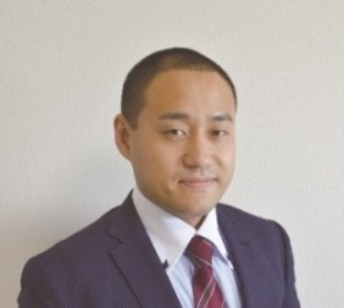
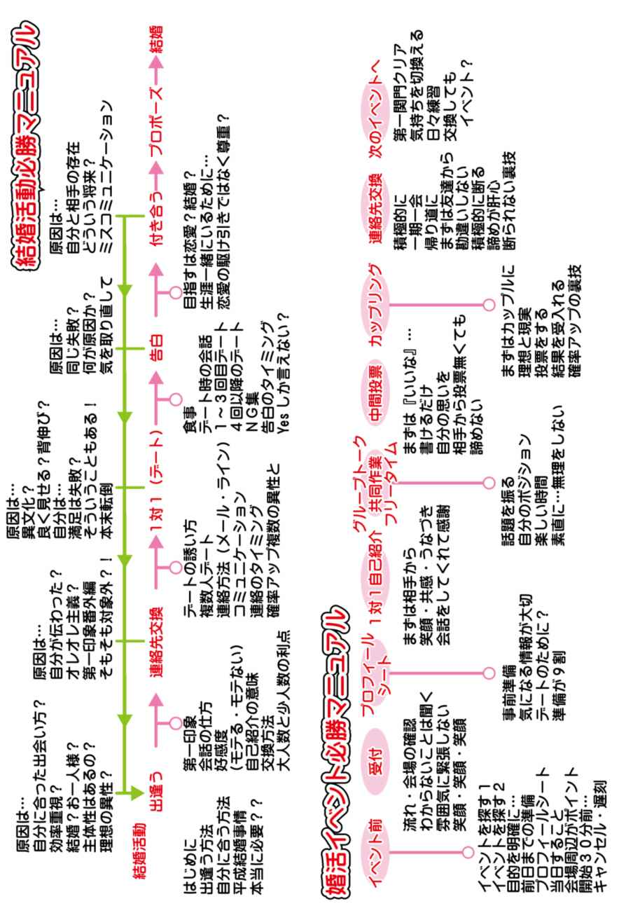

| 【完全版】独身者の婚活リアル相談Ｑ＆Ａ！: 婚活のプロが語る本音の話！婚活を始めたら読む本 結婚活動 | |
| 結婚活動コーチングトレーナー 入倉秀 | |
| (2019) | |
独身者の婚活リアル相談Ｑ＆Ａ！
～婚活のプロが語る本音の話！婚活を始めたら読む本～
一般社団法人 日本地域活性化事業協会 代表理事
結婚活動コーチングトレーナー 入倉秀
定価１５００ 円( 税 込)

まず初めに...婚活というもの関わらせて頂き早１０年。出会いからスタートして７つの婚活のステップを提唱させて頂いておりますが...
出会い↓連絡先の交換↓デート↓告白↓お付合い↓プロポーズ↓結婚
婚活で最初につまずくのは、登竜門の出会いと連絡先の交換です。なぜつまずくのか？これは仕方ないと言えば仕方ないのですが...、
１、恋愛の経験不足からくるもの。
２、親世代も経験したことのない婚活という特殊なライフイベント
だと思っています。まず１については完全に責任転嫁できます。うまくいかないのは経験が少ないことと、経験がないからどう対応していいかわからず...。また恋愛というものは人から聞いたり学ぶというものではなく出来ること。そう無意識にできるものだと思い込んでしまっているものなのです。でも実際には、 婚活を頑張らないと結婚出来ない人と婚活を意識しなくても結婚出来る人がいるわけで...。 これは仕方ないことかなとも思っています。なぜ仕方ないのか？だって経験がないから今の時代恋愛というものは優先順位が低い独身者も多く...だって娯楽がたくさんありますからね！わざわざ無理して...嫌な思いをして恋愛をする必要性というものは価値としてはほぼないかもしれません。また自分の思い通りにいかない ...(笑) だって相手がいることですからね...。でも今の娯楽のほとんどは自分の意思で行うことが多く...。そういう意味では自由にいろいろと出来るわけで...。でも恋愛は正解がなく...もちろん間違いもなくという部分では扱いにくいこともあります。だって十人十色だし。１０人いれば１０通りの人生がありますからね。本題から少しずれましたが...、この恋愛の経験ですが、数をこなせばある程度方向性は見えてきますし、自分はこういう人間だからこういう恋愛が出来るというものはわかります。でもそういう経験が少ない時点で...嫌な思いや苦い経験をしてしまうとわざわざ自分が傷ついてまでやることでもないということに...。だって娯楽はたくさんありますからね！３０歳を過ぎてある程度仕事に余裕が出てきたら新しい趣味を始める人が増えますしね。
２ですが、これはもうどうしようもない。そもそも婚活という言葉が提唱されてまだ１０年そこそこですからもちろん独身者の親世代は婚活なんて意識して行ってきていません。親世代はお見合い結婚か社内恋愛が主流の日本の良き文化の時代ですから、そういう意味では今の子供世代の結婚については軽視している親御さんも多いのも事実です。だって自分たちはそこまで考えずに結婚した事実があるから。もちろん親だからこそ子供の結婚について真剣に悩んでいる親御さんもたくさんいます。でも経験したことがないからこそ適格なアドバイスや経験者として語ることもできない...。もっというと昔の仲人さんや縁談を持ってくるおせっかいおばちゃんをされていた方々も今の婚活事情については正直理解は難しい部分があるかと思います。かといって結婚活動について知識のある職業なんてまだまだメジャーじゃないですし、既存の結婚相談所については正直昭和のやり方を引きついでいるという事実は否めません。ただ近年では時代の進む速さが恐ろしくなってきており...生身の人間がこの時代の恋愛や結婚のあるべき姿についていけていない...というのが現実的な悩みに繋がってるかなと思います。
一応私入倉もプロとして活動をさせて頂いておりますが...。今出ている恋愛や婚活の書籍は一通り目を通させて頂いております。やはり関わっている一人の立場として思うことは...
現場と書籍の話は近いようで遠い世界の話になってしまっている
という懸念です。もちろん私もこのように書籍を書かせて頂いていますので同じように読まれてい思われている方もいるかもしれませんが...。多くの著者は現状をヒアリングして書籍にまとめている。だからこそ誇大広告ではないですが、目立つ部分については強調されてしまい面白おかしくまとめられている部分がある。ということです。実際に独身者で自分の結婚について考えている独身者の立場からすると...、もっとリアルな話しを知りたいと思うのは普通のことですが、でも実際に普通に起こっている婚活のリアルをまとめても普通なのであまり盛り上がらないというのは現実的な部分かと思います。その点、書籍を書かれている方々は評論家や学校関係者、婚活に関わったことのある方がなど...ある意味何冊も本を書いているとありきたりなことは本の題材としてはウケが悪いのかもしれません。となると余計に婚活の現場で起こっている大多数のことよりも、少数のメディアがウケそうな話題や反響のありそうなことに触れるのはごく自然なことで...。でも実際に起こっている身の回りん婚活は？となってしまい...。そこはありそうでなかなかない婚活の話というのがやはり出回ってしまっているのが現実です。そもそも婚活なんて独身者であれば好き好んで婚活をしたいと思う方はほぼいないわけで...、出来れば楽して理想の異性と結婚したいと思うのが普通のことかと...。であれば現実的に結婚出来る婚活の話...という部分で同じ独身者の悩みに触れたのが本書になるわけです。
ここで一つポイントがあります。
『恋愛・婚活の悩みが解消されれば結婚できるのか？』
答えはＹＥＳでもＮＯでもあります 。(笑 )
悩みが解消すれば結果として結婚出来ることもありますが、悩みがなくても結婚出来ない人はいるわけで...。でも悩みを理解して
【この悩みはこういうものなのか！！】
という理解や頭で出来れば
うまくいくきっかけになる可能性
も高くなります。
なので、本書の使い方としたら...
これが大切で す(笑 )
この表現公に伝えると誤解を招きますが...、まずは自分の幸せを第一に考えて行動してください。他人の事や異性のことは二の次です。まずは自分が幸せになることが結婚活動のゴールへの近道です。よくお見合いや婚活イベントにい参加して連絡先を交換しても...人によっては声をかけられたから...断るのも悪いと思って...。またデートを重ねて相手のことを思うとなかなか断れない...などという相談をよく頂きます。これは正直いって
時間の無駄
です！失礼な言い方は十分承知しています。でも相手としても可能性がほぼないのであればはっきりと言ってもらったほうがけじめがつけやすいこともあります。また
うまくいかない人のパターンとしてマイナスや嫌なことばかり考えてそちらの行動をしてしまう
ことです。なのでご相談を頂いたりサポートさせて頂く方にはそこは口酸っぱく...自分の幸せを第一に考えて行動する。その相手にとっても先に自分が幸せになってその後異性でも紹介してあげたほうがよっぽど効果的かと思いますしね。
ですが実際にはそんなことを面と向かって相手には言えませ ん(笑) でも大切な考え方ですのでこの場でお伝えさせて頂きました。本書は何度も言いますが、みんなの悩みやなかなか行動できない内容を理解することによってご自身のきっかけになってもえらえばと思います。
実は本書に掲載させて頂いた質問は同じ質問をたくさんの方から頂いていることもたくさんあります。
自分の悩みはみんなと一緒
。逆を言えば
これから自分も悩む可能性があることを先に知っておくとダメージが少ない！
ということもあります。もちろんすでに婚活や恋愛で悩みを抱えている場合は本書がきっかけになるかもしれませんしね！
さて、本書を読んで頂くにあたり注意してほしいことがあります！それはこのＱ＆Ａのアンサーを書かせて頂いている 私入倉はそれなりに...１０年以上は婚活に携わっており、婚活イベントも１１００回以上運営していますし、お見合いも１０００回以上立ち会っています。悩み相談も何百人と対応させてい頂いておりますし、ご成婚の何百組も出ています。
でもこれは単なる実績や経験であって正解ではありません。
もちろん婚活未経験の方やまだ始めて少ない方からしたら確率論として成功しやすいアドバイスはできるとは思います 。( 謙遜して書いていますがかなり自信はあります。 笑 )
ですが私入倉のアンサーが実際にあなたの恋愛において正解になるかというは正直違います。そもそも恋愛に答えはないので正しいとか間違っているとかは判断するのはあくまでも自分なのです。自分がいいと思えばそれは正解ですし、でも社会的に間違っていると思われるような内容であったとしても...。だからこそ本書は参考程度にご理解頂くのがベストです。また他の書籍でたまに見るのが恋愛や婚活を断定した書き方をしていることがありますが...、私はどちらかというとその考えは否定的です。もちろん占いの方に決められていることや統計的にわかることであれば断定に近い表現は良いかとは思いますが...。でもあくまであなたの人生ですし、
あなたの判断がこの後の結婚生活のカギを握ってくることは事実です。その際に事実から目を背けず自分で決断して後悔のない選択をする練習をいまのうちからしてもらいたいと願っています。
なぜこんなことが必要か...それは今の時代離婚がオープンな時代と言われ、性格の不一致を始め離婚するきっかけはたくさんあるからです。もちろん結婚生活が出来ないのであれば離婚も視野に入れる必要はあるかと思います。でも改善してなんとかうまくやっていけるように対応できる力があれば...それは末永く幸せな家庭生活を築いてもらいたいと願っています。
『Ｑ＆Ａ』
～目次～
Ｑ．出会いの場が少ない。男性の会費が女性と比べて高いのはなぜ？ ５０代 男性
Ｑ．仕事のせいにして出会ってこなかった所を今も直せてない気がします。出会いの場に行かないと思うばかりで行動に移せていないこと。 ３０代 女性
Ｑ．仕事が忙しいと婚活イベントに参加する元気がないで す... 。年齢的なあせりも感じています が... 。 ３０代 女性
Ｑ．グループで仲よくなりたいと思うのは邪道でしょう か... ４０代 女性
Ｑ．４０才以上の方と友達になりたい。４０才すぎて友達をつくるのがむずかしい。 ４０代 女性
Ｑ．婚活に何度も参加してたくさんの異性と出会うあまり『本当に好き』『恋愛』という物がわからなくなっています。 ３０代 男性
Ｑ．どんな人が好きなのかわからなくなってしまいました。２０代 女性
Ｑ．人をあまり好きにならなくなってしまった。相手と性格が合うかを考えてしまう。 ３０代 男性
Ｑ．運命の出会いってあるんでしょう か... 。昔はカンタンに恋愛できていたのに今はすごく難しく感じてしまって、自分にはもう恋愛はムリなんじゃないかな？って思ってしまいます。 ２０代 女性
Ｑ．親の教え？が厳しくて好きな人が出来たことがありません！イケメンは好きです。 ２０代 女性
Ｑ．年を重ねるごとに、異性にいいなと思えなくなってきました。どうしたらいいですか？ ３０代 女性
Ｑ．頭でっかちになりすぎて恋愛に没頭できない。石橋をたたきすぎて渡る前に疲れる。 ２０代 女性
Ｑ．どういう人が好きなのか分からない。結婚って何だろう？ ３０代 女性
Ｑ．誰と恋愛できるのかわかりませ ん... 。 ３０代 女性
Ｑ．サバサバしていて男子っぽくてたぶんモテるタイプじゃない。 ２０代 女性
Ｑ．理想が高くなっていきます。結婚は『条件』ばかりが大切なわけではないとはわかっているのです が... 。 ３０代 女性
Ｑ．恋愛経験が少ないので、なかなか一歩が踏めません。 ３０代 男性
Ｑ．活動する上で自分の何がいけないのかわからない。上手くいくよう行動する為には何が必要なのか？ ４０代 女性
Ｑ．ストライクゾーンが狭い方なので素敵だなと思う方と中々巡り合えませ ん... 。出会いの数を増やせば良いのではと考えていますが、視野を広げることも大事でしょうか？ ３０代 男性
Ｑ．人に興味を持つことができないので、どのように興味を持てば良いか。 男性
Ｑ．バツ１ですが、そういう人でも受け入れてもらえますか ね... ３０代 女性
Ｑ．周りが結婚している人が増え正直あせりを感じている ２０代 男性
Ｑ．初めて参加して状況がわからない感じでしたが、自分を見直す機会になりました。友人が次々と落ちついていく様子に焦っています。 ２０代 女性
Ｑ．結 婚( 恋 愛) に向いていない気がする 。( 一人が好き、人と居るのが苦 手) 一応婚活はするが、気持ちが入らない。 ３０代 女性
Ｑ．好みの人に出会えない。結婚活動をしているが、トキメキがなく疲れてしまった。自分が価値がないように思えてきてしまう。 ３０代 女性
Ｑ．婚活に何度も参加してたくさんの異性と出会うあまり『本当に好き』『恋愛』 という物がわからなくなっています。 ３０代 男性
Ｑ．なかなか会話が盛り上げられない。これといった趣味がないので会話が続かない ２０代 女性
Ｑ．異性と会話がかみあわない。自分の意見を伝える手段 ３０代 女性
Ｑ．お客さんとのコミュニケーションに悩んでいます。 ４０代 男性
Ｑ．コミュニケーション不足のため、会話やりとりをしてイイ所、ダメなところを見てもらいたい。 ３０代 男性
Ｑ．もともとあがり症で人前で話す機会があると緊張してしまいます。 ３０代 男性
Ｑ．初対面の人とはあがってしまい話しができない。 ４０代 男性
Ｑ．異性とのコミュニケーションをがんばって話そうという意識が強すぎて失敗しました。 ３０代 男性
Ｑ．今まで自分ではコミュニケーション能力が在ると思ったのですが最近かけていると思った事です。 ３０代 女性
Ｑ．空気を読むのがヘタになった。相手の気持ちがわからなかったり。 ４０代 女性
Ｑ．笑顔作り、話題作りがのびなやんでいる。地道なとりくみは必要だが、もっとトークがうまい男性になりたい。 ３０代 男性
Ｑ．話しのわだいがでないので話し方をならいたい ３０代 男性
Ｑ．自分のアピールポイントをうまく話せなかったり、自己紹介が苦手です。 ３０代 女性
Ｑ．人見知りしていまうので自分が気になる人とはあまり話せなかったりします。上手にコミュニケーションがとれるようになれるといいなと思います。 ３０代 女性
Ｑ．イベントパーティー、飲み会での人見知りのたちふるまいについてベターなふるまいは？ ３０代 男性
Ｑ．職場での人間関係の好き嫌いがあ り... 、うまく話せない。５０代 男性
Ｑ．周りの本心と本当の本 心( コミュニケーションの質 問) ４０代 男性
Ｑ．アドリブでこたえるのが苦手なので聞かれたことに対してすらすらと言えない。相手の話しを聞いている時は相手の顔を見ることができるのですが自分が話す時は相手を見てしゃべれない。 ２０代 男性
Ｑ．自分がわからない話題や興味の持ちにくい話しがあった時にどう反応すれば良いかわからないです。 ２０代 男性
Ｑ．自分と価値観や温度差が話していてある方への対処方法をききたい ３０代 女性
Ｑ．他人が話している声が聞きとりにくい時、聞き返せない ４０代 女性
Ｑ．笑顔は意識しているが、初対面でだすのは難しい。意外にも笑顔ができてなかった。もっと練習方法 ３０代 男性
Ｑ．イベントに来ていて自分が『いい な... 』って思える人ほどあまりふり向いてもらえませ ん... 。話を盛り上げる以外に何か良い方法はありますか？ ２０代 女性
Ｑ．ステキな笑顔になるのが難し い... ！！ ２０代 女性
Ｑ．好印象のある女性にアタックがうまくできない ５０代 男性
Ｑ．相手も恋活しているとわかりやすいけれども恋活しているのかわからない男性に女性から積極的にいってもいいかな。 ２０代 女性
Ｑ．出会いはあるが自分に自信がなく連絡先など聞けずに待ってしまう。 ３０代 女性
Ｑ．年齢がはなれているとついつい人見知りして話をするのがおっくうになります。笑顔で楽しく話しができるようになりたい。きれいな人を若い人を見ると『どーせだめだろう』と思い声をかけられない。 ３０代 男性
Ｑ．若い子を好きになったが相手にもされませ ん( 知り合いで す) ４０代 男性
Ｑ．好きな人がいるが同じ職場で告白が出来ない。勇気が無い３０代 女性
Ｑ．相手のいい所を見つけるのが上手になりたいと思いつつ、マイナス部分が気になってしまう自分からなかなか脱却できないでいま す... 。 ３０代 女性
Ｑ．相手のたん所が気になったりとなかなか恋愛に発展しなかったり長続きしないで す... 。 ４０代 男性
Ｑ．あせってしまう。ねっしやすくさめやすい。イヤな所がよく見えてしまう。さみしくなる。 ２０代 女性
Ｑ．自分ことを話す際にどのくらいの長さで話す方が聞く側にとってよいのか等。恋活に参加する際には考えてしまったりします。 ２０代 女性
Ｑ．経 験( 慣 れ) にもよるのかもしれませんが、不幸を買いやすい ３０代 男性
Ｑ．婚活でのメール・ラインを交換してもあとが続きませ ん... ４０代 男性
Ｑ．ＬＩＮＥで仲良くなるのが難しいです。自分が連絡手段としか使わないので。 ２０代 女性
Ｑ．ラインの交換は出来るが、相手から返事がな い( 自分が送る が) ３０代 男性
Ｑ．ラインのやりとりが大 変... 。イベントに参加して連絡先を教えて下さいと言われて断れなくて交換してムシしたりしてしまって、次のイベントで会ってきまずい。断れるようにしたいです。 ３０代 女性
Ｑ．連絡先交換したけど合わないなと思った時は？ ３０代 女性
Ｑ．会話で話をしますが、なかなかそれ以上、上手くいかず自分でも何がいけないのかわからない ４０代 女性
Ｑ．ＬＩＮＥを交換してその日のうちに相手にメッセージを送りますが、どういう内容の文章を送ったら良いですか？ ３０代 男性
Ｑ．話がはずまない。盛り上がりにかける。電話番 号( ＬＩＮ Ｅ) を聞いても会話がはずまず。食事もしくは映画などの外出までさそえない。 ２０代 男性
Ｑ．婚活後、相手との連絡のしかた、失敗せずに連絡をしたいです。 男性
Ｑ．連絡先交換後や２回目につなげる為にはどうしたらいいか。 ４０代 男性
Ｑ．ＬＩＮＥ交換後お食事に誘ってもらえるのはお会いするきっかけにもなりうれしいが会う前から友だちではなく彼女のような内容で接せられると対応に困ること が... 。まずは相手を知る時間がほしいです。
Ｑ．１回目のデートで印象を良く見られるにはどうしたらいいですか？ ２０代 男性
Ｑ．１回食事に行ったりしても２回目に出かける事が出来ませせん。 ３０代 女性
Ｑ．１回目の食事から次になかなか続かない 。( 次のデートの約束は、店から出て会話する時にしています 。) ほとんどぜひ次もと言ってもらえるのです が... 。 ３０代 男性
Ｑ．ＬＩＮＥ等で女性の方からまた連絡しますという言葉を聞きますが、どこら辺まで待ては良いですか。 ３０代 男性
Ｑ．食事に何回か行った後もメールやＬＩＮＥでのやりとりはアポとる以外には控えた方がよいですか ３０代 男性
Ｑ．連絡先を交換し１回目のご飯に誘えますが２回目のお誘いの仕方が上手く出来ないです。 ２０代 男性
Ｑ．連絡先交換後や２回目につなげる為にはどうしたらいいか。４０代 男性
Ｑ．婚活で知りあった人と何度かデートをしてもお付き合いに至らず連絡も途絶えてしまい。どうすればちゃんとお付合いできるのか知りたい。 ３０代 女性
Ｑ．出会いはそれなりにあります。が発展しません。お付合いに進展されるにはどうすれば良いのでしょうか。 ２０代 女性
Ｑ．なかなか長く続かない。番号交換しても顔とか他の色々なことをわすれてしまう。ことわりかたがむずかしい。 ５０代 女性
Ｑ．友達にはなれるけどその後の発展がな い... 。すぐ茶化してしまいま す... 。はずかしさをとりはらいたいです。どうしたらよいでしょうか？ ２０代 女性
Ｑ．友人関係から恋愛に発展されるのが難しいです。好きになった人に好きになってもらうのはなかなか難しいな ぁ... と思います。 ３０代 女性
Ｑ．年齢が気になってしまって積極的になれないこと。一回ごはんにいっておわってしまうことが多いこと ３０代 女性
Ｑ．再婚希望のためどこまで情報開示をすれば良いか、タイミングが良くわからない ５０代 男性
Ｑ．仕事も時間が不定期。休みも不定期。会う時間がお互いにとれなく終わってしまいます。 ４０代 女性
Ｑ．好きな人がいるが同じ職場で告白が出来ない。勇気が無い３０代 女性
Ｑ．つき合いだすとダメ男にほぼほぼなっていくんです が... （束縛、ストーカー、働かない、けいたい 鬼 chec k ）などなど。そーゆー恋愛をひきよせてしまうのはどうしてですかね ４０代 女性
Ｑ．自分が良いと思った人からは好かれず、そうでもない人からの誘いがあり上手く行かないことが多い。 ２０代 女性
Ｑ．タイプ→高身長でゆったりした大人な人。けど良いと言ってくる人は背のひくいペラペラしゃべる人。どー対応していいかわからない。 ３０代 女性
Ｑ．いいと思っても相手からなかなか良いお返事がいただけません。 ２０代 女性
Ｑ．お付合いするかしないかの判断基準はどう考えたらよいですか？ ３０代 男性
Ｑ．経済的な面、男性の職業で結婚しても大丈夫か？お付合いしても大丈夫かな ど... 。なかなか自分の好みの人に出会えない（イベントに行っても同じ人ばかりなど） 女性
Ｑ．婚カツで知り合って付き合うまで行くんですが長く続かないです。相手に合わせるのが苦痛になってきてしまいます。 ３０代 女性
Ｑ．付き合っていて結婚したい度合いが相手にどのくらいあるかを聞きにくい。どうしたら聞き出せるか？ ４０代 男性
Ｑ．年下の男性を１年以内に結婚に導く方法を教えて下さい。年下の男性と上手につきあっていく方法を教えて下さい。 ３０代 女性
Ｑ．相手の年 齢( ２０代、３０代、４０ 代) によって直ぐに結婚をもとめるものでしょうか？
Ｑ．れんあいコミュニケーションがむずかしい！！ ２０代 女性
Ｑ．自己中心的な性格の人がいてどう付き合えば良いかわからない ３０代 男性
Ｑ．悩みは、なかなかお互いが良いなと思える恋愛にならないことです。
Ｑ．本当の自分を見せられなくて疲れてしまいます。 ３０代 女性
Ｑ．人に印象良く見られようと努力している自分と素の自分の出す割合。タイミング等。グループ活動が出来な い( 苦 手) 。自分はこのグループに必要なのかという思いにしばらくすると必ずなる。 ３０代 男性
Ｑ．初対面→連絡先交換→×、お見合い→２回目×、出会いサポートセンターでも出会えな い... 。繰り返し５カ月経ち、見直したい立ち止まり、もう一度前に進みたい ３０代 男性
Ｑ．フラれた時・食事に誘って断られた 時... 落ち込みます が... 、どうやって立ち直ればいいですか？ 男性
Ｑ．何回も参加するにつれて会う人が同じ人になっていく ３０代 女性
Ｑ．病気が結婚のネックにならないか？４０才では結婚はむずかしいか？ ４０代 女性
Ｑ．ご縁があってお付合いが始まった時、結婚も視野に入れたいと考えています。ただ、その時に例えば自分自身や家族等にハンデがあった場合、その事をいつ相手に伝えれば良いでしょうか？ ２０代 女性
Ｑ．これから結婚できるか な... 不安です。でも活動しながら希望すてないで頑張ろうと本日思えました。 ２０代 女性
Ｑ．他県出身で山梨で婚活をしていますが、山梨の人は将来的にも山梨で暮らしたいのだと考えると消極的な活動になってしまう。 ３０代 男性
Ｑ．転勤の可能性があるので地元に残りたい人とは合わない ３０代 男性
Ｑ．結婚にこだわりがなく、将来年を取ってから一人ではさみしいので親しい友だち感覚でおつきあいできる人がいればいいかなぁと思います 女性
Ｑ．結婚できた！まだ だ... 。の方の境界線、違いって？ ３０代 男性
本書での回答については、年代及び回答の仕方や文字の状 況( 質問用紙は手書きにて記載されてい る) により入倉が独断と偏見で質問者の状況から回答をさせて頂いております。また場合によっては、質問者が入倉で特定した上でのアドバイスも中には含まれています。なので、回答によっては一般論からかけ離れている可能性もあります。ご了承ください。ただ本書で伝えたいのは、
学者さんや評論家の方々が理解しがたい細かい部分の悩みから一般的な恋愛相談までの実情
をお伝えできればと思い構成させて頂いております。一般的に出回っている恋愛書籍・婚活書籍とは少し違った角度で編集させて頂いております。逆に一般書とは違い尖りすぎている回答もあり参考にならない部分も出てくる可能性もあります。その場合は参考程度にご理解頂ければと思いますし、
百聞は一見に如かず
ではないですが、他人の悩みを自分目線でどう考えるのか？もしくは入倉の回答からどう思うのか？という部分も楽しんで頂ければと思います。自分の悩みと同じ悩みがたくさんあったり、こういう悩みもあるのか？という部分から新たな婚活という理解をしてもらえればと思っています。
くれぐれも本書を鵜呑みにせず、自分は自分、他人は他人！という目線も残しつつ事例として理解してください。
最終的にご自身の恋愛や婚活・結婚はご自身が良いと思ったらそれが正解です！回りに何と言われようと！陰ながら応援しています！
Ａ．確かになかなか日常生活で出会いってないですよね...。私入倉も婚活中は出会いがないな～とよく思っていました。特に私入倉が独身のことはサラリーマンでさらに異性がいない職場だったので...これには愕然としました ね(笑) で大切なのは異性と出会う機会を自分から作ると言う事です。今の平成の時代結婚したければ自分で出会いを探さないとありません。親世代の昭和時代ですと勝手に回りから縁談の話しや紹介をしてもらえましたが...、今の時代プライバシーやパワハラセクハラという問題でなかなか他者が関与しにくい環境になってしまい...。だからこそ自分で活動しないと時間ばかりが過ぎてしまう...。もちろん誰か紹介してくれそうな人がいたらどんどんお願いすることも大切ですよ！で一番大切なことは... 『本当に結婚したいのか？お一人様でもいいのか？』 ということをぜひ一度真剣に考えてみて下さい。これ意外と考えたこと無い人が多く...回りが結婚しているから親から結婚しろと言われたから...という理由で客観的に婚活イベントに参加している方がいます。これだと活動しても効果が低く...だって自分目線じゃないですからね。本当に心底結婚したいで活動している人は年代関係なくかなりの確率で結婚されています。これ事実です。でも『出来たらいいなぁ～』とか『良い人いたら結婚考えようかな～』で活動していてもなかなか実を結ばないことが多いです。これはリアルに現場で起こっている事ですぜひ一度自分と向き合って頂き本当に結婚したいのであればぜひ積極的に異性に会う習慣にしてみてくださいね！あとは結婚相談所に登録も効果的な方法ですよ～
Ａ．今の時代なかなか出会いがないですよね...。私入倉も独身の時は毎日のように素敵な異性が現れないかなと願ってしましたが...日常生活には全く出会いがありませんでした。これって現状として多くの方が直面している事実だと思います。でも出会いがないと嘆いているだけでは...時間ばかり過ぎてしまいますよ...。活動するなら今がベストタイミングです。年齢は関係ありません。 恋愛したいな結婚したいなと思った時がベストタイミング です。相手から来てくれるのを待ち続けるか？自分から積極低に行動するかは自由です。もちろん結婚しないという選択も間違いではありません。ただご自身が思い描く将来がどうかというのが非常に大切です。ご自身の人生設計をしてみて何歳までに結婚したいとかがあれば行動は積極的になるかもしれませんよね。一人で行動するのことがハードルが高いなら一緒に頑張りましょ う (^O^ ) ／応援しますよ！
Ａ．出会いがないのであれば自分から積極的に異性に会うように心がけましょう。昭和時代とは違い平成時代では自分から行動しないと結婚は難しい時代になってしまいました。また出会いというのも自分のなかで優先順位を上げないと行動できない部類に入ってしまっています。というのが娯楽であったり自分がしたいことがたくさんある時代ですからね。休みの日にしたいことが多い人もいて出会いの優先順位が低くずっと独身でした...とご相談を頂くこともあります。もちろん仕事が忙しかったり打ち込みたい趣味があることもあるでしょう。たまには 出会いの優先順位を上げて行動してみて ください。合コンやデートなども積極的にしてみてくださいね。周りにあまり異性がいない場合は 婚活イベントに参加するのがコスパ的には可能性が一番高い です。あとお金に余裕があるなら民間の結婚相談所もおすすめです。親身に関わってくれますからね。あとは県や市町村などではそういうサポートしてくれるところもありますのでお住まいの役所で聞いてみてくださいね。まずは行動あるのみです！どんどん行動してみてくださいね！
Ａ．出会いって無いですよね...。私入倉もサラリーマン時代があったのですが...、工学部の出身でそっち系に就職しましたからね...同年代の異性は居ませんでしたもん。出会いなし...、職種も開発研究設計職だったのでパソコンとにらめっこですよね ...(笑) もちろん同じ境遇の同年代はたくさんいますよ...。出会いがないから婚活・恋活イベントに参加しましたって方多いですからね...。日常生活で異性と会える仕事の人がうらやましいと思いますが...。そんなこというなら転職しろよ！って思われる人もいるかもしれないですよね...。話しは戻しますが、出会いがなくて恋愛したいな... 結婚したいな...と思ったら身の回りの出会いの機会を探してみましょう ！もちろん私入倉は婚活・恋活イベントを主催していますので出会いがなければイベント参加をおすすめしますが...、 合コンや友達の紹介や今だとネットお見合いやサークル活動などでも出会う事はあります 。出会いがないからこそちょっと外に出かけてみて下さいね！普段関係性の無い人たちと関わる機会が増えると新しい異性と出会うこともあると思いますよ！もちろん...そんな... 人見知りでできない...と言う時は山梨恋活コミュニティのイベントにご参加ください ね！スタッフ一同サポートしますからね～ （ *^_^ * ）
Ａ．なかなか日常生活だと出会いってないですよね...。特に独身の異性って難しいかなと思います。私入倉も婚活中は必死で出会いを探しましたが...なかなか日常生活ではなく...婚活イベントを利用させて頂いておりました。知り合う機会が無いと言われる男女の多くはそういう出会える場所にあまり行かない方が多く非常にもったいないです。今の時代 婚活イベントは独身の異性に会う上では時間とお金と言う部分ではコストパフォーマンスでは効果的かなと思います 。もちろんそれ以外でも出会いの方法はたくさんありますのでまずは行動してみてくださいね。男性の会費が高いというご意見ですが...、私入倉も婚活中はよく思っていました ...(笑) なんでこんなに男性が高いのか...。ただ異性と会うだけなのに...と思ったことがありますが...でも実際に独身の異性と出会うことを考えると非常にお金がかかるんですよ...。上記の話しで婚活イベントはコスパ的に効果的とお伝えしましたが...通常のカップリングパーティーの場合...男性６０００～８０００円程度が一般的で女性は１０名程度ですよね。実際にその金額で女性１０名には日常的に会えないですよね...。例えば夜のお店では１時間でお二人くらいと話せて５、６０００円くらいしますから ね(笑) 自分で独身の女性を集めることを考えればめっちゃ安いです。それと主催者側目線とすれば集客の為の費用がめっちゃかかりま す(笑) 。ちなみに山梨恋活コミュニティの場合は カップリングパーティーとは違い基本的に食事ありで男性４５００円程度ですのでめっちゃ安いと思います。イベントによっては赤字ですからね ...(笑) もちろん婚活イベントの会費が高いと思うのなら参加しなくていいとおもいますよ ...(笑 )
Ａ．なかなか日常生活で出会いの機会って少ないですよね...。私入倉も元々はサラリーマンで工場併設の事務所勤務でしたので同姓がほとんどで出会いなんてありませんでし た(笑) なのでこれからの時代は自分から積極的に行動しないとやばいなと思い行動するようになりました。もちろん同じような環境の人は多く、男性に限らず女性でも出会いの無い人ってたくさんいると思います。この 出会いが無い状況を嘆いているだけで行動しないのか...出会いがないから行動するのかはあなたの人生を大きく左右するかと思いますよ 。結婚を希望するのであればどんどん行動して異性と出会ってみて下さいね。また会費についてですが...山梨県の場合は独身人口と県民性の関係から男性の方が高い設定になっています。同じ金額だと圧倒的に男性が多く集まってしまいイベント自体が成り立たない可能性が高いからどの団体も男性が高めに設定してあります。もちろん高いのであれば婚活イベントに参加しなくていいと思います。主催者の立場としてそんなこと言ってはいけない感じですが、価値として見合わないのであれば違う方法を選択した方がいいです。しぶしぶ文句を言いながら参加していてもうまくいきませんからね。 結婚活動では婚活イベントがコストパフォーマンスでは抜群に効果性は高いです 。平均で男性の場合は５～６０００円で異性と１０名前後に会えるというのは他の出会う方法にはありませんからね。合コンの場合は４対４でも食事代などを考えればもっと高くなりますし、お見合いでは一人の異性に会うのに３～４０００円くらいです。男性の場合キャバクラですと１時間で二人の異性と話せて５０００円が相場です。そう考えると婚活イベントって相当コスパが良いです。でもそんな婚活イベントが高いと思うなら違う方法で探して下さいね！
Ａ．最初から厳しいことを言いますが、ほとんどの独身の方は同じ状況かと思います。今の日本において『結婚』するか『お一人様』かはご自身の判断になります。その状況ですと日常的に異性と会えないとなれば自分から会うしか結婚する方法はないかなと思います。もちろん結婚したければですが...したいのであれば自分から積極的に出会いの場に足を運んだり友人に紹介してもらったりと行動してみましょう。もちろん日常的に恋愛出来る環境だったら良いのですが...でもそれを理由にしてしまうと何も始まりませんよね。厳しい意見かもしれませんがあなたの人生です。自分がどうするか？どうしたいのか？出会いを探してい恋愛・結婚したいのであれば積極的に行動してください。私たちも応援しますので。くれぐれも何かのせいにせず自分と向き合って充実した人生を送ってくださいね。
Ａ．回答...なら出会えばいいんじゃないですか？解説...仕事を言い訳にしないでくださいね。厳しい事かもしれませんがあなたの周りで誰も言ってくれないなら私が親身になってお伝えします。仕事も恋愛・結婚もあなたの人生です。だからこそあなた自身でなんとかしたいならなんとかしないとダメですよ。もちろん仕事が忙しいから恋愛・結婚はしない...という選択でも問題ないと思いますが...仕事が忙しいのを理由に出会えないというのはダメです。うちのイベントに参加していた男性の方で毎回遅刻するので仕事忙しいんですか？と聞いたら『朝から晩まで働いていて仕事が夜じゃないと終わらないのです...他のイベントだと遅刻厳禁みたいな雰囲気でこち ら( 山梨恋活コミュニテ ィ) だとそれでも出会いを求めているならＯＫと書いてあったので参加させてもらっています』という話しを頂きました。もちろん山梨恋活コミュニティは遅刻参加ＯＫです。たまたま時間が空いたら当日でも空きがあれば参加ＯＫな団体ですのでぜひ積極的に参加してみてください！一番の遅刻は終了３０分前に来られた方もいましたよ。でも異性と会わないよりは少しでも独身の異性のいる空間に接するだけで自分の感覚が変わってきます。山梨恋活コミュニティは頑張るあなたを応援していますからぜひ一緒に頑張りましょう！くれぐれも仕事を言い訳にせずご自身の恋愛・結婚はご自身で行動してみて下さいね！
Ａ．じゃあとりあえず婚活イベントに出てみて下さい。そしたらまずは行動クリアですよね。いきなり異性に出会ってデートして告白してお付合いしてってハードルが高いかと思います。私入倉もたくさん失敗しましたがね、経験だけは良かったかなと今でも思っています 。( フラれた時はガラスのハートが何枚も割れましたがね... 笑 )
山梨恋活コミュニティのイベントではどちらかというと出会いというよりは食事会くらいの感覚かなと思います。あと仕事が忙しければ遅刻参加もＯＫです！ポイントは...『今からでも遅くはないのでとにかく少しでもいいので独身の異性に会う事』です。とにかく出会いがなければ会えばなんとかなる方がたくさんいます。一緒に行動しませんか？
Ａ．確かに仕事と恋愛の両立って大変ですよね...。私入倉も婚活疲れで休んだことあります...。まぁ、どうしても恋愛したいわけではなければ別に婚活イベントに参加しなくてもいいかと思いますよ...。主催している私入倉がこういうこと言ったら御幣を招きますがね ...(笑) でも私入倉的には結婚したければ結婚活動すればいいですし、仕事中心ならお一人様という人生も良いのかなと思います。 私入倉の個人的な意見としたら結婚して毎日充実した生活を送れていますので結婚はおすすめです がね。主催していますが、絶対おすすめとはごり押しはしませんので ...(笑) でも、今後のことや親や周りから結婚をすすめられているのであれば...積極的に行動した方が得策です。中途半端に活動しても正直長引く方がたくさんいます...。であれば自分の中で期限を決めて行動するのもありかと思います。実際に期限を決めた方が活動に意欲を持てますしね。年齢的な部分で焦っているのであればなおさらです。だって今活動するのか？来年活動するのかで...今の年齢かプラス１歳の年齢か...。というところになります。自分自身ではプラス１歳ってそんなに変らないですが、異性から見られている１歳って男女関係なく大きいですよ。であれば今行動した方が可能性は高いと思います。 若いとか関係なく自分で活動しようかなと思った時がベストタイミングです。 一緒に頑張りましょう！
Ａ．グループというのは、婚活イベントで出会ったメンバーという感じで大丈夫ですかね？合コンとかの自分の友達とみんなでという感じですと比較的グループで遊ぶ事って多いかと思うのですが...。今回は婚活イベントということでイベント内で知り合った同姓異性関わらずのグループでという回答をさせて頂きますね！実はですね...私も聞いた話ですが...意外とそういう感じで仲良くなって遊んだり飲みに行ったりしている人がいるみたいですよ！山梨恋活コミュニティのイベントはグループトークがメインでしてそのメンバーでみんなで連絡先を交換してみんなで集まることは実際にあるみたいですよ！ですので邪道ではなく...、実際に私入倉拙著【結婚活動必勝マニュアル】内でも触れていますが、１対１のデートも大切ですがグループデートでも距離を縮めることは可能です。なかなか気になる異性には声かけにくいですよね...そういうときはみんなを巻き込むのも方法の一つですよ！特にですが...平日開催している共同作業恋活では一体感になりやすいです。たこ焼き恋活やクレープ恋活、鍋恋活など一緒に作業することでお互いの距離が縮まり...みんなの距離も縮まり...。後日みんなで集まったと言う話しもありましたらかね！頑張ってみてくださいね！
Ａ．友達ってなかなか増えないですよね...。私入倉も何を隠そう...友達は少ないです。でも知り合いはものすごい多いですが ね(笑) でここで大切なのが...一応恋愛・婚活の悩み相談シートですので... 結婚活動する上では...出会う人みんな友達からスタートした方がうまく行きやすい です。よく婚活セミナーや恋愛勉強会でも話題になりますが、いきなり異性と面と向かってお互いを探るのは正直うまく行かないこともあります。であればまずはお友達目線からスタートするのはリスクが少なくうまく行きやすいです。それとただ単に友達が欲しいのなら、婚活イベントではなく、趣味のサークルや同じ考えを持っている人の集まりに参加した方が早いですよ。最近ではＳＮＳの発展により簡単に同じような考えや趣味を持っている人と繋がることができますからね！婚活イベントとなるとどちらかというと結婚活動で結婚したい人がもちろんメインになりますからね。普通の友達を増やしたいならそういう探し方もありかと思います。
Ａ．かなか友達って作りれないですよね...。私入倉も婚活中は友達を作りたいなと思っても...。なかなかうまくいかない思い出がありました。 友達を作りたいなら...、率直にそう伝えればいいかなと思います。 もちろん友達から発展してお付き合いすることもあるかもしれませんし、友達を誘って複数で食事や飲み会なども考えられますからね。その紹介から素敵な異性にあえることもありますし。まずはお友達になれそうな人と出会うことが大切です。そういう場所に積極的に参加してみてくださいね。もちろん婚活イベントも大切ですし、それ以外で出会える方法を模索してみてくださいね。同じように友達を作りたいと思っている同年代の方も必ずいますから！
Ａ．根本的な話しですが...わからないことが普通です。これは過去の自分の経験談やドラマやインターネットなどのメディア情報から好きという判断基準になっています。例えば好きな芸能人の顔と似ている異性がいたら好意を寄せてしまうのと一緒です。結婚活動において好きや恋愛を考えるのがわからない場合は...その人と一緒に生活できるかどうかイメージしてみてください。もちろん会話をしてみて内面を見ながら一緒に暮らせそうか？というのは大切な判断基準です。
Ａ．人間ですので他人も自分もわからないことが普通です。ですが、なぜ結婚するのでしょうか？ 一人が寂しいから？結婚したいから？回りが結婚しているから？人それぞれ理由はあります。一つの共通点とすれば...人生を一緒に過ごしたいと思うか...助け助けられ...。気を使い気を使われる関係になりたいかどうかだと思います。もちろん、面倒であればお一人様という選択もありです。その中で...これも誤解している人が多いのですが...。自分自身のことがそもそも完璧にわかっていないのだから、他人のことなんてすべてはわからないです。これが普通です。だからこそ、人間関係を構築し相手のことを知ろうと努力する必要があるわけです。それが結婚かなと思います。
Ａ． 好きな人が分からないことが普通ですので心配しないでください ね。そんなときはとりあえず異性とデートに行ってみて『悪くなければとりあえずお付合い』をしてみてください。なかなかうまくいかない人の共通点の一つに頭で考え過ぎてしまう行動ができない...ことが多いです。またお付合いについてもご自身で勝手にハードルをあげてしまい全然付き合えない...という方が増えています。結婚活動ではとにかくお付合いをしないことには結婚は出来ないかと思います。 【出会い→連絡先の交換→デート→告白→お付合い→プロポーズ→結婚】 の順番でゴールされる方が一般的ですのでまずは行動あるのみでとりあえず付き合ってみることは大切です。『そんな簡単に付き合えない...』と思うかもしれませんが大丈夫！ダメなら別れて他の人を探す事ができますからね。でも行動しないことには何も変わりません。ずっと同じですよ。
Ａ．大変申し訳ないのですが...、一番の直近でご両親は好きで結婚したと思いますか？もちろん好きで結婚した人もいるかと思いますが、好き以外で結婚した人も多いと思います。なので...いいんですよ！好きにならなくても。好きじゃなくても一緒にいたい人がいたらその人と結婚すればいいし生涯独身でもよければお一人様を選択すればいいと思います。一番問題なのが...好きになろうと努力することです。好きって感覚的なものなので自分で何とかなる...（もちろん自己催眠とかっていう話しは別で...）ことではないかと思います。 良く誤解している人の多くが好きな人＝結婚する人と思い込んでいる人がいるかと思います。 もちろん間違いではありません。大好きで結婚して結婚式で永遠の愛を誓っても離婚する人っていますよね...。なので、その時はその時でしょうがないのです、人の気持ちなんて変わるものですからね。一緒にいてもいいなくらいでとりあえず付き合ってみましょう。また 相手と性格が合うか？というポイントですが、基本的に合いません。だって生まれ育った環境も違うし性格も違うし価値観も違います。でも相手に合わせようとお互いが努力することは可能です。 始めから合ったとしても前述の通り変わりやすいので...となればお互いが合うように努力し続けることが長く一緒にいる秘訣ではないでしょうか？恋愛はお互いの好きで成り立ちますが、結婚は生活です。だからこそお互い過ごしやすい関係になれると良いのかなと思います。
Ａ．運命の出会いがあるかないか...個人的な意見としてはあると信じています。ですが 結婚活動では運命の出会いは自分で掴む方が早い です。待っていても来ない可能性もありますからね（来たとしても気付かない人もいて非常にもったいないです）ではどうやって自分で掴むのか...それは準備を万全にしておくということです。もう人生練習だと思って異性と会話を楽しんだり、 練習だと思ってデートしたり、練習だと思ってお付合いしてみてください。 歳を重ねると人の悪い癖で行動が若い時に比べてしにくくなります。なので、いつ運命の出会いがあってもいいようにどんどん練習だと思って積極的に行動してみてください。そんなこと言っても...と思うかもしれませんが生理的に受け付けない以外はどんどん異性と交流してみてください。この練習を重ねると必ず運命の出会いが待っていますよ。もうすでに何人もの人がうまくいったところを見てきたので確実です ＼ (^o^ ) ／また難しく思ったら難しい現実になってしまいます。簡単だと思えば簡単な現実になります。そこはプラスに考えて幸せな結婚生活をイメージして活動してみてくださいね。
Ａ．同じようなご質問や悩みを抱える２０代の方が多いのですが...。ある統計ですと２０代でも一度もお付合いしたことが無い人が全体の４割程度いるというのを見た事があります。でも実際には半分以上はいるんじゃないかなと私は勝手に思っています。ということはそれが普通です。よくドラマやマンガでそういう好きとか運命みたいな話が盛り上がりますが...。実際に『好き』という感覚は人それぞれで目に見えません。だから良いのです。自分なりの好きを探してみてください。もちろん好きがわからなければ 結婚活動では『一緒にいてもいいな』『この人なら生活しても自分らしくいられるかも』という異性を探してみて ください。もちろんイケメンでもいいかと思いま す( 笑。あぁ、イケメンがいいのか... 笑) で最後に厳しい一言を...もう２０代ですので親の教えということは忘れてください。今が一番大切です。過去の事なんてもう変えられません。変えられるのは今しかなく、この今があなたの将来・未来を形成します。もう自分のことだから親のせいにはせず自分に責任をもって行動してください。今からでも遅くはないです。ぜひイケメンを探してくださいね 。(笑) 行動あるのみ！充実した結婚生活を送れるように一緒に頑張りましょう！
Ａ．なんでいいなと思いたいのですか？別にいいなと思わなくてもいいかと思いますよ～！だっていいなと思えないんでしょ？そこは別にそのままでいいかと思いますし無理は疲れるだけですよ。結婚活動においては、もちろん良いなという判断基準の方もいますが、それだけで結婚しているかといったら賛否両論かと思います。であれば自分はあまりそういうのを感じない方だと割り切って 『結婚しても一緒に暮らせる』や『自分が自然体でもいられる』異性 を探してみてください。私入倉も結婚活動の時に思った事があるのですが、すごい好きな人と結婚したら背伸びしたり良く見せようとするから疲れないですか？私入倉も過去にすごい好きな人とお付合いすることができたのですが...なんだか一緒にいるときは気を使いすぎて疲れる事が多かったです。もしすごい好きな人と結婚したら息が詰まるだろうなと勝手に思った事があります。で今の奥さんは 『自分らしく接することができる』人 を優先して探しました。なので、今の奥さんとは言いたい放題の関係で す(笑) いいなという感覚ではなくお互いこの人なら別に一緒にいてもいいか ...( 笑 奥さん 談) くらいの感覚です。もちろんこれが正しいとか間違っているとかじゃないです。これもひとつの結婚の形で十人十色の結婚の形があるかと思います。いいなと思う事も同じようなことだと思います。だからこそそこにはとらわれずに結婚活動をしてみてくださいね！
Ａ．一発回答...まずは行動してみてください。解説...ご自身でもわかっているかと思いますが...、まずは行動するしかないかと思います。でも考えちゃいますよね。ふられたらどうしようとか嫌われたらどうしようと...。みんな同じです。でも今の平成の時代では自分の人生は自分で何とかしないと何も始まりませんよ。誰もあなたの人生を面倒見てくれないです。今行動するのか？考え過ぎてしまい行動できないのか...？ここで大きな差が出てしまいます。本気で結婚をしたいのであれば自分を変えてみませんか？実際にですが...意外と活動してもそれほど苦じゃないですよ！とにかく異性と会う習慣から始めて下さいね！山梨恋活コミュニティのイベントは食事がメインですので、まずは食事に来たらたまたま異性がいたくらいの感覚でお越しくださいね～ ＼ (^o^ ) ／
Ａ．私も婚活をしていて...全然わかりませんでした ...(笑) 必死で結婚活動中は婚活イベントに参加したりデートしたりを繰り返しましたよ。今はこうやってイベント主催をしたり婚活セミナーを開催していますが...でも結婚してわかったことがあります。それはゴールは結婚ではないこと...結婚活動でのゴールは結婚ですが今は離婚がオープンの時代ですので気が合わなければ離婚です。だからこそ結婚が第二の人生のスタートかなと思います。で私が結婚する前に意識したのが『好きな人と結婚してもうまくいかないと思い...自分らしくいられる...もしくは一緒にいて苦痛じゃない人』という感じで結婚活動をしました。極端な話し無口でも同じ時間を共有出来ればという感じでした。もちろん私の意見なので...参考程度にしてくださいね。でも考え過ぎてもダメですよ。行動あるのみです。いろいろな人と出会ってみて下さいね。で一般的には好きな基準がないためどんな人が好きかわからないですし結婚って人それぞれの形なので結婚してみて初めてわかることだと思います。でもまずは結婚してみないとわからないですから、そこは考え過ぎずに！どういう人が好きかわからなえればいろいろなタイプの異性とデートしたりお付合いしてみてください。そうすれば少しは近い答えが見えるかもしれないですよ！
Ａ．初対面の人に興味が持てないならわざわざ持たなくても良いんじゃないですか？逆に身近にいる人とか友達とか仕事の同僚とかではダメなのでしょうか？あとポイントとしてあるのが初対面ですからね、相手のことなんて何もわかりません。第一印象として入ってくる情報は外見と雰囲気くらいですからね。パット見て相手の職業とか家族構成とか趣味って普通にわからないですからね。あとは初対面は興味がなくても何度も会えばそれは初対面ではなくなりますから何度もあって距離を縮めるのもありかと思います。婚活イベントやお見合いだとなかなか第一印象勝負な部分が強くなりますので、友達からの紹介や合コンもしくはサークル活動やボランティアなどでも良いかなと思いますよ ～ (^O^ ) サークル活動やボランティアはすでに共通の趣味での集いになりますから話しが早いことがありますからね！最後に余談ですが...逆に婚活イベントやお見合いですと初対面の異性にどれだけ興を持てるかが好印象のポイントになりますよ ～ (^O^)
Ａ．確かにわからないですよね...。でも多くの方はわからないと思いますから大丈夫ですよ～ ＼ (^o^ ) ／それが普通だと思います。たまに会った瞬間に...とかビビビって言う話しは記憶に残りやすいのでさもそういうことが当たり前なんだと思ってしまう方が多いと思うのですが...実際には数％の世界だと思います。どちらかというと、気付いたら近くにいたから...とか、まぁ、結婚してもいいかなくらいで結婚している人も多いです。もちろんすごい好きで結婚される人もいますので誤解しないでくださいね。でも結婚って答えはないと思いますし恋愛もそうだと思います。『誰と恋愛できるかわからない』からこそ 『誰かと恋愛してみよう』 と思って頂きとりあえずお付合いしてみてください。そうすると次の展開に進みやすいですよ！まずは悩まず行動してみましょう！考え過ぎるとマイナス思考になります、だからこそ行動あるのみです。また行動してみてうまくいかなかったらご質問お待ちしていますね！
Ａ．恋ってなんでしょうね...。実は私も自分の恋なんてわかりません。その時の気分もあるだろうしその時に生活習慣とか見ているドラマの影響とか親しい人や職場の人との恋愛トークなどで価値観てかわってくるかと思います。でもそんな回答は期待していないと思いますので ...(笑) 。恋がわからないときこそまずは付き合ってみませんか？わからなくて良いのです。付き合ってみてから恋というのを理解してみましょう。１、２度で恋がわからなければ１０回くらい恋愛してみて恋について考えてみて下さい。ちょっと回りくどい言い方ですみませ ん(笑) 。何が言いたいかというと考えても答えは見つかりにくいですし、例え見つかったとしても実際に行動することが大切です。さらには 『恋愛や結婚は相手がいてこそ成り立つ』 ものです。妄想でしたらアニメやマンガでも出来ますよね。相手がいてこその恋なのです、であれば恋について異性と話してみると答えが見つかるかもしれませんしそれがきっかけでお付合いが出来るかもしれませんよ。 恋愛と結婚に答えはありません。 まずは行動してくださいね！次のデートの話題は『恋』について話してみて下さいね ！(笑 )
Ａ．いい人がいない...というのは婚活イベントでしょうかね？ご自身の回りでしょうかね？ちょっと質問頂いた方の回りの状況はわからず答えられないので婚活イベントについてお答えさせて頂きますね。ちょっと私の感覚としてですがね...。いい人って婚活イベントにいないと思います。誤解を招くのであれですがそもそもいい人っていう判断で婚活イベントって成り立ってないかと思います。 人と人とのご縁ですから十人十色な部分もありますし人って比較出来ないし良い悪いとかの判断も出来ない と思います。そもそも人は比較するものじゃないですからね。その人の個 性( 長所もあり短所もあ る) でその人のオリジナリティがありますからね。そこの部分と自分が一緒にいられるかどうかが恋愛・結婚へのポイントだと思います。もちろん好みはありますよ。好みの異性がいないというのはもちろんイベントの選び方とか違う方法...例えば合コンとかお見合いとかを利用するのもいいかと思いますよ。婚活イベントは異性と出会う手段の一つでしかなくこれが全てではありません。主催者の私入倉があまり言ってはいけないかとおもいますがね ...(笑) でも事実ですので素直にお伝えしますが...。人によって出会い方はいろいろあると思いますのでいい人がいな い( 好みの異性がいな い) のであれば違う方法をぜひ模索してみてくださいね！応援しています！好みについてですが、たまには意外な異性と交流してみるのも新しいご自身の発見につながると思いますのでおすすめです！
Ａ．何で彼氏が出来ないんでしょうかね...？私入倉も彼女がなんでできないのか悩んだ時期がありましたよ...。今の生活状況がわからないので一般的な回答をさせて頂きます ね (^O^ ) 同じ悩みの方の半数くらいは...出会いがあれば彼氏が出来ます。これ意外かもしれないですが、実は単に出会いがないから彼氏が出来ない...何が原因とかではなくただご自身の出会いの機会が少ない人がいます。 ２、３カ月くらい集中して婚活イベントや合コンや紹介などの優先順位を上げて行動してみてください。毎週のように異性と会うと効果が出る方が多い です。もし当てはまっているようであればまずは行動してみてください。出会いはあるのに...という場合は、恋愛と結婚の勘違いやご自身が異性から見られているタイプを誤解されていてうまくいかない可能性があります。婚活セミナーや 山梨恋活コミュニティの女性限定参加者スタッフをおすすめします！どんどん彼氏が出来ていますから...
Ａ ．. ぶっちゃけの話しですが３０代で恋愛経験がほとんどない人って多いですから少数派じゃないですよ～。ご安心ください。意外と同じように不安に思っている男女って多いです。でも結婚出来る出来ないで考えるとそのまま『 恥ずかしくて恐くて行動するか？しないか？ 』が同じ境遇の人でも違いが出てきます。脅しているわけじゃないから誤解しないでくださいね。今の平成の時代自分で行動しないとほぼ間違いなく結婚は出来ません。もちろん可能性はゼロじゃないですが...。それで行動するかしないかはあなた次第です。厳しい事を言いますが、あなたの人生ですので結婚かお一人様のどちらを選択してもいいかと思います。あと仕事に集中することは悪い事じゃないと思いますし、熱心に仕事をするということは大切です。でも仕事は社会人なら誰でもすることでそれを理由に恋愛の言い訳はダメです。私入倉は厳しいですから ね(笑) まずはご自身の恋愛と向き合ってみてください。向き合って行動して仕事が障害になるならその時に仕事を変えるか考えてみて下さい。 あなたのことを受入れて理解してくれる人は必ずいます。 でも出会わなければいないと思っちゃいますよね。まずはご自身の恋愛と向き合ってみませんか？山梨恋活コミュニティは応援していますし 『女性限定の参加者スタッフ』で恋愛経験を積むことも可能 です。恋愛・結婚に年齢は関係ありません。自分がしたいなと思ったタイミングがベストタイミングですよ。一緒に頑張りましょう！
Ａ．私入倉としては、女性のさばさばってモテると思うのですがいかがでしょうかね？でもご自身で感じるものが何かあるということでしょうね...。 男性目線と女性目線って意外と異なる部分が多く ...例えば代表的なのが...ぽっちゃり女子です。山梨恋活コミュニティのイベントでも開催しているのですが、女性はどちらかというとスレンダーでスラッとしているモデルさんみたな体型を望まれる方が大多数かと思うのですが、男性目線だとぽっちゃり女性も引けをとらず結構人気があったりします。『私の包容力ハンパないよ～笑』くらいの方が男性からするとモテる事も頻繁にあります。で今回のサバサバも男性受けはしなくはないかと思います。もしかしたらサバサバしているのと同時に恋愛には奥手タイプなのかもしれないですね...。なかなか自分がいいなと思っても積極的にアピールできないのかなと思います。男性によってはネチネチとした関係よりもさっぱりとした感じを望んでいる人もたくさんいますからね...。気になる異性がいたら『私どう？さばさばしているけど付き合ってみる？』くらいのさっぱりとアピールするのもありかと思います。サバサバしている女性って男性との関係性をはっきりとしたい方が多いかなと思うのですが、じれったい関係よりも白黒はっきりしたいなら...。もうご自身の気持ちを伝えちゃうのが最短かと思います。また独身の異性に会っていますか？ よく誤解されている女性の多くは何か原因があるのではなく短に異性と出会いがないからモテないと勝手に勘違いしている女性が非常に多く もったいないです。とにかく出会ってみてそれでもうまくいかなければまたご相談くださいね。大丈夫でもご自身が思っている以上に意外とモテますから一緒に頑張りましょう～ ＼ (^o^ ) ／
Ａ．サバサバしていてもモテると思うのは私入倉だけでしょうか？男性目線ですが、そういう女性も好きなタイプとして男同士の話しだと出たり聞いたことありますよ。サバサバしていると 普通の恋愛と言うよりはまずは友達になってから会う回数を増やしつつ距離を縮めながらお互いの関係性を構築していくと良い かもしれないですね。サバサバしている女性ってどちらかというと男性も声かけやすいですが、でもトゲトゲしいサバサバ感を出されていると男性はあまり連絡に躊躇しちゃうかもしれないですね。気軽に今度ご飯でも食べに行こうよって感じの雰囲気で距離を縮められると早いと思いますよ。私入倉の周りでもサバサバした女性は知り合いでいましたが、今は皆さん結婚していますよ～ （ *^_^ * ）そこはモテないとは思わず一緒に頑張りましょうね！まずは出会いを増やして友達からのスタートがおすすめです！
Ａ．理想って考えれば考えるほど高くなりますよね...。実は私入倉も婚活中は異性の条件を考えたことがあり...実際に書き出したら５０個以上あり...こんな女性いるのかよ？と自分でツッコンだこともありま す(笑) で、条件を気にする事が悪いわけではありません。ただ その条件を満たす異性がいる環境に今ご自身がいないので出会いが少ない もしくはないかと思います。例えば条件が多いのであれば事前に分かるお見合いはおすすめです。県が行っている出会いサポートセンターは民間の結婚相談所が行っている事業の激安バージョンでお引き合わせする前に相手の情報を確認することが出来ますからね。手厚いサポートもしてもらいたいなら民間の結婚相談所もおすすめです。多少金額的な部分は高くなりますがね...。また出会う事があるが相手にされない...というパターンの場合...、理想に近い相手にも『理想の条件』はあります。恋愛・結婚は二人いないと成り立ちませんよね。個人的な意見ばかりでは一人よがりになってしまいます。そういう場合は ご自身が理想とする条件の異性に対してご自身が相手にされないという現象が起こっています。 ちょっと分かりにくいので簡単な例をあげると...例えば一番わかりやすい年齢で...４０歳の男性が２０代前半の女性を探している...これって男性からしたら悪い話ではなく実際に探している男性もいるかと思います。でも２０代前半の女性が求める男性の年齢幅っていくつくらいかわかりますか？たとえば２３歳女性の場合平均で２０～３１歳くらいです。くれぐれも平均ですからね誤解しないでくださいね。その場合４０歳の男性は同年代の２５歳の男性には確率的に劣ってしまうわけです。もちろん不可能ではありませんし無理ではありませんよ。でも確率的な話をすれば可能性は低いです。その際にその２５歳が持っていない女性へのアピールポイントがあれば確率は上がります。例えば貯金が多いとか年収が高いとかね。そういう感じで相手が自分を恋愛対象として見てくれるかどうかというのも大切なポイントです。そんなこと言っても...という場合は、 必須条件とＮＧ条件を一つずつ決めてそれをクリアする異性とはデート３回以上行くというルールも大切です 。例えば正社員でタバコを吸わないという条件とかね。人によってはすべての条件を満たす異性がいない可能性もありますのでそこは少し緩めてまずは会ってみることも大切です。あとは時間と異性にどれだけ会えるかが勝負になりますが...。ちなみに私入倉は...最終的には条件よりも優先すべきことが見つかりそれ一つで結婚を決意しました よ(笑) 気になる場合は直接入倉まで！
Ａ．お友達とかで簡単に結婚している人いますよね...。私入倉も結婚活動している時に何で自分は結婚できないんだろう...どうしたら結婚出来るのかよく悩んだことがあります。わかりやすく誰でも結婚出来る方法をお伝えしますね。 【出会い→連絡先の交換→デート→告白→お付合い→プロポーズ→結婚】 のどこにいますか？単純な話右に行けばいくほど結婚出来る可能性が高くなります。逆にずっと同じ場所ですとなかなかうまく行きませんン。出会うというのは日常生活に出会いがなければ婚活イベントや合コンなどを利用してとにかく異性に会う習慣を身につけて下さい。その後の告白まではとにかく数を増やしてもらえればと思います。 確率の問題ですがお付き合いする回数が増えればその分結婚出来る可能性がありますが、お付合いが出来なければ結婚は厳しいです よね。と言う感じでどんどん右に進んでみて下さい。その都度のポイントとうまくいかない原因は私入倉拙著【結婚活動必勝マニュアル】に詳しく解説してありますのでぜひ参考にしてください。
Ａ．私入倉も婚活始める前まではあまり恋愛経験がなく...一歩が踏み出せませんでしたよ...。でもそんな自分を変えたいと思い少しずつ行動して言ったら...始めは撃沈の嵐でし た(笑) でも慣れましたけどね ...(笑) ある統計調査では ２０代で恋愛経験が無い人が半数以上 というデータがあります。特に男性は恋愛経験がほぼ無い方がもっと多いと思います。で３０代になってもその現状が引き継がれて...同じ悩みの男性は実は結構います。 ここからが大切です。そんな自分の状況を打破するきっかけは、もちろん自分自身で変わりたいと思うかどうか？ 人ってきっかけはいろいろあると思うのですが、結局のところ変わろうと思って行動するかしないかは自分次第です。他人にいくら言われても気が乗らなければ行動しませんからね。３０代からでも遅くはありません。 思ったその時がベストタイミングです。 ぜひ一緒に活動しませんか？諦めなければ必ず叶いますし、恋愛経験も今から積んでも遅くはないですからね。
Ａ．確かにわからないですよね...。私入倉も何で付き合えないんだろうとか...なんでうまく行かないんだろうと日々思っていましたも ん(笑) そもそもですが... 恋愛・結婚に答えはなく正しい間違っているは無いのです。なので自分らしく活動するのが一番 いいのですが...近年の平成の結婚事情というのが...情報化社会の弊害とでもいいましょうか...恋愛の知識の足きりが実は発生しています...そうです、すでに恋愛対象外というのがあります。詳しくは私入倉拙著『結婚活動必勝マニュアル』に書いてありますのでそちらをご覧頂ければと思いますが...、男性の場合は外見的な部分で女性の場合は考え方の部分で足きり対象の恋愛対象外になりやすいです。比較的男性が女性に足きりされるパターンがあるのですがね...。 男性は服装は身だしなみ...これ最低限出来てないと厳しくなりますが最低限が出来ていれば可能性 はあります。ご質問頂いた 女性では結婚に対する固定概念や強がりや見栄を張ってしまうとマイナス印象 に繋がります。一番のポイントは自然体で異性と接する...人間ですので長所も短所もありますし...女性の場合は強がってしまい男性の入る余裕をなくしてしまい...あなたなら一人で生きていけるよ～っと思われてしまう方が意外と多いです。もし当てはまるようでしたら自分の弱みを積極的に異性に見せると意外と印象が変わってきますよ。もちろん今回の回答が当てはまっているかはわかりませんので参考までに...あともう一つは上手くいかないのではなく単なる出会いが少なすぎる方が多いです。意外と出会っていないので...狭い範囲で頑張ろうとしてしまっても あなたの魅力を気付けない異性が多ければそれは上手くいかない です。であれば行動範囲を広げてまずは異性と会う習慣を身につければそのままでうまくいく可能性がありますよ～ ＼ (^o^ ) ／
Ａ．なかなか自信ってつかないですよね...。私入倉も結婚活動中は自信が無かったのでなかなかうまくいかないことがほとんどでした。自信がないと...何をするにも躊躇してしまいがちだし、印象と言う部分でもなかなか好印象になりにくい...という半面があります。では自信が無い時はどうしましょうかね？まず自信と言う物についてですが、はっきりと言いますが、これは 架空の生き物 だと思った方が良いです。私入倉も婚活中はこの方法を使ったのですが...。だって目に見えないですよね。それと確証がいらない...。資格を持っていなければ自信を持っちゃいけないわけではないですよね。ということは自信なんて目に見えないものですからあとはご自身の判断になるわけです。例えば河童が実在すると思う人もいればいないと思う人もいる。自信も同じだと思います。自信があると思えばそれだけで自信満々な人もいますし、自信がないと思えばなんだか不安そう...という感じになるのです。で自信の付け方ですが、私入倉的には２通りあると思います。まずオーソドックスな方法として成功体験を積み重ねてコツコツと自信を向上させるタイプ。これは誰でも出来ると思います。私も始めはこれを実践していました。連絡先を聞いてもほとんど教えてもらえなかったのが、たまに一人...また一人...という経験から 自分も出来る！やれば出来るんだ！ という体験から自信が付いてきました。とにかく行動をすればこれはクリアできます。もうひとつはスペシャルな方法として自信があると思い込んでくださ い(笑) 『えっ？』と思われる方もいますが、自信なんて目に見えませんし資格が必要なわけじゃないです。ということは今この瞬間から自信があると思い込んでしまえばそれでＯＫなのです。これにはある程度のコツと思い込みが大切ですが手っ取り早いです。ぜひどちらかを試してみて下さいね。
Ａ．ぶっちゃけでいいですかね ...(笑) 別にストライクゾーンが狭いならその狭い範囲内に入る人とどれだけ出会えるかがポイントになるかと思います。今回のご質問の場合...【良いと思える異性＞結婚】という解釈をされていると思うのです。要するにストライクゾーンを広げればもっと可能性広がるよね～。って感じでご質問というか確認だと思うのですがね...。御察しの通り出会いの数を増やせば上述の通りストライクゾーンに入る人には出会いやすくなるかと思います。素敵なと思う異性に出会うことと結婚するというのは実はちょっと観点が違ってきます。 【良いと思える異性＜結婚】どちらかというと結婚を真剣に考えている場合はストライクゾーンという発想は二の次になる かと思います。そうなってくるといかにして結婚するか？というのがポイントになり...もちろん現状であまり気になる異性がいないのなら視野を広げることは必須になるかと思いますがね...。なので【良いと思える異性＞結婚】の状態であれば視野を広げたとしても結局は元のストライクゾーンが良いな...と思ってしまうのでそこはご自身の判断かなと思います。結婚を優先して活動するのであればより確率が高くなる方法は私入倉拙著『結婚活動必勝マニュアル』に図解で書いてあります。このストライクゾーンの説明もしてありますので参考にしてくださいね！
Ａ．誰が合うんでしょうかね...。こればかりは私入倉もわからず...結婚することが出来ましたが日々勉強と改善を繰り返していますよ。結論から言いますと... 完璧に合う異性なんていないと思った方が良いのです。逆に合わないからこそどうやってお互いうまくやっていくのか？一緒に歩みよりながら生活 をすることが大切かと思います。よく同じ質問を頂くのですが...誤解しているのが... 【気が合う人＝ご自身の意思を優先したり、わがままを聞いて思い通りになる人】 と思い込んでしまっていることです。表面的にはそんは具体的には言いませんが、じゃあ気が合う人ってどういう人かな？と一つずつ紐解いていくと...そういうことを思っている方は多数いらっしゃいます。でも人間って十人十色ですよね？育った環境も違うし思考や価値観も違う。だからこそ個性が合って良いのかなと私入倉は思っています。みんな気が合ったら逆に新しいものは生まれないだろうし...面白くないかなと思います。 気が合う人を探すよりもうまく一緒に生活出来そうな人を探しながらお互い居心地が良いようにコミュニケーションや気遣いを行う努力を身につける方が絶対に結婚生活うまく行きます 。だって芸能人でも仲の良い夫婦が突然離婚したりしますからね...。価値観がほとんど同じって言っている人でも離婚しますから...。人は変わります。だからこそ 歩みよる努力は日々大切 なんじゃないかなと思います。ぜひ参考にしてください
Ａ．個人的な意見ですが...、興味がないなら興味が無くて良いんじゃないですか？無理して頑張ろうとしてもモチベーション上がりませんし、そこを頑張ってもご自身にメリットがなければ続かないですからね...。今の時代お一人様という選択もありですからね。私入倉は婚活・恋活イベントを主催したり合コンセッティングしたりお見合いをサポートしたりしていますが、無理に進めはしないです。結婚したければ行動すれば何とかなりますし...。でも一番良くないのが結婚するはあまり無いけど周りが結婚しているから結婚してもいいかなって思っていると...なかなかうまくいかず結婚活動が悪い印象になってしまいます。中途半端が一番良くないです。もし興味を持ちたいと心底思っているのであれば、 出会った人全員の良いところを３つ探す習慣 を身につけてみて下さい。これ意外と効果がものすごいあります。人の良いところが目にいくようになれば人に興味を持つことが自然に出来るようになります。ぜひ試してみて下さいね。
Ａ．なかなか難しいですよね...。私入倉も女性ウケしそうな趣味を作った事がありますも ん(笑) 。ちなみに完全な余談ですが、私入倉の場合は、手相・ビーズアクセサリー作り・観葉植物などを結婚活動用に趣味を増やしまし た(笑) 。お付合いしてから女性にプレゼントすると効果がありました。というのは置いといて ...(笑) 。同じ趣味を持っているのって...メジャーな趣味だと良いのですが...、マイナーな趣味だとなかなか難しいですよね。であれば似ている趣味の人を探すのもいいかなと思います。もっと言えば、 お互いの趣味を理解してくれる異性を探すのもいい かと思いますよ。わかりやすくいえば自分の趣味に興味を持ってくれるとかね。あとは、婚活イベントではなく、そういう趣味のサークルや集まり...最近ですとＳＮＳでそういう集まりを探した方が早いかもしれないですね。ぜひ頑張ってみて下さいね！もちろん婚活イベントでも出会えると思いますのでそちらの活動と平行して一緒に頑張りましょう～ （ *^_^ * ）
Ａ．なかなか気になる異性っていないですよね...。私入倉も結婚活動を５年程しましたが...なかなかうまくいかずの経験をたくさんしました。難しいですよね...と思ったら難しくなりま す(笑) これは体験談ですがね。 そもそもいいなっていう定義はありますか？ これ大切です。この質問をされたときに具体的な条件例えば年収とか外見的な部分やタバコを吸わないとか何か出れば良いのですが...何となく良い人を探しているという抽象的な回答になった場合はいいなと思う異性に出会いにくい傾向にあります。なぜか...だって人はたくさんいますし十人十色。いいなと思ったとしてももっと良い人はたくさんいると心のどこかで思ってしまえば目の前の人がよく見えなくなってしまいます。なのでご自身の中で条件があるのならその条件に当てはまる異性とは積極的に行動してみるといいです。でも抽象的な良いなと思うと言うのは出会わない可能性があります。ぜひ考えてみて下さいね！
Ａ．婚歴って気になりますよね...。特にご自身の婚歴って他人以上に気になりますよね...。私も婚活中にバツイチの方とお話しする機会がありましたが、私は特にそこはあまり気になりませんでした...。ですが相手の方は同じ様に気にされていた思い出があります。まず受入れる入れないという部分ですが、 今の時代離婚がオープンになっていますので離婚されている人は思っている以上に多い です。なのでそこはあまり気にしなくてもいいかと思いますよ。逆にそこを気にするような異性でしたら逆に相手にしなければ良いかなと思います。またどのタイミングでそれを伝えるのか...。そこらへんもご自身の判断になりますが、最初の自己紹介でバツイチを伝える方もいますし、何度かデートしてから伝える方もいるみたいです。またお子さんがいる場合や結婚を真剣に考えながら活動している場合先を見越して会った時点で伝える方は多いかと思います。初婚の方の中には同じ初婚が良いと思っている方もいるみたいです。 イベント主催者の立場からお伝えできる事は、そんなに意識しなくても良いかなと思います 。今の時代は普通ですからあまり意識せずまずは積極的に出会ってみて...。でいいかなと思います。あまり受け入れてもらえないかも...と思っていますと行動する意欲が減ってしまいますからね。余談ですが、今では２０代前半で離婚する方もたくさんいます。良いとか悪いとかじゃなくて一緒に居られなければ違う道を歩む方が多いですから、また誰かと一緒に人生歩みたいなと思うならどんどん行動しましょう。不安なら山梨恋活コミュニティがサポートしますから連絡くださいね～ （ *^_^ * ）
Ａ．結婚式に招待されたり報告をもらうと正直焦りますよね...。私入倉も同じ経験しましたもん。オレやばいかも...。結婚したいけどそもそも相手いないし...的な ...(笑) 正直焦っても何も始まらないのが現実ですがね...。そしたらまずは自分がどの段階か見極めると良いかもしれません。私入倉拙著【結婚活動必勝マニュアル】で書かせて頂いておりますが結婚活動では... 【出会い→連絡先の交換→デート→告白→お付合い→プロポーズ→結婚】 の段階があるとご説明をしています。焦る...やばいと思って何がやばいのかと言う意味で状況分析が大切です。そもそもその段階で異性とお付合いをしているのであればプロポーズに進展すればゴールは近いですが、特定の異性はいないし...日常生活で出会いがない...と言う場合は一番左からのスタートになります。出会いが無いのであればどうやって異性に出会うか考えてみて下さいね。友達に紹介してもらうもいいですし婚活イベントに参加することも良いかと思います。一つずつ階段を登るようなイメージで右に進んでいってくださいね！
Ａ．ご参加ありがとうございました。よく初参加の方に言われるのが...イメージしていたものより全然違った...良い意味で ...(笑) と言われます。おそらく婚活や恋活イベントのイメージというとテレビやメディアの情報が強く...近年ではお見合い大作戦のような大人数で回転寿司の自己紹介やみんなの前での愛の告白などというちょっと恥ずかしいイメージがやはり強いです。でも 山梨恋活コミュニティのイベントは...ただ食事をして少し話して気付いたら終わり ...(笑) という感じでしょうか？ 普通に食事に来たらたまたま異性がいたくらいの軽い感覚 でまずは異性に会う習慣を身につけて頂けると良いかと思います。今の時代なかなか同年代の異性と話すことが少ないので...始めはうまくいかないことが多いですが、慣れます！慣れてしまえば大丈夫です！一緒に頑張りましょうね～ （ *^_^ * ）
Ａ．主催者としてはあまり言ってはいけないことかもしれませんが...、 私入倉の個人的な意見としては結婚に対して意欲がなければ無理して結婚する必要はない と思いますし、結婚活動を頑張らなくてもいいと思いますよ。だったら自分のやりたい事や仕事に専念して楽しい人生を送って頂ければと思います。ご自身で向かないとか一人が良いと思っているのであれば無理には進めません。その状態で参加していてもお互い良い思いはしませんからね。なので、今の時点ではやりたい事をやって頂ければと思います。また時間が経って結婚したいなとか恋愛したいなと思ったら活動すればいいかと思います。今しかありませんからね。今を全力で生きて頂ければ良いかなと思います。
Ａ．そもそもですが、結婚活動で簡単にうまくいけば婚活イベントは無かったと思います。なかなかうまく行かないことが普通です。ここを勘違いしていると結婚活動がしんどくなって疲れて止めてしまいます。もちろん個人の人生ですので結婚活動をしなくてもいいのですが...、活動している時よりも結婚出来る確率は激減すると思います。また好みの人に出会えないのは...、結婚相手を誤解している可能性があります。これは理想とメディアからの影響があり...、こういう場合はとりあえず、お付合いをしてみてください。そこから新しい自分に出会える可能性があります。好みに出会えないからつき合えるはず無いじゃんと思うかもしれないですが、生理的に受け付けない以外の人ととりあえず付き合ってみてください。１日でも１週間でもいいです。そこからまた違った自分に出会えます。試してみて！私の主観ですが他人から見られている価値はどうでもいいかと思います。
だって他人だから自分が楽しかったり後悔の無い人生を送れた時の最期に自分自身の価値がやっとわかるかと思いますよ！それまでは価値を考えず自分に正直に素直に行動してみてください。
Ａ．根本的な話しですが...わからないことが普通です。これは過去の自分の経験談やドラマやインターネットなどのメディア情報から好きという判断基準になっています。例えば好きな芸能人の顔と似ている異性がいたら好意を寄せてしまうのと一緒です。結婚活動において好きや恋愛を考えるのがわからない場合は...その人と一緒に生活できるかどうかイメージしてみてください。もちろん会話をしてみて内面を見ながら一緒に暮らせそうか？というのは大切な判断基準です。
Ａ．これは練習で何とかなります。私も婚活１年目の時は話す事がなく会話が続かなかった
苦い経験があります。異性がどんなことに興味があるのか？直接聞くことも大切ですし、事前にインターネットで調べておくことも大切です。『最初のトークカード』のネタを覚えておくのも効果的ですよ。
Ａ．異性とのデートの時という解釈でお伝えさせて頂きますね！話題がない...ということは逆を言えば、何でも話せるということじゃないですか？相手のことがわからないから話題が見つからないって思っているでしょ？だったら片っ端から異性に聞けばいいかと思います！質問をしてみましょう！例えば、仕事や趣味・マイブームや好きな食べ物などの王道の質問から恋愛・結婚という部分では将来のイメージや結婚生活などを聞くのもありですよ。結婚活動において異性との結婚生活をイメージ出来ると可能性が高くなります。例えば、子供は何人ほしい？とか、共働きか専業主婦？とか、新婚旅行はどんなところに言ってみたい？とか、もちろん気が早いよと思われるかもしれないですが異性といかに共通点や考え方で共感できるかどうかが大切です。もちろん異性との会話がなれていないとなかなかうまく話せませんからね。とりあえず練習あるのみです。どんどん異性と関わって会話をする努力をしてみてくださいね！
Ａ．会話って続かないですよね...。緊張していたら何を質問していいかわからないし...。初対面だったら相手の情報が皆無ですのでしんどくなりますよね...。と実は同じ悩みを持っている独身の方って大半はそうですので続かないことが普通だったります。なのでご自身だけじゃないのでご安心くださいね。で大切なポイントです。続かない時こそ開き直りましょ う(笑) これね意外と大切です。で逆にね...『お互いのことわからないからいろいろ教えてよ～』と伝えちゃいましょ。実は私入倉も初対面の異性と話す時に結構使っていました。まずは簡単な話題から...仕事や住んでいる市町村、趣味、マイブーム、血液型、兄弟、好きな食べ物とか...ポイントは相手の話しに興味をもってわからないことがあれば素直に聞いてください。これ以外だと...お互いの結婚観のお話しとかって盛り上がることありますよ～。婚活イベントで出会っていればお互い結婚は視野に入っているかと思いますのでお互いの価値観の話しは大事だと思います。例えば結婚式の話しとかどんな恋愛をしたいとか結婚生活のイメージは？みたいな会話もできれば良いかと思います。それでも会話が...という時は会話のネタをたくさん覚えておきましょう。私入倉も始め話せない時はネタを丸暗記しました。１００個くらいは覚えましたよ。山梨恋活コミュニティのホームページにネタのページがありますのでぜひ参考にしてくださいね！
Ａ ． 4 0 代の男性からのご相談ということで厳しいことをお伝えします。話しはネタがあんれば何とかなります。相手からはしてもらうのではなく自分からも積極的に話す様に努力してみましょう。会話は経験を積めば何とかなりますし、自分から行動しないとうまくいきません！実際に会話が苦手だったり口ベタだと思っていた４０代の男性の方が一生懸命会話のネタや異性とのトークを練習したら見事上達し、お付合い→結婚しましたよ。だからこそ、話しができないとネガティブにならずまずはご自身から行動してみませんか？大丈夫です。必ずうまくいきますから！まずは練習あるのみと会話のネタを作ってみて下さい。相手の異性は芸能人じゃないですからね。同じ一般の人ですからそんなに難しいことを聞かなくても大丈夫です。普段の会話でよく話すことから始めてみて下さい。
Ａ．一発回答...相手に興味を持つことから始めましょう。解説...まずご自身の趣味についてはないのなら仕方ないかと思います。また今現在の趣味じゃなくても答えてＯＫですよ！例えばこれからやってみたいなこととか興味があることを話すのも趣味の話しで大丈夫です。で一発回答の興味を持つですが...。そもそも相手に興味を持たないと会話が上の空になってしまいお互いしっくりこないと思います。どんな相手であれ ...( もちろん外見的にタイプじゃなくても... 笑) まずは相手に興味を持って接する練習をしてみましょう。人は外見じゃない...ということを聞くかと思いますが、結婚は日常生活そのものですのでいくら外見がよくても生活力が無かったり合わなければ長続きは出来ません。だからこそどんな相手であれまずは興味を持つくせを付けて下さい。相手に興味を持てば相手も自分に興味を持ってくれます。そこから恋愛が始まるかもしれないですからね。あと相手に興味を持てば相手のことが知りたいと思いませんか？そこからいろいろ聞く事は出来ると思います。だってご自身が好きな芸能人やタレントさんて興味がわいたらいろいろと知りたいと思いませんか？まぁ、相手は芸能人ではない...と思われるかもしれませんが、相手のことを知らないからこそいろいろと質問をしてみましょう。その際に興味がなければ盛り上がりませんが、まずは自分から興味をもって相手の話を聞いてみて下さいね！
Ａ．私だったらね～、昔同じように感じたことがありましたがいつしか会話がかみ合わない方が楽しいのかなと思っています。今の奥さんとも価値観が違いますし会話がかみ合わないことが実はあります。でもそう感じられるからこそ相手の言っていることや考えている事を理解しようと考える事が出来るのかなと思います。噛み合わないときこそ相手の意見を聞いて、それに対して自分の意見をストレートに伝えるようにしています。もちろん相手の意見は否定したらダメですよ。まずは肯定してくださいね。意見や考え方って正しいとか間違っているとかじゃないですからね。だからこそ相手を否定するのはあまりよくないです。だからといって相手の意見をすべて受け入れろとは言っていませんからね。自分の意見も伝えてお互いのわかりあえるポイントで意気投合できればいいかなと思っています。よく独身の男女でうまくいかない...ハマってしまうポイントで...、ご自身の意見を押し通そうとする方がいますが、そもそも恋愛・結婚って相手がいて初めて成り立つものですよね。一人じゃ成り立ちません。なのにご自身の意見を押し通す...それはうまくいきにくくなります。だって相手だって生きているんだから意見あるでしょ。そこは誤解しないでくださいね。最後に...ご自身の意見はどんどん勇気を出して伝えた方がうまく行きますし円満になりますよ。なかなか言えないと言う時は小さなことからでもいいので伝える努力をしましょう。よく意見が言えなくてストレスが溜まって爆発して関係性が修復不可能になる方がいますが非常にもったいないです。言いたい事は小出しでちょっとずつ伝えるようにしてみてくださいね。
Ａ．一発回答...苦手だと思うなら関わらないで苦手じゃない人とコミュニケーションとるようにしてください。解説...わかります...。その気持ち...。嫌いな人とでも関わらなきゃいけないことって良くありますよね...。職場であったり趣味や集まりでもよくあると思います。人との関わりって難しいですよね...。でもだからと言って関係性をやめたらそれはそれで何だか...何が起こるか不安だし...。ということでなかなかこの関係性を打開できない...。回答としては勇気を出して関わらないという選択もありかと思います。関わらないと始めは不安ですが、だってもともと苦手なわけですからあまり関与はしていないのでそのうち慣れます ...(笑) 。でもう一つの解決策としては...、自分の素直な気持ちを苦手な相手に伝える努力をしてみましょう。もちろんいきなり溜まっているものをすべて伝えると驚かれたりしますので小出しにですよ。苦手だと思っているとどちらかというと遠慮している関係だと思います。だからこそ苦手だけどコミュニケーションを取ってみると...意外と...ということももちろん可能性としてはあります。もしかしたら誤解している可能性もありますからね。ぜひ試してみて下さいね！
Ａ．よくこのご質問を頂くのですが...私がお伝えしてる事は...、相手を理解するように努力してくださいということです。そんなこと言っても相手のことなんて分かりません。と必ず言われま す(笑) 確かにごもっともだと思いますし異性の考えていることなんてなかなかわからないですよね。私入倉も独身のことは異性を理解しようと苦戦続きでした...。で相手をわかろうとすることを途中で諦めました ...(笑) 。えっ？と思いますよね。諦めたって考える事をですよ。わからなかったら相手に直接聞けばいいんです。人間ですからね相手の考えていることを完璧には理解は難しいです。だからこそ直接コミュニケーションをして聞いちゃえばいいんです。違う質問で相手と会話が弾まない時はどうしたらいいのか？と聞かれるのですがそれも同じで相手に興味を持って会話または質問をすると相手も自分に興味をもってもらえます。相手のことがわからないからこそ自分から聞くというのは大切ですし自分に興味を持ってくれている異性に対して悪い印象はないでしょ？ぜひ相手に興味をもって自分から積極的に行動してみてください。相手のことなんてわかりません。だからこそコミュニケーションって大切なんだなと日々痛感します。
Ａ．少ないと言うのは、挨拶くらいですかね。職場の人と関わりたいのでしょうか？もしご自身でもっとコミュニケーションを取って関わりたいと思っているのであれば相手も同じ様に思っている可能性はありますので積極的にコミュニケーションを取ってみて下さいね。ですが、相手もどう声かけていいのかわからないと思います。だからこそまずはご自身から声かけてみて下さい。最初はどうでも良い雑談からでいいかと思いますよ。今の時代ですと雑談する書籍とかも販売しているみたいですのでぜひ参考にしてみてくださいね。
Ａ．婚活セミナーでも良くお伝えするのですが...、異性の前だけコミュニケーションを意識していても実は意味がないのです。意味がないというかいづれ素の自分が出てしまいますからね。だったら日常生活からコミュニケーションの練習をした方がいいですよ。家族がいえれば家族や職場の人とも積極的にコミュニケーションを取ってみましょう。そもそもコミュニケーションって人と人が関わるときには必須ですよね。人は一人では生きていけない...だからこそ普段からコミュニケーションを取るようにしてみてくださいね。『じゃあコミュニケーションって何すればいいの？』と良く聞かれるのですが、簡単なところでは基本的な挨拶から始めてみませんか？おはようございますから始まって帰る時はお疲れ様でしたの一言って大切ですからね。最近では挨拶すら出来ない大人がたくさんいて非常に悲しくなります。まずは簡単な挨拶から始めてみて下さいね 。 .
Ａ．お客さんを気になる異性と実間違えてみませんか ？(笑) そうするとかなり効果が出てくるかと思いますが、ぜひ緊張はしないでくださいね。あとは逆に近所のおじちゃんとあおばちゃん的な親近感がある感じと思い込んでみましょう。私も営業の仕事でコミュニケーションには苦戦したことがあります。私の場合はお客様が自分の親世代の方が多かったので、近所の親しいおばちゃん的な感じでお話しをさせて頂いたら好感を持って頂いた思い出があります。初対面だと思うと緊張してしまいますが...参考程度に活用してみてくださいね。お客さんでも異性でもそうですが...、コミュニケーションはまずは自分から開示をしないとまずいですよね...。相手から待ってしまうと非常にもったいないですので。まずは自分から開示して距離を縮めてみて下さい。でもいきなりフレンドリー感を出し過ぎると土足で踏みにじる感じになってしまいますので注意が必要です。節度ある距離感でコミュニケーションを取ってみて下さいね。
Ａ．年が離れていると...話題選びも大切ですし、共通点がなかなか難しく感じますよね...。であればまずは相手がどんなことに興味があるか...という話題が無難です。仕事や趣味、マイブームなどをさらっと聞いてみて...そこから話しを膨らめて見て下さい。また年の差があるとお互い知らないことが多いと思います。一般的には知らないことがあると興味がなかったり会話が続かない...と思われる方が多く...苦手意識になってしまうのですが...。知らない時こそ...。 『相手に興味をもって聞くようにして下さい』 『へぇ～、知らなかったもっと教えて下さい』的な感じで話を聞いてみましょう。もちろん知らないことを恥ずかしがらずに...知らないことは知らないから教えてと伝えれば相手だって嫌に思わず教えてくれますよ。でも中途半端に知ったかぶってしまうと関係性が発展しない可能性がありますので注意してくださいね！まずは相手に興味がある...話しがわからないからもっと教えてというスタンスで会話を楽しんでみて下さいね。
Ａ．異性とのコミュニケーションて難しいですよね...。同姓なら何となくわかり合える事もあるかと思うのですが...。特に異性って私入倉も毎回苦戦をしていました。そもそもですが...、男性と女性の価値観や思考って違うわけで...、なかなか理解することは難しいことですし、相手を理解しようと努力することは継続性が必要だと思います。完璧には相手のことは理解できませんからね。という意味ではコミュニケーションで逆に必須かなと思います。特に恋愛・結婚の場合は同じ時間を共有していく必要があり...さらに全くの他人が...生活習慣や生まれ土育った環境が違うわけですからね...、合わないことが普通です。なので自分の気持ちを伝え、相手の気持ちを理解することは必須になりますよ～ ＼ (^o^ ) ／で、よく同じ質問をされる方の共通点として...、 相手の意見を確認する前に自分で勝手にイメージして虚像を作りだしてしまう 。そうなんです。『相手はこう思っているだろう』『こうだからこれしかない...』という感じで...さらに悲観的に物事を捉えてしまう場合は関係性が悪化することも懸念されますよね...。でも意外に意見を聞いてみたら...全然違ったということがほとんどかなと思います。人の悪い癖でよく考え過ぎてしまう事がありますが、男女のコミュニケーションでは直接相手に聞いた方が早いですし何事も解決しやすいですよ！ぜひ自分から積極的にコミュニケーションを取ってみて下さい ね (^O^)
Ａ．異性とのトークや価値観は基本的に違いますから相手の意見を尊重することが大切です。 よく会話を聞いていると相手の意見に対しての発言をよく聞きます。恋愛と結婚に正しい間違っているはありませんし、相手の価値観にも正しい間違っていることもありません。だからこそ相手の意見を尊重し相手の意見を認めるというのは実は大切なのです。（自分の意見を押し付けるのはＮＧになります）トークも一人よがりのトークではなく、会話のキャッチボールを楽しむように会話をすることができれば好印象です。会話のキャッチボールの詳細は『結婚活動必勝マニュアル』を参照してください
Ａ．まず大切なこと...。コミュニケーションに正しい間違っているはありません。でも改善出来るポイントや好印象ポイントはありますがね...。で何を伝えたいのか...自分らしさをうまく表現してください。人間ですので十人十色ひとそれぞれ必ず良いところはありますし悪いところもあります。 完璧な人間はいませんからね。だからこそ自分らしくを大切に異性と接してもらいたいです。 でもそんなこといってもなかなかうまくいかないと...と思いますよね。ご自身でもご理解頂いているかと思うのですが異性とコミュニケーションを取る事が不足しているのですよね。だったらもっと多くの異性と話す様に行動してみてください。経験あるのみですよ。で経験しながら大切なこと。恋愛や結婚は一人ではできません。もちろんですが ...(笑) 。だからこそ経験を積みながら異性がどう感じてるのか？どう思っているのか？というポイントを意識しながら経験を積んで頂ければと思います。基本的な会話のやりとりは拙著『最初のトーク術マニュアル』に詳しく書いてありますのでぜひ参照してくださいね。
Ａ．一発回答で、先にそのことを異性に伝えれば問題なしです。解説...初対面で緊張しないとかあがらない人ってある意味職業がそういうことをされていたり元々の性格としてそうならない人もいますが...大抵の方は初対面の異性と話すときには緊張したりあがると思います。なのでこれが普通です。でもこれだと回答にならないので ...(笑) で、何が大切か...相手との会話のキャッチボールをいかに出来るか？が大切です。どういうことかというと相手とのコミュニケーションを円滑に行えれば次の可能性が出てくるわけです。でもさっき緊張することが普通って言ってたし...と思いますよね。それって悪いことですか？誰しもあることだから仕方ないんですよ！だったら先に言ってしまえいいのです。だって悪い事じゃないですからね。逆に慣れ過ぎていると遊んでると思われてしまう可能性がありますのでそういう意味では真面目という印象にもなりやすいです。さらには異性も緊張していればそこで共通点が生まれますのでそのあとの会話がしやすくなります。ただしＮＧがありまして...緊張をごまかして会話をしているとぎくしゃくしたり知らないことで強がってしまうことがあり非常に残念な結果になります。素直が一番ですよ！
Ａ．初対面だと何話していいかわからないし緊張したりあがってしまいますよね...。私入倉も何度となく同じ経験をしましたよ...。口ベタな私はどうすればいいのか...必死で考えました。で調べたり勉強して試行錯誤した結果...。聞き上手になると非常にうまくいきました...でも何を聞けばいいの...と思いますよね。ポイントとしては、相手が話しやすい事や普段日常で時間を使っている事は話しやすいです。例えば男性だったら仕事のことや趣味のことは話す事ができますよね。女性だったら仕事や趣味はもちろんマイブームや好きな食べ物なんかでも会話が盛り上がるかと思います。その内容について...自分が知らない可能性が高いです。相手の仕事の話をふっても...『そうなんですね...』で終わってしまう事がありますよね...。ポイントとして...相手の話しに興味を持って聞くようにしてください。知らないからこそ相手との距離を縮めないと次の展開の可能性は低くなります。相手の話しに興味を持つだけでも相手に好印象が伝わりますからね。『もっと教えて～』『知らなかったので詳しく聞いてもいいですか？』という言葉だけでも相手が話をしてくれるチャンスがあります。逆に話しがなかったら異性の興味がない話しなので違う話題にした方がいいですよ！
Ａ．頑張ることは悪い事じゃないですよ。でもご自身で失敗したと思うのなら次回に活かしてくださいね。何度も練習して経験をすることが一番の成功への近道です。一番悪いのが考え過ぎてしまい頭でっかちの行動できない場合は非常にもったいないです。またコミュニケーションはあまり頑張るものではありません。それは普段のコミュニケーションが少なすぎるのでその時だけいつも以上に頑張ってしまったという裏返しですよね。であれば日常的なコミュニケーションをもう少し頑張って頂き、異性とも同じ感じで接することができると良いかと思います。良く素敵な異性が眼の前にいると頑張ったり背伸びをしてしまい疲れたりうまくいかなかったりされる方がいます。短期的なものだったら良いのですが、結婚生活は非常に長いです。であれば自然体でいられる異性と一緒にいた方が気が楽ですよ。この失敗を恐れずに積極的に行動してくださいね！
Ａ．大丈夫ですよ！そのままコミュニケーション能力はあると思って異性と接して下さいよ！恐らく思ったように事が進まなかった経験からご質問のように感じたかと思いますが...。ぶっちゃけですが...コミュニケーション能力って目に見えません。単なる個人の感じてるものなのです。だからこそ自信を持っている方が良いですし、だからといっておごってしまわないでくださいね。って感じです。もちろんかけていると感じたなら頑張って頂ければと思いますが、何事も自信があった方がうまく行きますよ！そこはそう思った経験はおいといて今まで通りコミュニケーション能力があると思って異性と接してみて下さいね！コミュニケーション能力が高くてもうまくいかないことってたくさんありますからね。そこは誤解しないでくださいね。
Ａ．元々空気が読めるという自覚がある場合は下手にはならないですよ～ ＼ (^o^ ) ／そんなに自虐しないでください。それはたまたまその機会になんとなく感じただけですよ～ ＼ (^o^ ) ／そもそも空気読めない人はそんなこと思いません 。(笑) だって空気のことなんて考えないから空気が読めないわけですか ら(笑) 相手の気持ちがわからない...。私入倉もわからないことありますし...そうかなって思っても自我を優先してしまうことってよくあります。相手の気持ちって難しいですよね...。で、大切なポイントが一つ... 『自分以外の他人の気持ちは一生わかりません。だからこそわかろうとする努力は一生必要』 です。わかったつもりでいるといづれ歪が生じて関係性が壊れる可能性もあります。人は必ず考え方が変わります。他人に影響されたり衝撃的なことが起こると...。もちろんご自身も変わると思いますが人って都合がよく...自分は変わるけど相手は変わらないで。という無意識が働くことがあります。そうじゃなくて人は変わるものだからこそ相手のことをわかろうとする努力は必要です。これって結婚生活を続けて行く上での大切な要素かなと思います。相手の気持ちがわからないことが普通です。だからこそ相手の気持ちをわかろうと...時には気遣い時には直接話をして相手の気持ちを聞いてみることも大切です。
Ａ．一発回答...異性と一緒にいる時間を増やして経験を積んでください。解説...私入倉も婚活中は同じ悩みになったことが多々ありましたよ～ ＼ (^o^ ) ／書籍な恋愛関係の勉強や書籍を読んで効果的な方法をどんどん身につけたのですが...思うようにうまくいかない...あれ？という感じでした。で私入倉の婚活セミナーでもお伝えしているのが...、 恋愛の奥義として『出会う、知識、経験』 があります。いくら知識が多くても経験が少ないと効果は出にくいです。逆に経験が多くても知識から学習しないと同じミスを繰り返してしまいます。また知識や経験を増やしても異性と出会うことが少ないとなんでうまく行かないんだろうと思ってしまいます。手っとり早くトークがうまくなる方法は...異性とどれだけ話す機会があるかです。どんどん話してみて下さい。もちろんお金があれば婚活イベントや合コンなどたくさん異性と会うことも可能ですし、女性がいる夜のお店も効果的で す(笑) あとは可能なら店員さんに声かけたりナンパも出来るならしてみましょう。人生変わります よ (^O^ ) 私入倉も今は講師していますが始めは全く異性と話せませんでしたし無口無愛想恐いの最悪からスタートしました。よく皆さんに伝えるのですが、確実にイケメンではないかと思いま す(笑) いろいろな方法を試しましたがやはり実践あるのみかと思います。まずはどんどん練習してみてくださいね。
Ａ．確かにきっかけって大切ですよね...。私入倉もよくきっかけで悩んだことありました。きっかけって簡単そうで意外に難しいんですよね...。で終わってしまうと相談になりませんからね ...(笑) 私入倉が異性と話すときのきっかけ作りで意識したことが...。ずばり 共通点を探す ことです。もうどんな共通点でもいいです。とにかく共通点を見つけられると会話がしやすくなりますよ。例えば、住んでいる地域や仕事、趣味、マイブーム、好きな食べ物などプロフィールシートに書いてあるようなことは一通り聞くようにしていました。後は、今日の天気とか美味しいお店の話しとか、イベントに参加したきっかけとか...。とまぁきっかけは 会話のネタがあるかないかが大切 です。でそのネタの選定が非常に大切になりまして... 異性ウケしない内容と異性ウケする内容がありますので注意 が必要です。詳細は私入倉拙著『最初のトーク術マニュアル』に詳しく書いてありますよ～ ＼ (^o^ ) ／
Ａ．あぁ～、その気持ちわかります ＼ (^o^ ) ／私入倉も婚活中...始めは無口で話したくても話せなかったけど...段々と場馴れしてきて少し話せるようになってきたら頑張って話さなきゃって思って頑張りすぎてしまい...今度は逆に話し過ぎよくありました ...(笑) 異性との会話のポイントとして...、もちろん話すことは大切ですし、話し過ぎて悪い事はないのです。でも 話し過ぎてしまい相手の印象が悪くなること があります。ご存じですかね？実はそれが一番の問題でして...。異性とのコミュニケーションで一番大切なのが... 『会話のキャッチボール』 です。これただ会話をすればいいんじゃないのです。野球のキャッチボールが一番わかりやすい例かと思うのですが、ボールを投げたら相手がキャッチしますよね。また相手が投げて今度は自分がキャッチする。至って普通なキャッチボールだと思います。これを異性との会話で取り入れてほしいのですが...。ここで緊張したり初対面だとこの会話のキャッチボールを忘れてしまい...一方的にボールをずっと投げ続けてしまった り( しゃべりすぎ ...) 、ずっと取ろうと構えてしま う( 相手に会話を任せてしまう ...) 。これだとうまくキャッチボール出来ませんよね...。喋りすぎが悪いのではないのです。 一番の問題は相手とコミュニケーションが取れているか です。そもそも会話って相手がいないと成り立ちませんよね？相手関係無く話したいなら独り言で良いじゃん ...(笑) と思われちゃいます...。だからこそ話し過ぎるのはいいのですが相手の様子を伺いながらたまには相手に話を振ったりお互いが会話のキャッチボール出来るようになると話し過ぎても問題ないと思いますし今度は一緒にいて盛り上がるし楽しいと変わってきます。そんなこと言ってもそれは出来ない...と良く思われる方がいるのですが...これ練習すれば誰でも出来ます。年齢とか関係ないですからね。ぜひ練習して習得してみて下さいね。
Ａ．私入倉もよくネガティブになります。１週間に１度は死にたいと思うくらいネガティブで す(笑) 。私入倉も婚活を５年ほどしましたが、最初の１、２年はほぼ毎日ネガティブだった思い出がありま す(笑) だって、婚活イベントに参加してもうまくいかないし、連絡先は交換出来ないし...、声かけても断られるし、音信不通になることは頻繁だし、デートはドタキャンされるし...人生そんなもんなんだなと途中から開き直ったこともありましたが、基本ネガティブでし た(笑) 全くモテない時に心理学や恋愛、コミュニケーションや人間関係、会話力についていろいろと勉強したことがあります。その時に 人は基本的にネガティブ ということを知りました。『？？？』となりますよね。でも人は基本的にネガティブな構造じゃないと生きていけないのです。例えば、赤信号でネガティブなしのポジティブ人間だったら...『赤信号で進んでも死ぬはずないよぉ～』と思い込んで死にます。でもネガティブな部分もあると...『赤信号は危険だから止まっておこう』と思えるわけです。例えが究極でした が(笑) ポジティブ過ぎてもだめなのです。では今回のご質問では... ネガティブな部分ももちろんあることを自分自身で認める ということは非常に大切になります。ネガティブが悪いわけじゃないのです、ただネガティブを理由に行動しない自分がもったいないのです。今までネガティブでなかなか行動できなければ今度から３回に１回はちょっと行動してみようとか少しずつでいいので行動を変えてみて下さい。いきなりポジティブになったら死にますから ね(笑) 少しずつネガティブで嫌な部分を改善していきませんか？
Ａ．ずばり... はっきりと伝える です 。(笑) そんな回答は期待していなかもしれませんが ...(笑) よく皆さん勘違いされるのが...というか私も独身のころは勘違いしていましたが...、自分の気持ちは相手にはほとんど伝わりません。伝えるとすれば一番ベストが言語...要するに 自分はこう思っているということを直接本人に言う ことです。そもそもですが、基本的に生まれ育った環境も違うし思考も違うわけだから完璧に相手に理解してもらうことって不可能だと思うんです。もちろん気遣いとか気配りは出来るかと思いますが、でもそれって自分がイメージしている相手の考えなわけでそれが正しいわけじゃないです。だったら直接自分の意見も伝え相手の意見も聞ける環境を作った方が一番うまくいくと思います 。( もちろん時にはオブラートに包んだ方がうまく行くこともありますがそれはまた質問があった時に ...) 頭が良い人って恋愛やコミュニケションを少し難しく考える傾向になってしまい、それが仇となり相手に伝わりにくくなります。俗に言う遠回しということです。私入倉もたまに遠回しに行っても伝わらないことがあり ...(笑) そういうときはダイレクトにはっきりと伝えま す(笑) ただストレートに言う事が悪いことではないのですが、相手に気を使い過ぎてしまうとなかなか言いずらいですよね...。そういう時は 『自分はこう思っているけど○○さんはどう思う？』 と言う感じで自分の意見というのを強調してください。くれぐれも『これはこうなんだからこうなの』という断定は男女ともに嫌われやすいです。物事には事実と二つの裏表の考え方があると思います。例えば目の前にラーメンがあるとします。これはカレーじゃないですから事実としてはラーメンがある。でも考え方としては私が好きな味噌ラーメンとか私が嫌いな味噌ラーメンと言う感じで捉え方は２通りあります。これと一緒で自分の考えを相手に断定するのはあまりよくないです。そういうときは必ず相手の意見も聞くようにすると好印象で す( でも聞き過ぎると今度は優柔不断になってしまうので注 意 )
Ａ．楽しく話せるって何でしょうね...。私入倉も結婚活動始めたころはとにかく話しが上手くなりたかった思い出があります。なんか会話が楽しい人って魅力ある感じですよね。私も共感できます。では実際に楽しく話せることってどういう事だと思いますか？もちろん人間としてコミュニケーションをはかる上では会話というのは大切だと思いますが、その次元で話してしまうと本１冊くらいの量になってしまうので ...(笑) ここでは結婚活動にフォーカスしてお伝えしたいと思います。楽しく話せるというのは、要するに楽しい会話をする事によって異性とのコミュニケーションが円滑になったりアピールポイントにもなる可能性があるから会話がうまくなりたいと思う人が非常に多くいます。では、 会話が上手い＝モテる？ というのは成り立つと思いますか？これ会話がうまくなればめっちゃモテると私入倉思っていたんで す(笑) でも完全に勘違いしていました。だって会話が得意だと確かに口ベタな人に比べたら可能性が高くなるかと思うのですがイコールにはならなと思うんです。だって結婚活動をして結婚している人で口ベタな人もたくさんいるから。ブサイクでも結婚出来るのと一緒で楽しい会話をしたとしてもモテ無いこともあり...逆に口ベタでも結婚できるわけですからね...。周りくどくなりましたが...何が言いたいのか？もちろん楽しい会話をしたいのなら頑張って練習してください。 コツは会話のネタをたくさん覚えて...婚活ではそのネタが異性にどう受けるのか自分なりに研究すれば楽しい会話は出来るようになります 。私入倉もネタ何百個と覚えてこの話題を出すと女性はどう反応するっていうのを必死で勉強しました。でも恋愛や結婚ってそういうことじゃないんです。もちろん会話が出来るというのはアピールポイントになるとは思いますよ。でも一番大切なことって...。 自分なりに真摯に異性と向き合うこと だと思うのです。相変わらず毎回のように良いこと言うなと自画自賛な入倉ですが ...(笑) 逆に楽しい会話がうまくなっただけだったら男性の場合...軽い男性だなとかそうやってたくさんの女性をひっかけているんでしょ？って思われます。大抵の会話が上手い男性の悩みの一つですがね...。で真摯に向き合うというのは、自分とその異性がもしかしたらお付合いして結婚して家庭を築くわけですよね！人生のパートナーですよ！そういう時に会話も大切かもしれませんが、一緒にいてどうとか居心地はどうとかお互い気配り出来るとか...そういう部分を含めて真摯に向き合うって大切だと思います。もちろん楽しい会話は練習すれば必ず出来るようになりますがぜひ異性と向き合うことも忘れずに！
Ａ．確かに気持ちわかります...。私入倉も婚活中は話したいけど話すことが出来ない...話したいんですよ...でも何話していいかわからない...ことがほとんどでした...。ちなみに私も話し方のセミナーとか書籍をめっちゃ読みましたが...、ぶっちゃけ効果無かったです。本に書いてあることをやろうとしてもできない ...(笑) なぜだかわかります？経験がないから...笑。そうなんです。本読みまくっている時間があったら実践した方が効果的だなと思い...、今度は会話のネタを覚えておいてどんどん実践した思い出があります。 習うより慣れろ ですよね！話題だったらネットで【異性 会話 仕方】とかで検索してもらえればたくさん出てくると思いますよ。私入倉もめっちゃ見ましたも ん(笑) ちなみに山梨恋活コミュニティのホームページにも会話のネタをまとめたページがありますし、あとは山梨恋活コミュニティが開発した 【最初のトークカード】 はおすすめです！ちなみにどんな会話を話せばいいのかという解説本 【最初のトーク術マニュアル】 もありますのでぜひ必読してください！
Ａ．気持ちわかります...、私入倉も良い奴なんですけどね ...(笑) その良さが伝わらないんですよ ...(笑) 結婚活動中は全然理解してもらえず私も自己紹介が苦手で...よく苦戦しました。話しがうまい男性が羨ましかったですもん。で終わってしまうと回答になりませんので ...(笑) アピールポイント...これ自分で言うとなんだか恥ずかしいですよね。でも就職活動中の面接とかではアピールしましたよね？そんな感じで自分のことを恥ずかしがらずアピールしてください。自分が自分のことをアピール出来ないと誰もアピールしてくれないですからね。気になる異性も待ってはくれませんからね。どれだけアピール出来るかがうまくいく大切な要素になると思います。そのアピールで大切な場面が自己紹介の時ですよね。普段の会話では何気なくアピールすることも可能ですが、実際に自己紹介はアピールの嵐が出来るポイントです。ですが...実は自己紹介でアピールしましょうとは婚活セミナーではほぼ言いませ ん(笑) 逆なのですアピールしなくても別にうまくいく事ってあります。実際に私入倉も結婚活動中何度となく婚活イベントのカップリングパーティーに参加した経験があるのですが、大抵は自己アピールしなくても女性とカップリングしたことがあります。結婚活動４年目以降では大体９割以上のカップリング成功率だったのですがね...、そのときには私入倉も自己アピールが苦手だったのでほとんどアピールはしませんでした。ですが、異性からは好印象だったのかカップリングパーティーではうまくいくことがほとんどでした。何をしたか...無理して出来ないことはしなくても良いのです。アピールが苦手であればアピールしなくても良くて...ちょっと深い話しになりますが... 自己紹介って何のためにすると思いますか？ もちろん自分を伝え相手を理解するためだと表面的にはご理解頂けていると思います。実は次のステップに進むアピールチャンスです。ここでもあえてアピールと書きましたが...、自分のアピールじゃないですよ。次に進みませんか？というアピールですからね。どういうことか... 『相手にいかに興味を持ってもらうか？』 ということです。これが非常に大切です。ぜひ考えてみて下さいね。考えてもわからない場合は入倉まで直接聞いてみて下さいね！ヒントは初対面で全くの情報がないのに相手に興味を持ってもらうには...自分のことを話す以上に○○の話しをした方が効果的です。
Ａ．確かにその気持ちわかります。私入倉も結婚活動中は気になる異性と話せませんでしたもん。話すチャンスがあっても緊張したらバタバタと会話をしてしまい印象が悪く...。何度となく失敗しました。逆に失敗しかしていないと思いますけどね ...(笑) もちろんコミュニケーション能力が高くなればうまくいく可能性もあるかもしれなしですよね。 コミュニケーション能力を向上させるポイントは、実践と改善を繰り返すことです。ただ実践を繰り返しても反省して改善しないとよくはなりません 。 ( ←これをしないと一人よがりのコミュニケーションで逆に嫌われる要素になる恐れもありますか ら) ですのでどんどんコミュニケーションを自分からとるように心がけるだけで上達はしますよ！また人見知りの場合はなかなかうまく話せないですよね。私入倉も苦戦しましたが...そういう時に実践していたのが...婚活仲間目線で関わるということです。まずはお友達からとでも言いましょうか...。いきなりまっすぐから攻めても良いのですが、横に寄り添いながら話すのも良いかと思います。座る場所も真正面ではなく斜めに座ったり、横に座ったりとそれだけでも緊張はほぐれますよ。また会話もストレートに話すことも出来ればしてもらいたいですが、緊張してしまったりするのであれば...婚活イベントでは『どうですか？異性と話せていますか？』って感じでまずは切り出し...『私は緊張してしまってなかなかうまく話せないんですよ～』と心を開くのも効果的です。 皆さん誤解しているのが緊張していることが悪いと思っている事。緊張は誰しもすることですので悪いことではなく、ただ緊張を隠して頑張りすぎてしまう事がマイナスになる可能性があるだけ なのです。緊張は誰だってしたことありますから素直に緊張していますって言ってしまえばもしかしたら相手も緊張していればお互いの共通点になりますよね。いかに共通点が増えて行くかでお互いの親近感が変わってきますのでチャンスが広がりますよ～！ぜひ試してみて下さいね。
Ａ．私入倉もこれめっちゃ考えまし た(笑) 元々話しがうまくなく外見にも自信がなかったので...でもなんとか恋愛したいと思っていましたので何か無いかな？と必死で考えました。で 私入倉のおすすめは、気遣いやサポートにまわり、まずは友達として距離を縮めて行くことです。 要するに、飲み会ですとドア側に座って料理や注文係をよくやっていました。パーティーでも異性と面と向かって話すと緊張して話すことが出来なかったので婚活仲間とうい目線で会話をしていました。意外と気遣い出来る人って好印象ですからね。あとは『今度合コンでもどう？良い人紹介するよ～』って感じで誘うと連絡先を断られにくいです。異性も出会いを求めていますからね。あと個人的にこの人うまいなと思ったことがあるのが、『私はひとみしりなのであまりリアクションうまくないです』と自己紹介の時に行って爆笑を持って行った人がいました。ひとみしりの人はそんなこと言えないですから最初にカミングアウトしちゃうといやいやいや～って感じになってました！参考にしてくださいね～ （ *^_^ * ）
Ａ．職場関係の人間関係ってなかなか難しいですよね...。私入倉もサラリーマン中はよく苦戦をしていました。話そうと思ってもなかなかうまく行かず...。私が行っていたのは...うまく割りきって関係性を保つということでした。わかりやすく言うと 『可もなく不可もなく』 という感じでしょうか。どうしても仲良くなりたいなら別ですが ね( 笑 。) 誤解されると困りますがね...。でも職場の人みんなと仲良くなろうってそもそも難しいかなと私入倉は思いました。だって仕事に対する熱量も違うわけだし、家族やプライベートも全然違う環境なわけですからね。であればそこに熱量を使い過ぎるよりは仲が良い人とまぁ、普通という人がいてもいいかなと思います。もちろん険悪になれという意味ではありませんからね。その努力をものすごいするよりももっとやるべきことに集中した方がいいかと思いますよ～ （ *^_^ * ） 世の中自分ではどうしようも出来ないことがたくさんありますからね 。
Ａ．気持ちわかりますよ！私入倉も結婚活動をしている当初は同じでしたもん。必死で背伸びして異性から良く見せようと努力を重ねていました。でも実際に背伸びや仮面をかぶったままだとお付合いしてからほとんどうまく行きませんでした。だってお互い関わる時間が長くなればなるほど自然体に近くなりますからね。簡単に表面的な部分以外も露わになりますからね。じゃあどうすればいいの？って話だと思いますが...。私入倉がしたのは...良い面も悪い面も含めて事前に異性にアピールするということで す(笑) えっ？と思うかもしれませんが、 ミスコミュニケーションによって誤解される一番の原因は自分のことを相手に理解してもらえていない ことです。ここ大切です。よくうまく行かないのは相手が悪いとか、もっと私の良さを見てって思っている人がいるのですが...はっきりいって自分でアピールしたり伝えた方が得策ですし誤解されにくいです。例えば私入倉がよく自己紹介やデートの時に使っていたのが...『私って外見良くないですよね ...(笑) でもめっちゃ真面目で誠実でたまに面白いですか ら(笑) ウソだと思うなら一度付き合ってみて下さ い(笑) 』と冗談交じりに話した事はあります。相手も冗談だと思いますが、でも自分のアピールをしない男性に比べたら人によっては好印象だと思います 。( もちろん違う自己紹介の仕方もしていました よ ) 【自然体をさらけだす＝マイナス印象】 と思い込んでしまっている人が多いのですが、これは間違いです。自分の短所もあれば長所もあるわけでこれって万人共通だと思います。だからこそ自分の弱い部分も含めてアピールした方が異性からしたら好印象かなと思います。ぜひとりつくろうことはやめて自然体を意識してアピールしてみてくださいね。人生変わりますよ～ （ *^_^ * ）
Ａ．このご質問は奥が深いですよね...。心理学や恋愛心理のちょっと深い話しになりますがお伝えしますね...。そもそも人は本心と思っているのは【顕在意識】と呼ばれる自分で理解している領域のことだと思っています。でも本当の本心というのは【潜在意識】の中の過去の経験や思考から成り立つ核みたいな部分が本心となっています。要するに自分ではこれが自分の気持ちだと思っていても実は違っている事もあるくらいでだからこそ他人もそうなのです。例えばですがこんな経験をしたことがあるかと思います。友人との会話で相手があなたにこれをいったら怒ったり傷つくと思うので言えない...と言われてあなたが大丈夫だから教えてよと自分の中で納得して相手の話を聞こうと思っても...。実際に聞いてみると悲しい気分になったり怒りがこみ上げてきたり ...(笑) これが顕在的に理解しようとしていても潜在的に納得出来なかった例です。まず前置きが長くなりましたが...。ここまでは深くならないですが人によっては本音と建前を使い分けている人ももちろんいます。社交辞令です。どんなに仲良くても本音はあまり言わないと思います。それが逆に普通なのです。だからこそ相手の本心にこだわり過ぎると疑心暗鬼に陥ってしまいますので注意してくださいね。そういう時は相手を信じる心を大切に持って下さい。
Ａ．なかなか会話って難しいですよね...さらにコミュニケーションも慣れていないと私入倉も婚活を始めたころは苦戦しまくりでした...。でも知っておいてほしい事は... 慣れれば何でも出来るということです ！山梨恋活コミュニティは２０１７年で５年目を迎え...実はその間に同じような悩みを持っている男女の方が多数ご参加頂いております。皆さん日常的に異性と話す習慣がなければもちろんなれていないで会話が難しく感じたりちょっと苦手意識になっている方がほとんどです。でも...でもですよ...どんなにコミュニケーションが苦手な人でも３カ月頑張れば上達します。これは活動していて実感するのですがね...参加し始めの頃は全くと言っていいほど会話が出来ない人が...慣れると...ベラベラと会話がうまくなり...積極的に話している人がいらっしゃいます。これはどんな人でもです。例外はほぼないと思います。もちろん平均で３カ月と言う話しですので早い人は数回婚活イベントに参加すればコミュニケーションの上達がめっちゃ早い人がいます。 緊張や不安が大きい人は婚活イベントに参加してまずは慣れるところから始めてみるのもいいかもしれません ね。そこからうまく行き始める方もたくさんいますので！
Ａ．アピールって難しいですよね。私入倉も苦戦しました。というかそもそも 『他の人よりすぐれている事ってそんなになーい！』 と思っている人の方が多いかと思います。ではどうするか？私入倉も同じで他の人よりすぐれている事やアピールすることなんてありませんでし た(笑) 。でも結婚活動を５年程していたのですが、最後の４、５年目くらいではカップリングパーティーに行ったら９割以上の確率で気になる異性とカップリングすることが出来ました。何が大きく変わったか？それは 異性から気にしてもらえる存在になれた ということです。では簡単な話しになりますがどうなれば異性から気になってもらえる存在になるのでしょうか？婚活セミナーや恋愛勉強会でも詳細をお伝えしていますが、まずは 自分から相手に興味を持つこと です。これは練習すれば誰でも出来ます。アピールすることはもちろん大切ですが、そもそもの前提として...相手が自分に興味を持ってくれないといくらアピールしても空振りに終わります。 相手があなたはどんな人ですか？と少し心を開いてくれた時にアピールすると効果 があります。よく婚活・恋活イベント参加者がうまくいかないポイントの一つでもありますので参考にしてくださいね！
Ａ．そうですね...、まずは基本的なことからお伝えすると...３分も話せないのは...あなたの異性との会話力がないか、そもそもその異性に興味がないかのどちらかだと思います。多くのご質問を頂くのですが、なかなか異性との会話がない...であなたは何を努力していますかということ...。毎回毎回会話がないと嘆いていれば何か上達しますか？残念ながら上達しません。であればネットで異性との会話のネタとかで検索したり女性に直接男性と普段どういう会話して盛り上がりますか？と聞いてもいいかと思います。 練習すれば必ず会話は上達します 。私入倉も全く異性から話せなかった状態からのスタートでしたが経験を積んである程度は話せるようになりました。山梨恋活コミュニティのホームページでも会話のネタを多数アップしていますのでご覧くださいね。女性が喜びそうな話題...と書かれていますが、実際は会話のキャッチボールですので異性に喜んでもらうというのはそもそもの勘違いです。お互いが会話したいなと想い想われるにはどういう話題がいいのか...。というところが大切です。例えば初対面であれば相手の情報は皆無ですので、無難な仕事や趣味やマイブーム的な話しから入るといいかと思いますしそこから異性が話しやすい会話で盛り上がるのは良いかと思います。ぜひ練習してみて下さいね！
Ａ．ぶっちゃけですが...話すと好印象になりやすいと思われている方がいるのですが逆に話し過ぎるとリスクが生じてしまいます。男性の場合、複数の異性同姓がいる席では、会話をみんなにふる司会タイプか、話し手の会話に反応したり空気を読んだりする気配りタイプのどちらかだと思います。もちろん話すのが得意であれば積極的に話すことはいいのですが話し過ぎるとマイナス印象になりますのでどちらかというと話をふることが出来ると好印象です。何が好印象か...、それは回りの雰囲気を感じられるということで頼りがいがあったり自分のことも引っ張って行ってくれそうというイメージに繋がるからです。なかなか話すのが得意でなければ気配りタイプの男性を目指してみてください。いわゆる話しの聞き上手ということです。異性が話しやすいようにしっかりとリアクションをとりながら 『あなたの話しはちゃんと聞いているよ』ということが伝われば好印象 間違いなしです。
Ａ．詳しくは拙著『最初のトーク術マニュアル』に書いてあるのです詳しく知りたい場合は読んでみてくださいね。興味がなかったりわからない話ってよくありますよね...わからないから会話もしづらいし広げるきっかけもわからないですよね...。実は私入倉も何度となく同じ経験をしました...。その時に気付いてしまったのです...、しらなければスルーする？そしたら相手が話しているのに失礼ですよね。それは選択肢としては会話のキャッチボールが出来ないのでまずいです。じゃあどうすればいい？そう！ わからなければ聞けばいいのです。教えて精神で会話を意識してみましょう。 ポイントはいかに相手と『会話のキャッチボール』をするかどうかです。全て知っている人なんて世の中にはいません。知らない事が恥ずかしいんじゃないです。素直に言えないことがもったいないのです。だからこそ『知らないので教えてもてもらっても良いですか？』『楽しそうなのでもっと教えてください』という言葉を使ってみましょう。きっと楽しい会話が続きますよ～ ＼ (^o^ ) ／
Ａ．一発回答...合わせられないならわざわざ合わせなくていいと思います。解説...無理する必要は無いかと思いますよ～。仕方ないことですからね。そこは割りきって違う人にアタックしてみてくださいね。
Ａ．温度差って結構ある時ありますよね～。私入倉も初対面の異性と会話をしていてよく温度差を感じてどうしようか考えたことありますもん ...(笑) 自分が盛り上げ役側だったら...相手は冷めている感じなので...もしかしたら嫌われているかも...であれば早めに撤収した方がいいかなとも想いつつ。相手が緊張しているのであればこのまま積極的に話して緊張がほぐれればうまくいくかも...と思ったり...。難しいですよね...。で私入倉なりの回答ですが...、 価値観や温度差ってあることが普通 です。逆に同じって滅多にないと思います。であれば、あることを前提として相手との距離を縮める方がいいかなと思います。私入倉の方法としては二つあり、とにかく相手の温度差が少なくなるまで頑張ってみる。もしくは相手と同じ温度差で合わせてみる。です。どちらにしても相手の状況を聞きながら...聞き上手になりながらがベストかと思います。温度差がある状態で自分だけどんどんいっちゃうとさらに温度差が開くことがありますからね。そこは注意してくださいね。一番大切なこと...人間は十人十色で価値観や温度差は必ず違います。ましてや当日の気分でも変わるものですからそこはあまり意識せず...今目の前にいる相手とうまくコミュニケーションを取ってみてくださいね。最後に...無理そうなら早めの撤退もありかと思います ...(笑 )
Ａ．あぁ～、気持ちわかります。私入倉も婚活中は連絡したら迷惑かな...とか、嫌がられたらどうしようと考え過ぎてしまい行動出来ないことがよくありました。でもそんなことを考えてい思ったことがあります。 相手のことを考えることはもちろん大切ですが行動しなければ何も始まらない ということです。やはり人間ですからいろいろと考えてから行動すると思います 。( もちろんすぐに行動に移せる人もいますがね ...) でも思考って自分の頭の中だけで...行動は自分がすれば相手にも影響を及ぼす事が出来るわけで...。行動した方が自分の可能性が広がることがあるわけです。もちろん迷惑をかけてしまう可能性もありますがその時は謝るしかありませんからね。で考え過ぎてしまい行動が遅くなるとすでに遅しってなりますよね。気持ちわかります。私入倉も何度も経験しましたもん。ということで行動はすぐにした方がいいです。これは私入倉の個人的な考えですがね、心構えとしては、 明日死んでしまうかもしれないから後悔しない行動をしよう と思っています。今の時代何が起こるかわからないです。私入倉は婚活中も今もそうですが毎日必死で生きており後悔のないように全力を心がけています。そんな私でもちょっと嫌だなという躊躇してしまう選択を迫られるときがあり、行動するかしないかで考えることがあります。でも行動しないと後悔するなと思い自分を奮い立たせて行動するようにしていますし、別に行動したからって何かされるわけじゃないからただ自分の中で不安なだけだからと思っています。ですので心構えとしては行動してもしなくても特に自分に損 害( 怪我とか借 金) があるわけじゃないのでだったら行動してみようかなと思うようにしています 。(笑 )
Ａ．男女の付き合いって本当に難しいですよね...。何度となくうまく行かなかった経験も私入倉もあります。逆にうまく行くことの方が少ないですよね...。多分このご質問だけで本１冊かけるんじゃないかってくらいの壮大な質問かなと思いま す(笑) そもそも付き合いとか結婚とかって答えがないから...結局はお互いの一緒にいる必要性が一番大切なのかなと思います。要するに一緒にいることの自己満足と相手の自己満足が合意する感じ。数学みたいに答えが出て正解や間違いが明確にわかればいいのですが...男女の関係に答えなんてないですからね...。だからこそ相手との距離感や意思疎通というのは常に必須なのかなと思います。人の考えは頻繁に変わるものですので、その時は良かったとしても急に変わることってありますからね。だからこそ相手を受入れられる自分というのは大切かなと思います。もちろん今の時代ですとお互いの性格が合わなければ離婚という選択をされるのもかなりオープンになっていますからね。離婚について云々ではないのですが、 『関係性を継続する努力』 って非常に大切かなと思います。そういう意味では独身の時にいろいろな人とお付合いして様々な価値観に触れておくと結婚生活は充実するのかなと思います。
Ａ．よくありますよね...私入倉も経験したことあります...。よく自己紹介タイムとかで１対１で話していていでも回りも話しているからなかなか声が聞こえない...、特に私入倉は左耳が突発性難聴っていうストレス性の病気になったことがありさらに聞こえづらい...でも聞き返すのはどうか？とか何となくで返すのはどうか？とかいろいろと考えました。で、私入倉が聞こえにくい時に実践した方法が...自分の声は聞こえているか？という話しに持っていくことでした。相手に声が小さいというのは失礼だと思ったので...それなら自分側の問題で...という風にしてみました。例えば...『回りがざわざわしていますが私の声聞こえていますか？』『なんか最近体調不良で声が聞こえにくいので、ちょっと近くによってもいいですか？』という感じです。相手に伝えにくいことでも自分のことに置き換えてはなすことが出来れば問題ないかと思います。
Ａ．笑顔を意識しているのは非常に良い事ですよね ＼ (^o^ ) ／もう少し頑張れば効果が出てくるかもしれないですね。でも難しいと思ってしまっているのが非常に残念です...。自信と一緒で笑顔も自分がよければそれでいいので す(笑) 。？？？と思うかもしれませんが、楽しい感じが伝わればいいですし頑張っていればそれを異性が評価してくれることもあります。なんなら、会話中に『笑顔を意識しているだけどなかなか笑顔って難しいですよね』
って言った方がいいです。練習方法ということですが朝晩、各１０回鏡の前で笑顔の練習をしてください。自分の笑顔を見る事って普段ほぼないですよね。だからこそ 自分がどんな感じで笑っているのか知る事は大切 です。普段笑い慣れていないと顔が引きつってぎこちない笑いになるかもしれませんが、とにかく継続していればナチュラルな笑いになると思います。私入倉もこの笑顔の練習で異性受けするようになりました。恐らく即効性のある方法の一つですのでぜひそのまま継続して頑張ってみてくださいね！表情が豊かになれば話す以外にもアピールポイントになりますのでかなりの好印象間違いなしですよ！
Ａ．わかるー ＼ (^o^ ) ／私入倉も同じ経験したことがあり何度ガラスのハートが割れたことか...。で話しを盛り上げる以外に何か良い方法は...『あなたに興味がありますアピール』や 婚活仲間目線でまずはお友達 というのは効果的な方法です。まず今回のケースで根本的な理由として『自分が好意のある異性には奥手になってしまう』のでなかなかアピールが出来ないかと思います。また女性ですからね初対面で積極的にアピールするのって何だか恥ずかしい...っていうのもありますよね。まずは一つ目の興味がありますアピール...では、自己紹介などの１対１の会話で『へぇ～、そうなの？もっと教えてよ～』『すごいですね！ステキ』というワードを使う機会を増やしてみて下さい。 ポイントは褒めるということと相手を立てるということです。その人の意見を尊重して相手の存在を認める と相手のあなたの存在を無碍には出来なくなります。そうです、気になる存在になることが出来ます。これは練習すれば簡単に出来るようになりますのでまずは回りも友達や会社の同僚から積極的に褒めてみて下さい。次の婚活仲間目線ですが、人を好きになってしまうと皆さん回りが見えなくなりとにかくアピールしたくなりますよね...。で自分の気持ちを伝えたくなってしまう...。もちろん悪くないのですが、恋愛・結婚は相手の気持ちがあってこそですよね。相手にもタイミングがあるわけでそのタイミングと合わなければ撃沈する可能性が高くなってしまうわけです。また自分の気持ちを伝える告白も相手にＹｅｓとＮｏの二択を迫るという究極な質問になりますし...。相手の気持ちが準備していなければ断られる可能性がありもったいないです。で今回の提案で、まずは異性として友達からスタートするのは非常に効果的です。自分から積極的にアピールできないときこそまずはお友達からというのは大切です。共通の話題、彼氏彼女を探しているという部分では『この後ちょっと反省会行こうよ！』と気軽に誘いやすいですし、『どう？良い人いた？』と聞くことが出来れば距離は一気に近づきます。面と向かって突き進むのではなく、気付いたら近くにいる気になる存在になるということです。相手に寄り添うという意味でもあります。また友達なので断られる可能性もかなり低くなります。ぜひ参考にしてくださいね。この話しまだ先があるのですが長くなりそうなのでまた機会があれば聞いて下さいね。
Ａ．いやぁ～、同感です。めっちゃ難しいですよね...。というかゴールはきっと無いと思います よ(笑) 。というのがですね...笑顔って自己満足の世界ですからね、今の笑顔が最高だと思えればいいんですよ。もちろん笑顔グランプリとかあれば話は別ですから ね(笑) だからこそ日々笑顔の練習を頑張りましょう。私入倉も今でも笑顔の練習をしています よ(笑) 笑顔になれれば自分の何だか楽しいですし、見ている異性も何だかほっこりしてくれると思いますよ。素顔や普通の表情は人によっては印象が良くないこともありますからね。だからこそ意識して笑顔。笑顔って人生楽しくしてくれると私入倉は信じています。
Ａ．とにかく声をかけて誘うというのが先決です。また好印象の異性というのは頻繁に会えないと思います。だからこそ万全の準備を普段からしておくと良いでしょう。自己紹介タイムの時にはあまり好印象じゃない異性とも積極的に話し『異性と話す練習』を重ねてください。チャンスは意外と少ないです。少ないチャンスを逃さない準備をしてください。
Ａ．非常にもったいないですね...。人によっては好きな人もいない...と悩んでいる人もいますからね...。一期一会ですので積極的に行ってもらいたいです。『だから積極的に行くにはどうすればいいか聞いているんだけど...』といわれそうなので具体的なポイントを一つお伝えしますね！それは共通点を極力多く見つけることです。え？と思いましたか？続きがありますからね...。 共通点があればその会話のきっかけからデートや連絡先の交換に繋がりやすい です。これ鉄板ですのでまずは共通点を見つけるといいです。例えば好きな食べ物が同じものがあればその食事に一緒に行きましょうと言えばいいですし、趣味や好きなスポーツとか何でもいいです。共通点があれば記憶に残りやすいので連絡先を交換した後も続きやすいですよ～ ＼ (^o^ ) ／
もっと詳しく知りたい場合は拙著『結婚活動必勝マニュアル』を読んでみてくださいね。
Ａ．私入倉は婚活・恋活イベントを主催していて思うのですが...。イベントって究極の出会いの場だなと思います。日常的に出会う異性ってご質問の通り独身なのか？異性を探しているのか？わからないことが普通ですよね。でも婚活イベントってそういう出会いを探している人しか参加しないからある意味すごい空間だと思っています。積極的にいって良いということですからね。で今回のご質問では日常的な話しですよね？職場やサークルなどの異性には...どんどん積極的に行っていいと思いますよ。逆に積極的にいかないと後悔しますよ。婚活イベントですとお互いがそういう雰囲気になりますが、わからない相手にはどんどん行動しないともったいないです。もし相手に異性がいたとしてもご自身が気になるのであれば積極的にお友達からスタートしてみては？別れることもありますし 何が起こるか分からないのは人生の醍醐味です からね。でも行動しないことには何も始まりません。行動あるのみです！一緒に頑張りましょうね～ （ *^_^ * ）
Ａ．当って砕けろで...、基本的に声かけても断られる事が普通ですので大丈夫です よ(笑) 。というのが私も同じ経験をしていて...何度となく聞きたいけど聞けず...、で勇気を振り絞って声かけても断られ...だったらもっと早くから声かけとけよ...と後悔しつつ...。そこから当って砕けろで声をかけるようにしたのですが、ずっと自信が無かったです。自信をつけるには経験と成功体験がぶっちゃけ大切です。とにかく経験してください。さらに失敗したらその失敗から何を学べるのか考えてみて下さいね。同じ失敗を続けていても意味がないですから、ぜひ改善をして行動してみてくださいね。
Ａ．歳が離れていると共通点が見つからなかったり...上でも下でも変に気を使いすぎてしまい逆に会話が出来なくなりますよね～。私入倉も婚活中に経験したことあります。もちろん会話ですので相手があって初めて成り立つものです。一人だったら独り言ですから ね(笑) 。で相手の状況を見ながら会話をするというのは非常に大切なことです。私入倉が独身の時に心がけていたことは...会話をするんですがイメージとして 【相手の意見を聞く】 という感じで会話をしていました。まずは相手のことを聞かないと共通点が見つからないですからね。共 通点がわかればその話題で盛り上がることも出来ますし共感できますから距離が一気に縮まることもあります 。人見知りについてですが...実はこれ独身者の多くは皆さん口をそろえて言いま す(笑) 私入倉も人見知りでしたし ...(笑) なのでみんな人見知りをすると思ってもらって大丈夫かと思います。相手も同じであれば肩の荷が少しは軽くなりますからね。あとご自身でどうせだめだろうと思ってしまうのであれば...始めから諦めて声かけなければいいのでは？厳しい意見かもしれませんが無理ならわざわざ悩む必要はありませんよ。でも声かけたいんですよね...。であれば無理とか気にせず まずは距離を縮めるようにコミュニケーションを取ってみて 下さい。人って会話でコミュニケーションを取ると思っている方が大多数だと思いますが実はご自身の思考が相手に伝わることがよくあります。雰囲気でとか何となくというのがこの大きな原因です。 始めからダメだろうなと思っているとそれが相手にも伝わってしまいうまくいかないです 。私入倉もこれで何度も失敗しています。であれば気になるのならそんな後のことはよくて、まずは距離を縮めるように行動してみてください。美女と野獣のカップルもたくさんいますからね ～ (^O^)
Ａ．若い子を好きになっちゃいけないという意味じゃないですから誤解しないでくださいね。相手にされないというのは、その相手の判断ですからね。もしかしたらその女性の同年代の女性とはうまくいくかもしれないですからね。ただ年齢で考えるなら自分がどの年代から好印象になるかというのを考えながらアプローチするとうまくいく確率は高くなると思います。もちろん確率の話ですので全く可能性がゼロではありません。同年代の異性を探すのか、年下の異性を探すのかは自由ですし、とにかく結婚したいのか？自分が良いと思う異性としか結婚したくないのかは自由です。また今回は知り合いということで距離も近いのであれば恋愛感情なしにとにかく食事にいったり距離を縮めてみるのはおススメです。もちろん嫌われない程度の距離感は大切ですよ。あと相手も独身であれば婚活仲間として一緒に頑張ろう的なスタンスは非常に効果が高いです。あとお互いの恋愛相談とかって良いですよ。よく学生の時に恋愛相談した異性となんだか意気投合してお付合いしたという話しは頻繁にあったとおもいますからね。人は共感が出来れば進展する可能性が高くなりますから。その共感がどんな形でもいいのですよ ～ (^O^)
Ａ．なら年上の異性にいけばいいのでは？すみません。一発回答ですが...。そもそもですが、男性でも女性でもそうですが、年齢は気にしない方がうまく行きやすいですよ。最終的にその年齢だったんだね...と言う感じで後付けなら良いのですが、最初から年齢重視で探すには何か意味があるのでしょうか？と思ってしまいます。特に女性の場合は意図的に若い人を探しているのであれば良いのですが、そうやって年下だと気が引けてしまうなら始めから年齢は聞かない方いいです。 だって好きっていう感覚は条件とか関係ないでしょ？好きは好きなんだもん。 ってなりませんか？年齢を含めて条件から入ろうとする人の共通点は頭で恋愛をしようとしている人が多いです。それって好きっていう感覚がわからないから付き合えないと思っている人とも類似するんですがね...。今回のご質問頂いた方がどうかはわかりませんので誤解しないでくださいね。でも年上だろうが年下だろうが一期一会で出会ったのだからそんなことは気にせずお互い向き合ってみるのは良いかと思います。条件で気が引けてしまったら...完璧な異性は絶対にいませんからね。わざわざ自分から結婚活動を難しくしてしまう可能性があります。まずは 相手の条件は気にせず向き合ってみて...一緒に人生を過ごせるかどうかを考えてみて下さいね ！
Ａ．社内恋愛って難しいですよね...。社内に異性がいた経験がないので私入倉としては逆に社内恋愛をしたかった方なのですが...。回答としては告白せずに距離を縮めることです。よく皆さん誤解されていることが、自分の気持ちを伝えて相手の気持ちのＹｅｓ、Ｎｏの答えを聞きたいと思っていますよね。恐らく今回のご質問を頂いた方も同じかと思います。人って自分の気持ちはわかりにくいのに相手には白黒はっきりとしてもらいたい生き物なのですよね...。でも相手としてももちろん白黒はっきり言えないことも多々あったりで...。で本題に戻りますが、告白しないで同僚として一緒に食事に言ったり時間の共有をすることを第一に考えてみましょう。告白しなくても相手に自分といると居心地が良いと思ってもらえば一気に距離が縮まりますし、そこから恋愛に発展することもありますからね。告白することが全てではありませんし、相手に自分のことをどう思っているのかはっきりと聞くことも得策ではありません。たまにはグレーで良いじゃないですか。もちろん自分の気持ちを伝えたいなら伝えてもＯＫです。ですがそれに対して相手に意見を求めるのはあまりおすすめできませんからね。だってそれはあなたの個人的な行動でしょ。あなたが好きをカミングアウトしてくれてそういう認識で相手も関わってくれて...その先にどうするか？という感情が芽生えると思いますので。でもまずは一緒の時間を共有することから始めて下さいね。早速食事に行ってみましょう。
Ａ．なかなか積極的って難しいですよね...。嫌われたらどうしよう...とか相手に悪いかなと思えば思うほど消極的になってしまいますよね...。私入倉も同じ経験を良くしました。恋愛って難しいなとよく思いましたよ～ （ *^_^ * ）でも活動しないと先に進みませんし、積極的に自分から行かないと相手から来てもらえる時代でもなく...。ということで練習しながら頑張りました。まずポイントとして... 結婚したいですか？というのがまずは自問自答してみて ください。結婚したいのであれば自分かれ恋愛をした方がうまくいきやすいですよね。もちろんのことですが...。でもあまり結婚しなくてもいいかなと思ってしまうとなかなか積極的に行きにくいかと思います。要するに気持ちの問題でもあります。一応私入倉は婚活・恋活イベント主催ではありますが無理には勧めません。だって無理して活動してもうまくは行きませんからね。人生そんなに甘くはないです。 結婚したい！だからまずは異性に会わないと！ で活動してうまく行った女性はたくさん知っていますが...。今の時代ですと昭和時代と違うサポートがほとんどないです。昔は両親や近所のおばちゃん、はたまた会社の先輩などからサポートや紹介がたくさんありましたが、今そんなことするとパワハラセクハラで問題になりますよね。なので紹介などは激減しましたしヘタに口を出したらトラブルになると思い周りの人もサポートが出来ません。自分から行くしかない時代なのです。いきなり積極的になることは難しいのでまずはちょっとずつ積極的になってみてくださいね。女性の方でしたら山梨恋活コミュ二ティの参加者スタッフはおすすめですよ！結婚する人続出中ですから！
Ａ．いやぁ～、私入倉もね結婚活動しているときに振られてめっちゃ傷づいてもう婚活辞めようかと思ったことありますよ～ ＼ (^o^ ) ／でも私の場合は顔恐いし無愛想だしモテないから活動しないと結婚できないだろうなと思い...頑張って活動しましたけどね～。ポイントとしては、人間同士のコミュニケーションですので予想外の言動をされれば人は傷つく可能性があります。でも経験ですのでその経験が必ず結婚したあと役に立ちますよ！さらにいうとどれだけしんどい経験をしたかによってあなたの恋愛や結婚に充実感が増します。昔のことわざで苦労は買ってでもしろというのがありましたよね。まさにその通りです。恋愛結婚は楽しいとか安心とかってイメージがありますがそれは結果論なだけでその過程では喜怒哀楽が必ずつきものです。そんないろいろな経験をするからこそ人生って楽しいのかなと思います。実は私入倉の経験としては...付き合っていて殺されそうになったり裏切られたこと山ほどありま す(笑) 今となったら笑い話になるから経験出来て良かったと思っていますが、当時では冷や汗とかってレベルじゃないですからね ...(笑) いきなり自分を変えて行動すると疲れますからね。まずは少しずつ行動してみませんか？本当にちょっとずつでもいいので！一緒に頑張りましょう ～ (^O^)
Ａ．あぁ～、気持ちわかります。私入倉も婚活中は連絡したら迷惑かな...とか、嫌がられたらどうしようと考え過ぎてしまい行動出来ないことがよくありました。でもそんなことを考えてい思ったことがあります。 相手のことを考えることはもちろん大切ですが行動しなければ何も始まらない ということです。やはり人間ですからいろいろと考えてから行動すると思います 。( もちろんすぐに行動に移せる人もいますがね ...) でも思考って自分の頭の中だけで...行動は自分がすれば相手にも影響を及ぼす事が出来るわけで...。行動した方が自分の可能性が広がることがあるわけです。もちろん迷惑をかけてしまう可能性もありますがその時は謝るしかありませんからね。で考え過ぎてしまい行動が遅くなるとすでに遅しってなりますよね。気持ちわかります。私入倉も何度も経験しましたもん。ということで行動はすぐにした方がいいです。これは私入倉の個人的な考えですがね、心構えとしては、 明日死んでしまうかもしれないから後悔しない行動をしよう と思っています。今の時代何が起こるかわからないです。私入倉は婚活中も今もそうですが毎日必死で生きており後悔のないように全力を心がけています。そんな私でもちょっと嫌だなという躊躇してしまう選択を迫られるときがあり、行動するかしないかで考えることがあります。でも行動しないと後悔するなと思い自分を奮い立たせて行動するようにしていますし、別に行動したからって何かされるわけじゃないからただ自分の中で不安なだけだからと思っています。ですので心構えとしては行動してもしなくても特に自分に損 害( 怪我とか借 金) があるわけじゃないのでだったら行動してみようかなと思うようにしています 。(笑 )
Ａ．簡単です。日常生活で職場の人や会った人の良いところを３つ褒めてください。毎日やってください。会う人全員の良いところや素敵なところを褒めてください。知り合いでしたらそれを言葉として伝え、話しかけにくい関係だったら良いところを３つ探してください。例えば、髪型が素敵とかネックレスが素敵、笑顔が素敵なんでも良いです。簡単なことでいいのでまずは褒める習慣を身につけてください。無意識に褒められるようになればあなたの人生１８０度必ず変わります。これは保証しますのでぜひやってみてください 。頭で考え過ぎずどんどん同姓・異性関係なく褒めまくってみてくださいね。ポイントは口に出して相手に伝えると言う事です。 相手に伝えると相手も嬉しいですよね。でももっと嬉しいと感じるのは何かわかりますか？実は相手の良いところを見つけて褒められた自分の脳が一番刺激を受けています。目の前で喜んでいる人がいると自分の嬉しくなりますからね。
Ａ．短所気になりますよね...。私入倉も婚活中に相手の短所を見過ぎてしまい...全然うまくいかない期間がありましたよ～。これハマるとやばいですよね...まずその人の欠点を見てしまうと...うまくいかないです...。でもよく考えてみて下さい。 『相手に短所がありますがあなたには短所が無いのですか？』 短所ありますよね ？(笑) 私入倉もこれに気付いて理解出来た時『はっ！』としました。逆に自分の短所が申し訳ない...けど直せない...。相手も同じだと思います。さらに言うと相手の短所ばかり気にして活動していて稀に素敵な異性が現れたとしてもあなたの短所が嫌でお断りされる可能性が高いです。なんでしょうね... 恋愛って合わせ鏡かな？ と思ってしまう瞬間なのですが...自分が良いなと思っても相手から同じような理由でお断りされる経験ないですか？意外と思いだしてみると私入倉も多いんですよ...お断りされた理由って...。 はっきり言いますが欠点のない人間なんていません。 これは確実だと思います。長所もあれば短所もあるだからこそ個性かなと思います。であれば相手の長所を見る癖をつけてみるといいですよ ～ (^O^ ) これは毎日の練習で簡単に克服出来ます。異性同姓関わらず誰かにあったら 素敵なポイントを３つ見つけるように してください。さらに話せる相手なら３つ褒めてみて下さい。これだけで人間関係は劇的に変わりますし、あなたの人生も変わってしまいます。もちろん考え方も変わります。ぜひ試してみて下さいね！
Ａ．まず熱しやすく冷めやすい...と寂しくなるはそのままでいいんじゃないでしょうか？どちらかというと性格のポイントだと思いますのであまり悪くとらえず前向きに二つは捉えてもらえれば特に問題ないかと思います。（もしそこからの深い問題がある場合はまたご質問お待ちしています）で焦ってしまうですが...これは結婚にという所で答えしますね。結婚で焦る人の多くは回りが結婚ラッシュで自分が乗り遅れているからあとは自分の年齢的に焦る方がいます。で焦るポイントとしてはなかなかうまくいかなかったり何をしていいのか分からず焦る。まずはご自身がどこの段階か理解しましょう 【出会う→連絡先の交換→デート→告白→お付合い→プロポーズ→結婚】結婚活動での７つのステップ がありますが今はどのあたりかわかりますか？ご自身が居る場所によって何を優先してすべきか決まってきますからね！例えば連絡先は交換出来てもデートが出来ていないのならデート出来るように工夫したり...そもそも異性に出会うことが少ないのなら婚活イベントや合コンを増やした方がいいですよね。となります。最後に大切な嫌な所がよく見えてしまうのです。これは過去の生活習慣や思考によって形成された自分自身の脳の考え方です。ですので、改善したいのであれば相手の良いところを見つけるようにしましょう。いきなり切り替えられません。だって考え方だからまずは 出会う人かならず３ついいところを見つける努力をしましょう。知り合いだったら３つ褒めると段々と考え方が変わってきますよ！ 褒められると褒められた方も嬉しいですし褒めた自分にも必ず返ってきますのでぜひやってみてくださいね。
Ａ．まず婚活イベント時と二人でデートしている時では少し違ってきます。婚活イベント時で１対１のトークであれば多少は踏み行った内容を時間をかけて伝える事は可能かと思いますが、グループトークの複数人での会話のときはあまりご自身のことを話し過ぎてしまうと異性からすればマイナスポイントになりやすいです。だって他の人が話せないわけですから自分中心みないに思われることもあります。周りを見ながらの調整になりますね。比較的に日本人は協調性を大切にしますから人と同じくらいの長さが無難です。また個人的な１対１のデートでは自分のことを伝えてそこから先のお付合いに進展しないとならないですよね。そういう時はまずは相手の同様の質問を振ってから自分が答えるようにするといいかもしれません。自分が話したい事を長々と話してしまうと前述と同じようになってしまう可能性がありますが先に答えてもらって 相手の話をしっかり聞く...と相手も今度はあなたの話を聞きたいとなりますからそしたら自分の話をするのは効果的 だと思います。私入倉の拙著【結婚活動必勝マニュアル】や【最初のトーク術マニュアル】の中に『会話のキャッチボール』という項目があるのですが詳しくは参考にしてくださいね。コミュニケーションですからお互いの配慮も大切です。
Ａ．よくありますよ～！というか普通ですよね。だって婚活イベントの場合は、相手が初対面のことがほとんだと思いますので全くわからない...いわば手探りの状態ですのでそうなってしまうことも多々あるかと思います。もちろん経験や異性慣れからそのリスクを下げることは出来ますので、とにかく場数をたくさん経験してください。で理論的なことを言うと...、 相手にとって嫌な想いとか予想に反したことを言ってしまった場合誤解が生じます 。まさにこのご質問の通りだと思います。この誤解をさせなければいいわけで...異性と話す時に大切なのが...というか恋愛・結婚で大切な要素がお互いの価値観のもと会話をすることです。なのでご自身の意見も大切ですが相手の立場からの意見もあって会話がやっと成り立ちます。相手の意見を尊重できなければ独り言を言っていればいいだけのことですから ね(笑) それだと困りますが...。その際に 相手の気持ちを考えながら発言する練習をしてください。相手のことを考えながらが大切なポイント ですよ！
Ａ．そもそも結婚活動は結婚が目的ですよね...。よく勘違いされる方の多くは...『連絡を取ることが第一優先』と誤解しています。連絡はデートをするための手段です。ということは連絡先を交換したらすぐにデートに誘いましょう。交換してすぐにダメならどんどん他の異性にもアタックしましょう！
Ａ．メールやラインで何を送っているかが大切です。例えば...
相手が答えにくい事やどうでもいいこと...を送られたら返事しにくいですよね...。逆に答えやすい事や興味がある内容を送るようにしましょう。というかそもそもラインやメールは...デートを約束するための手段です。やりとりや『文字情報』がメインですので相手の表情や声のトーンなどの一般的な会話の相手の雰囲気が伝わって来ないため誤解を招きやすいです。出来れば直接会って会話をメインにした方がうまく行きます。くれぐれもラインやメールがメインにならず会うための手段と捉え積極的にデートに誘ってくださいね
Ａ．もちろん結婚活動の過程においては楽しい会話は必須ですが...。次のステップに進めないと言うのは自分から進もうとしないのか進めないのかのどちらかになります。もちろん多くの方は後者になるかと思いますが...。次のステップには自分から積極的に行動してみてください。そうです行動あるのみです。男女共同なのですが待っていても何も始まりません。待っていてくるのはオレオレ詐欺か宅急便くらいです。なので自分から行動してください。何を行動していいかわからないのであれば『結婚活動必勝マニュアル』をぜひ読んで自分がどの段階なのか理解しポイントとうまくいかない原因をしっかりと押さえましょう。結婚活動は...【出会う→連絡先の交換→デート→告白→お付合い→プロポーズ→結婚】の順番に大抵の方がなります。ご自身がどこでつまづいているのか...。積極的に行動してみてくださいね。
Ａ．大切なポイントです。ＬＩＮＥは連絡手段ですので仲良くなるのは直接会ってください。よくＬＩＮＥやメールで距離を縮めるためにはどうすればいいですか？と似たような質問を頂くのですが...基本的にＬＩＮＥやメールは連絡手段でしかありません。もっと詳しく言うと文字情報しか伝わりません（最近は絵文字やスタンプがありますがね）なので誤解される可能性もあります。例えば『怒っています』と会っている時に言われた時あなたはどう思いますか？言った本人が笑っていれば冗談だとわかりますし、怒っていそうな雰囲気で言ったら本当に怒っていると思いますよね。でもＬＩＮＥやメールだと『怒っています』という文字情報だけだと人によっては送った意図とは違った解釈をされやすいのでリスクが高くなってしまいます。そういうポイントも踏まえながら 直接会って話した方が距離は縮まりやすいです。 連絡先を交換したらとりあえず連絡を続けようと思う前にデートに誘ってみてください。人間ですのでお互いの雰囲気も大切ですからね。ＬＩＮＥやメールは連絡手段としてデートの約束するためのものだと思いお互いの距離は直接会って縮めてくださいね。
Ａ．まずは 一般的な回答から連絡が返って来ないしデートまでいけない事が普通 です。逆に一度の交換でうまく進展する人の方が少数派ですしそういう人はラッキーかと思います。私入倉も結婚活動経験者でしたが始めは１０人に交換して２、３人から連絡が返ってくればいいかな程度でした。もちろん確率を上げるやり方がありそういうのは【最初のトーク術マニュアル】に詳しく書いてありますので参考にして頂ければと思います。また良い人止まりで終わってしまう...というところで良く同じ悩み相談を頂いたときに確認していることが...自分からご自身の気持ちを伝えていますか？伝えないと異性はわかりません。多くの方が伝える前に終わってしまうことがほとんどですのでもし伝えていない事が多いのであれば自分から伝えてみましょう。相手から言ってもらうのを待つのは確率が下がりますし続かない原因です。婚活イベントに参加して出来ることは【異性と出会うことと連絡先の交換】です。具体的にお伝えしますと何がうまく行かないのか原因を理解しながら試行錯誤で行動してみることがおすすめです。そのためには異性にどんどん会って声をかけるしかないです。 結婚活動でうまく行く秘訣は【出会う、知識、経験】の三つ です。うまくいく方法が考えても分からない場合は私入倉の拙著を参考にしてください。でも知識だけではだめです自分にあったアプローチが大切になりますのでどんどんチャレンジをして経験を積んでください。現状で思い通りにいかず自信が無くなっているかと思います。みんな同じです。もちろん結婚活動をやめる選択もありですが日常生活に出会いがなければ結婚出来る確率はものすごく下がります。そこはご自身の将来設計に任せますが、結婚したいのであれば諦めず一緒に頑張りましょう。続けていれば必ず素敵な異性と会う事ができますからね！
Ａ．自分が送れるならいいんじゃないですか？どんどん積極的に送った方がいいですよ。待ったらうまく行かないです。これは男性も女性も同じです。だって世の中は平等社会ですからね。で本題に戻ると...送ることが出来ても相手から来ないってことですよね。これ誤解です。連絡なんて来ないことが普通ですよ。来ると思ってしまうと来ない時にダメージでかいですから基本連絡は来ないと思った方が心の負担は少ないです。私入倉も何度も連絡が来なかった経験しましたもん。婚活１年目の時は１０人に連絡して１人とデートいければ良い方でしたもん。でも同じ境遇にはなってもらいたくないので...。交換出来ても連絡が来ない理由として...そもそも社交辞令の交換か連絡が目的になってしまっていることがあります。社交辞令の交換の場合は仕方ないです、相手に嫌われないように婚活仲間としての距離がベストです。連絡が目的になってしまう...どういうことかというと...デートするために交換するわけですよね？でも連絡することが目的になるとデートに誘えない・誘わない人がいます。これだといずれは連絡が終わります。交換したらすぐにデートの約束の話しにしましょう！これだけでもデートに繋がる可能性がかなり高くなりますよ。ご自身から積極的に行動してみてくださいね！
Ａ．一発回答...声かけられた時点で勇気を出して素直に断ってください。婚活イベントや出会いの場では連絡先を断られる事が普通ですからね。解説...断り方って意外と難しいですよね...。でも連絡先を交換してしまうとなかなか断りづらく...フェードアウトか連絡が少なくなって...という経緯になる方がほとんどだと思います。そもそもですが、断る事は別に気にしなくていいですよ。それはある意味相手からのアプローチ不足で相手に興味が持てなかったからでしょ？そこに情けは不要です。本当にあなたのことが興味があれば積極的にアプローチすればあなたの気持ちも変わったと思いますがそうじゃなかったわけでしょ？私入倉も現場で常に参加者の言動を見させて頂いていますので状況はよくわかります。でここで問題なのが...断ったときにまた会ったらどうしよう...ってことで、断ったら会うの気まずい...と思ってしまう方がたくさんいます。それは断り方が問題があったり、連絡の終わり方が問題です。上述のとおり断ることが普通ですし、みんながみんな一発でうまくいったら結婚活動なんて言葉は発生していませ ん(笑) だからこそいいのですよ！うまくいかないことが普通だから。その際に 『あまりわからなかったので今回はすみません』とか『次会う機会があればお願いします』という断り方 でいいと思います。だって今回アプローチ不足で相手の気持ちが伝わらなかったでしょ。もしかして時間もあえばお互いの価値観とか変わっていて運命が変わるかもしれないですからね。もちろん普通に『すみません』と断ることもＯＫですが、そこはお互い婚活仲間と割り切ってくださいね。
Ａ．一発回答...合わないなら連絡しなければ？もしくはお断りすれば？解説...合わないなと感じたら無理して連絡取らなくていいんじゃないですかね？『そんなこと言っても連絡先を交換してそれは失礼...』と思うのであれば最低１度くらいは食事に行ってみて下さい。意外と婚活イベントなどの複数人で会う時と１対１で会った時では雰囲気やイメージが違うことがほとんどです。皆さん口をそろえて言われる典型パターンですがね...。私入倉の統計的な観点からの意見では... せっかく連絡先を交換したのならぜひ一度はデートに行ってみて下さい。圧倒的にデートによく行く人の方がその後うまくいっていますから。 頭で考えることも大切ですが、結婚活動でうまくいきにくい人のパターンとして頭でっかちになりすぎてしまい相手の判断も先入観が邪魔して行動出来ない人が多いです。ではなく、まずは行動してみてどんどん異性と出会った方が確実にうまく行きます。 連絡先交換で合わないと思わずその先のデートを経験してからでも遅くは無いのでは？
Ａ．まず大切なポイントとして...会話は相手がいて成り立つことですので会話の中で相手と『会話のキャッチボール』ができているかが大切です。一方的になると会話のキャッチボールではなくなりますからね。あと話す内容も自分中心の話題ではなく相手が話したいとか会話が出来る内容とチョイスした方がいいです。詳しくは私入倉の拙著『最初のトーク術マニュアル』をご覧頂ければと思いますね、インターネットで会話のネタとかで検索しても出てくるかと思います。現状で上手く行かないのなら何かしら改善していかないと難しいですよね。でも 会話やコミュニケーションって慣れてしまえば簡単 です。ただ慣れる前は抵抗がありますので大変なように感じますが理解してしまえば案外楽しくなります。
Ａ．何を送って良いか考えますよね...。考えて時間だけ過ぎて行く...私も経験しまし た(笑) 正直難しいですよね...。ということでまずは無難な回答例として...『こんばんは！今日参加していた緑の服を着ていた○○です。お疲れ様でした！家が遠いということで気をつけて帰って下さいね～ ＼ (^o^ ) ／』で何かしらの返信が来たら...『良かったら今度□□さんが好きな○○を食べに行きませんか？』という感じです。これ無難な文章ですし送る人によって返ってくる 確率が２０％か８０％の違いが出てしまいます ...。不思議ですよね...、同じ文章を送るにしても返信の有無に大きな差が出てきます...。私入倉も婚活当初はこのメールを送っても返信がほぼ返ってきませんでした ...(笑) でも慣れてくると連絡先交換した女性とほぼ一度はデートに行けましたよ～ ＼ (^o^ ) ／で、大切なのは実際に会っている時の自己紹介１対１で会話が出来るタイミングで...先にこの話をある程度しておくことです。相手の好きな食べ物を事前に聞いておく...、そこから美味しいお店を知ってい る o r 調べて誘うということです。ＬＩＮＥやメールでのやりとりも大切かもしれませんが一番大切なのは直接会っている時に何を話すかと言う事です。もちろん自分を伝えて相手を理解することも大切ですが 『いかに次に繋げるか？』 を考えながら異性と会うといいですよ～ ＼ (^o^ ) ／これはあくまでも参考例ですので自分にあった文章を考えてみて下さいね！
。
Ａ．私入倉も同じ経験してきました...。結婚したいなと思い結婚活動を始めてばかりは全くと言っていいほどモテず...。デートも行けませんでしたね...。まず大切なポイントとして...、話が弾まないとか会話が何話していいのかわからなければ会話のネタを見つけましょう。 雑談の本とかも今は売っているみたいですので参考 にしてみてください。また 山梨恋活コミュニティのホームページにもネタをまとめたページがあります ので参考にしてくださいね。後は...私入倉拙著【最初のトーク術マニュアル】には会話の仕方から実際のネタや話すことなど網羅してありますので参考にしてくださいね。そして...ＬＩＮＥでは交換したらすぐにデートの約束をした方がいいですよ。長引けば長引くほどうまくいかない可能性が上がります。自分から積極的に誘ってみて下さいね。最後に恋愛がなかなかうまく行かない人の共通点として...恋愛の知識が少ない方が多いです... 勉強と一緒で恋愛の勉強をすれば必ず上達します！ ぜひ勉強してみてくださいね！
Ａ．その気持ちわかります。私入倉も同じ意見でした...。でも失敗がほとんどでした。逆に成功なんて本当に少なかった思い出があります。まず連絡の仕方ですが、普通にデートの連絡をするのが一番かと思いますよ。よく誤解している人で連絡先の交換が目的になってしまい...デートに行けない男女が増えてきています。連絡先を交換して目標達成みたいな...。いやいやいや結婚活動のゴールは結婚だから次のステップに進めるように行動してくださいと伝えているのですが...。もちろんＬＩＮＥやメールでやりとりするのも大切ですが、 一番効果的なのは実際に会ってお互いの距離を縮める ことです。また失敗せずに連絡をしたい...というのは回答から言えば可能と言えば可能です。そういうテクニックはありますからね。でもこれも経験や知識がないと確実というのは厳しいです。 逆に断られて失敗してそこから学んでいった方が恋愛は楽しい ですよ。だって始めから完璧に行ってしまったらお付合いした時の感動って少ないかと思います。失敗と挫折があったからこそお付合いした時の感動ってはかりしれないかなと思います。例えばＲＰＧで始めからレベルマックスフル装備でボスを一撃で倒してしまったら楽しく無いですよね...。敵を倒して経験を積んでレベルアップして苦労して倒すボスの方が倒しがいがあると思いませんか？だからこそ恋愛もどんどん練習して経験して実力をつけて頂き素敵なお付合いをしてもらいたいです。 逆にどんどん失敗してそれをばねに次こそはという気持ちで頑張って頂きたい です。苦労は必ず自分にかえってきますからね。
Ａ．なかなか難しいですよね...。私入倉も何度となく撃沈を繰り変えして...。っていうか基本的に断られる事が普通でしたし...。でもなんとかしてうまく進展したいと言う事で...入倉拙著『結婚活動必勝マニュアル』の目次としても書かせて頂いておりますが、結婚活動には７つのステップがあり... 【出会い→連絡先の交換→デート→告白→お付合い→プロポーズ→結婚】 という流れがあります。独身の方が結婚する場合９割以上の方が同じ流れになりますよね。その中で最初の関門となってくるのが連絡先の交換やデートにどうやって繋げて行くかです。最初の出会いというのは今の時代婚活・恋活イベントがあるので時間的余裕とお金さえあれば出会うと言う部分はクリアできます。では連絡先はどうすればいいでしょうか？相手に 『ちょっと興味があるかも』 と思ってもらえるかどうかです。実はこの表現には様々な意味が込められていますがこれを全部は説明できないので婚活セミナーに来た際には質問してくださいね。相手にいかに興味を持ってもらえるか？また会ってみたいな...。もそうですし、なんだか楽しそうとかでも良いかと思います。 私入倉の場合は結婚活動を５年していたいのですが、最初は無口・無愛想・無表情の３重苦でしたので全くもてませんでした ...。そんな私が使った必勝というのが...『素敵なカフェを見つけたので今度一緒に行ってくれませんか？もちろん誘ったのでおごりますので～』とさらっと言えば異性はどうしようかなと...イケメンでない私入倉が普通に誘っても断られてしまうなら...でもこの方法を使うと確率はアップしましたので一つの方法としてご理解くださいね。次に２回目のデートですが、こちらも婚活セミナーで詳しくお伝えしているのですが、皆さんはどちらかというと１回１回のデートを単発で終わらせてしまう事がほとんどです。ではなく、デート中に次のデートの約束をしてしまえば確率は上がります。デート中に次のデートの話しをするのは悪い事じゃないです。もちろん度が越すとマイナスになりますからね。食べることが好きな異性であったり好きな食べ物の話しは嫌ではないと思います。これも一つの方法としてご理解くださいね！
Ａ．それははっきりと言えばいいのでは？無記入でしたので女性か男性かはわかりませんが、思っている事は相手に直接伝えるのもコミュニケーションの一つです。ただ 黙ってストレスをため込み過ぎてしまうといずれ相手への不満になってしまいうまく行かない可能性が高くなってしまいます 。嫌だと思う事は直接本人に伝えることも大切ですのでぜひお互いがコミュニケーションをとって良好な関係を構築してみてくださいね。よく誤解している人がいますが、すべてにおいて気が合う人なんてほとんどいないと思った方が良いです。だって芸能人のおしどり夫婦も時が経てば離婚している人たくさんいますから ね(笑) その時はめっちゃ気が合っても合わなくなることもあります。そういうときに いかに立て直すかが大切です。その練習を今のうちからしておくと結婚したあと楽になりますよ～ （ *^_^ * ）
Ａ．最低限の服装はしっかりとしましょう。高い服ではありません。清潔感を第一優先してください。そして...ずばり！男性の場合は女性をリードしてみてください。デートで食事をする場合...まずお店選びは...例えば、パスタか和食か中華ならどれがいい？と相手の女性に選択肢で聞いてみてください。くれぐれもどのレストランにする？と聞いてしまうと女性も困惑してしまいますが、 選択肢の中から選ぶのは選びやすい です。お店についたら女性は奥の椅子で、水やお皿や箸などはさりげなくリードして渡してくださいね。またデート中の会話は相手の好きなことや仕事や趣味など話しやすい内容を意識してくださいね。ＮＧとして仕事の愚痴や他人の悪口なんかは聞きたくないですからマイナスイメージです。 会話のポイントは『会話のキャッチボール』をどれだけ意識して出来るか です。一方的に話し過ぎることや質問攻めもあまりよくありませんからね。会話のキャッチボールを意識してください。詳細は拙著『最初のトーク術マニュアル』に詳しく書いてあります。最後のお会計は出来れば『貴重な時間を一緒に過ごしてくれてありがとう』という意味を込めて少し多めに払ってくださいね。くれぐれも割り勘というのは次のデートに続かない可能性が大です。もちろん余裕があれば今回は奢るくらいの男前な印象を伝えられると次回は私がおごりますね...と女性もいいたくなるかもしれないですよ～ ＼ (^o^ ) ／と言う感じです。ぜひ試してみてもしうまく行かなかったらまた入倉まで聞いてくださいね！そうそうあと笑顔は絶対大切です。毎日鏡の前で朝と夜各１０回笑顔の練習をしてください。笑顔だけで好印象になります。
Ａ．ポイントは二つ...。また行ってもいいなと思われることと、将来がイメージ出来るかどうか...。どっちでもいいなと思われたらまた次行きたいとは思いませんよね...。また先が無いなと思われたら続きません。上記の原因として...、会話力があり...、異性との会話が慣れていないとなかなか続かない事が多いです。であれば異性との会話を練習してトーク力を身につけてください！おすすめは『トーク術マニュアル』に詳しく書いてありますよ～ ＼ (^o^ ) ／
Ａ．私入倉も同じ経験を何度となくしましたが...。一回目のデート行くだけでもかなりハードル高いのに...２回目のデートに行きたいけど...行けない...と同じ経験を何度となくしましたよ～。まずポイントとして...デートに行きたいなら自分から声かけていますか？女性の場合、男性から誘ってほしいと思っている方が非常に多く...もちろん男性も積極的であればいいのですが、誘いたくても誘えない男性も実は多く...。女性の場合、誘ってもらえないと言う事は私に気が無いんだ...と落ち込んでしまう方もいるのですが...。非常にもったいないです。今の時代ですと 男性も女性も関係なく...自分から行動する人はうまく行きます ！さらにいうとデート１回だけじゃ相手の良さなんてわからないですし、自分の良さも相手には伝わらない可能性があります。だからこそ何度かデートは行った方がいいです。でも行けない...。誘えって言うけど...なかなか自分からは言えない...。ということで私入倉も独身のころは使っていた技なのですが...、デート中に次のデートの話しをするのは効果的です。１度終わってからまた次のデートとなるとメールやラインのやりとりになってしまうのでなかなかうまくいかないことがあります。 デート中に例えば好きな食べ物の話しやカフェやレストランの話しをするだけでも今度そのお店に行ってみようか？って展開にはしやすい ですよ！ぜひ参考にしてみて下さいね！
Ａ．まずポイントとして...次もと言われていて次に続かないのは...誘っていないからでしょうか？それとも誘っても社交辞令で断られるのか...。というところになるのですがここで触れたいのはその前段階で... 異性からまた会いたいなと思われていないことが問題 です。女性が男性とまた会いたいなと思うのは...、『また話したいな...』『ちょっと興味があるかも...』『なんかいいな...』『素敵かも』『なんかくれそう...』などなど、で一番のポイントは...これは女性も男性も同じなのですが...、なんとなく会いたいなと思われるかどうかが次に繋がるかどうかです。人それぞれの価値観になりますが、一緒にいて楽しいとか面白いというのもそうですし誠実な人と結婚したいと思っている異性だったら誠実をアピールすればいいかと思います。もっと分かりやすい言うと 『デートは自分のプレゼンテーションの時間 』です。これ有料セミナーでもお伝えしているのですが、今回は特別に ...(笑) あなたの価値や考え方が相手に伝わっていないから次回が続かないのです、ただ食事して終わりというのは初級なので問題ないのですが、次に繋げるには自分をいかに伝えるか理解してもらえるのかが大切です。あなたの良いところをアピールするのも大切ですよ。詳しく触れてしまうとものすごい長文になってしまいますので、詳しくは婚活セミナーや直接入倉まで聞いて下さいね。
Ａ．私入倉も経験したことありますが...。大抵はその場合社交辞令です。８割くらいは...。私入倉も待ったことはありますし、その後１カ月くらいして連絡したこともあります。 ポイントは時間が経てば経つほど記憶は薄れ可能性は低くなるということです 。もちろん中には男性女性問わず期間的に忙しい人もいますのでそこは確実とは言いません。ですが、忙しいと言っても寝ていない人はいないと思います。私入倉でも忙しときは食事もせず２０時間くらいぶっ続けで仕事をしたことがありますが４時間くらいは寝ましたも ん(笑) ということでそういう場合はオブラートに遠回しに断られているかもと思い、違う出会いに向けて頑張るのもありかと思います。もちろん連絡を待ちつつで大丈夫ですし、もしでしたらその異性とは婚活仲間になるくらいの感覚の方が可能性が広がると思いますよ。でも一人の異性に囚われすぎてしまうとうまく行かない人が多いです。異性は要の中たくさんいますから。少し視野を広くして活動してみて下さいね。
Ａ．難しいですよね～。私入倉もめっちゃ悩みましたも ん(笑) これ連絡してもいいのかな...とか、迷惑かなとか考えながら...でも連絡しないと記憶として消えてしまうし...頻繁に誘い過ぎて相手が忙しければ迷惑になるし...といろいろと考えてしまい...堂々巡りをした思い出があります。ではポイントとしては...もちろん 直接会ってコミュニケーションを取った方が誤解も無く一番効率が良い です。でもお互い時間がなければなかなか会えませんし...でも放置していれば前述の通り忘れてしまいます。その際に便利ツールのＬＩＮＥやメールを利用するとコミュニケーションが取れるのですが誤解を招きやすいリスクが付きまといます。ご自身の意思が相手に伝わらないということです。でもこれを恐れていたら連絡出来ませんよね...。今回のご質問の通り連絡はしたいけど用がないと何だか控えた方が良い気がしますよね...。でもモヤモヤするなら用が無くても連絡して良いかと思いますよ。でも 一人よがりにならないように相手のペースに合わせて連絡する のが一番いいです。相手が苦痛と感じているサインは返信のスピードが以前よりも遅くなってくると...危険ですので注意してください ね( 個人差がありますので参考まで に) また出来ればデートを繰り返してお互い気がありそうなら３、４回くらいで告白出来ると良いです。特に男性でしたら積極的に告白はした方がいいですよ。 自分の気持ちを相手に伝える ということです。逆 に( 今回の質問くれた方は男性ですが ...) もし女性の方が積極的であればそういう雰囲気を出しても良いかと思います。ただダラダラと連絡を取ってしまい...気持ちも伝えない状態ですと相手も何でこの人は連絡してくるのだろうと今度は不信感に変わってしまいます。これ長過ぎず短過ぎずのタイミングが絶妙なのですがね...。
Ａ．男性限定のセミナーでもお伝えしているのですが、２回目の誘い方はメールやラインなどの連絡手段もしくは１回目のデート時に次のデートを約束したほうが次に繋がります。どちらかというと１回目のデートが終わって、数日経ってから誘うのは確率が下が る( デートに行けな い) 傾向にあるみたいですので、もしでしたら １回目のデートの最中に次の候補を話してみるのも面白い です。デート中の会話のネタにもなりますしね。おすすめのレストランやおしゃれなカフェなどの話しだと女性が反応しやすいかと思います。また誘っても断られる場合...、これは外見的な部分もしくはトーク力が問題になるケースもあります。トーク力は私入倉の拙著『最初のトーク術マニュアル』を参照して頂ければと思います。外見的な部分でしたら男性では清潔感を第一にコーディネートしてみてください。で外見もトーク力も...と私入倉も結婚活動歴５年ほどなのですが、昔の私は外見も悪いしトークも出来ずで...お断りもしくは連絡が返って来ないことが普通でして ...(笑) でなんとかデート出来た時は、 食事代は貴重な時間をありがとう という意味を込めておごるようにしていました。女性もおごられると悪い気はしませんのでまた来ようとか時間は私がおごりますとなる人が多いかと思います。万が一結婚するかもしれない異性ですからね、それくらいの投資は安いと思ったので私入倉は基本的におごっていましたが、財布事情もあると思いますので出来る範囲でいいかと思いますよ。ただ女性の立場からすれば割り勘よりおごられた方がまた次回も可能性は高いと思います。確実に...
Ａ．なかなか難しいですよね...。私入倉も何度となく撃沈を繰り変えして...。っていうか基本的に断られる事が普通でしたし...。でもなんとかしてうまく進展したいと言う事で...入倉拙著『結婚活動必勝マニュアル』の目次としても書かせて頂いておりますが、結婚活動には７つのステップがあり... 【出会い→連絡先の交換→デート→告白→お付合い→プロポーズ→結婚】 という流れがあります。独身の方が結婚する場合９割以上の方が同じ流れになりますよね。その中で最初の関門となってくるのが連絡先の交換やデートにどうやって繋げて行くかです。最初の出会いというのは今の時代婚活・恋活イベントがあるので時間的余裕とお金さえあれば出会うと言う部分はクリアできます。では連絡先はどうすればいいでしょうか？相手に 『ちょっと興味があるかも』 と思ってもらえるかどうかです。実はこの表現には様々な意味が込められていますがこれを全部は説明できないので婚活セミナーに来た際には質問してくださいね。相手にいかに興味を持ってもらえるか？また会ってみたいな...。もそうですし、なんだか楽しそうとかでも良いかと思います。 私入倉の場合は結婚活動を５年していたいのですが、最初は無口・無愛想・無表情の３重苦でしたので全くもてませんでした ...。そんな私が使った必勝というのが...『素敵なカフェを見つけたので今度一緒に行ってくれませんか？もちろん誘ったのでおごりますので～』とさらっと言えば異性はどうしようかなと...イケメンでない私入倉が普通に誘っても断られてしまうなら...でもこの方法を使うと確率はアップしましたので一つの方法としてご理解くださいね。次に２回目のデートですが、こちらも婚活セミナーで詳しくお伝えしているのですが、皆さんはどちらかというと１回１回のデートを単発で終わらせてしまう事がほとんどです。ではなく、デート中に次のデートの約束をしてしまえば確率は上がります。デート中に次のデートの話しをするのは悪い事じゃないです。もちろん度が越すとマイナスになりますからね。食べることが好きな異性であったり好きな食べ物の話しは嫌ではないと思います。これも一つの方法としてご理解くださいね！
Ａ．まず一つ目のポイントとしては...告白は自分からしましたか？自分の気持ちを相手に伝えましたか？ということが大切です。ご質問を頂いた方が女性ですので待ちの姿勢ですと今の時代男女平等の世の中ですからね、なかなか男性から積極的に来てくれると言うのは少なくなってきており...自分から行動している女性の方がうまくいきます。もちろん男性から積極的に来てくれれば何も問題は無いのですがね...難しいです。というときに ただ待っていても何も始まりません 。自分の気持ちを伝えても相手が答えてくれそうになければ違う異性を探すのか粘るのかという選択が出来るかと思います。まずはご自身の気持ちを伝える練習をしてみてくださいね。待っていても何も起こりませんし歳ばかり取ってしまいます。自分から行動してみませんか？
Ａ．いいですね～ （ *^_^ * ）出会いがあるならどんどん出会えますね！でも...お付合いに進展しないのですかね...。非常にもったいないですね...。まずポイントとして...お付合いに発展しないということはお互いの気持ちを伝えていないと言う事ですよね。今回のご質問の場合は相手の気持ちはわかりませんが...。せめてご自身の気持ちだけでも伝えるといいかと思いますよ。やはり 恋愛や結婚がうまくいくポイントは自分の気持ちを伝える というところだと思います。ここは皆さん不安になったりちょっと...と思ってしまうポイントなのですが...。でもご自身の気持ちを伝えないと...誤解されたり好きじゃないんだと思われてしまっているかも...。非常にもったいないですよね。はっきりと言いますが、嫌いなら会わないですよね...。社交辞令でもわざわざ興味がなければ時間は取らないと思います。何かしら好意があれば会うと思うので数回会えているなら自分の気持ちを伝えるのもいいかと思います。 もちろん告白しろという意味じゃないですからね ！同様の質問を頂き同じように回答すると...『えっ！私から告白しないとならないんですか？ふられたら嫌じゃないですか...』というご意見を頂きますが、もちろん告白したければしてもらってもいいかと思いますが、私がお伝えしている自分の気持ちを伝えるということはそのままです。ただご自身の気持ちを伝えるということです。告白というと自分の気持ちをつたえ相手にＹｅｓかＮｏの選択を迫ると思われている方がほとんだと思います。私の気持ちを言ったんだからあなたの答えなさいよ！的な感じです。でも実際には相手からすればいきなり告白されたら少し考える時間もほしいものですよね。となる前に少しずつご自身の気持ちをオープンにすると円滑に行くこともあります。例えば...『一緒にいると楽しいよね』『また遊びたいね～』という簡単な表現でもいいかと思います。自分から自分の気持ちを伝えるというのは非常に大切です。慣れてきたら『私○○さんのこと好きかも...』という感じでストレートに伝えることもいいかと思います。でも言って言いっぱなし ...(笑) 人って好きと言われたら無意識に相手のことを意識し始めてしまう...。それが繰り返されると...気付いたら好きになっていることがあります。だって好きと言われたらあなたの存在が大切とか特別って感じに誤解もしますからね。もちろん告白して相手の気持ちを聞きたいこともあるかもしれませんが、ジワジワと攻めるのもありかと思いますよ～ （ *^_^ * ）自分の気持ちを素直につたえられるようになると自分自身も気持ちが楽になりますからね。ぜひ参考にしてみてくださいね。
Ａ．今回はご質問が多いので...一問一答形式で行きますね。＜連絡先の交換後に連絡が続かない→それは連絡の仕方を知らないだけです。＞＜年齢を聞くタイミングは？プロフィールに追加してほしい→追加はしません。失礼だし年齢は恋愛や結婚には結果論としてあまり影響しません。良い人とうまくいったらたまたま相手の年齢がいくつだったというケースが多いから。始めから年齢を意識して婚活しているとうまく行きにくいです＞＜年収がどの位あれば結婚できるでしょうか？→年収と結婚の相関関係というのはおそらく統計データとしてあるかと思いますが、だからと言ってニートやフリーターが結婚出来ないかと言うとそうでもないです。要はお互いの関係性が構築されて一緒にいたい...と思った時に結婚という選択をするのだと思いま す( もちろんそれ以外のケースもありますが ...) ＞＜共働きを希望しているのですが→今はそういう時代ですのでそういう異性も多いのかなと思いますよ。でも共働きを希望するのであればあなたも家事炊事洗濯は必須ですよ＞＜山梨の婚活イベントを増やしてほしい→もっといろいろな所を調べればイベントはありますよ。月に１００本以上は企画されています。＞
とい感じです。質問の傾向としてちょっと外見的な外見で判断されていますのでそれだと結婚は少し時間がかかりそうです。結婚は外見とか環境の要因もありますが一番はお互いが一緒にいたいかどうか。 これからの人生で困難があるときに一緒に乗り越えたいか。楽しみや喜びを共有して一緒の分かち合いたいのか？というのが結婚の醍醐味 かなと思います。ぜひそういう部分を踏まえて異性と話してみて下さいね。
Ａ．なかなか続かないですよね...。私入倉も同じ経験をしていますのでお気持ちよくわかります。連絡先を交換しても忘れちゃいますよね...。私入倉の婚活セミナーでも同様の件を扱っているのですが...人は基本的に忘れて行きます。もちろん自分の情報もそうですが交換した異性も同様に相手（あなた）のことを忘れて行きます。顔を含め会話したことや共通点などです。ですので 連絡先を交換したらすぐにデートの約束 をすることをおすすめしています。連絡先の交換というのはそもそもデートするためのステップですからね。 またお断りする際には素直にお伝え頂いてもいいかなと思います よ。くれぐれも連絡をしないとか無視してしまうと次万が一お会いした時に気まずくなってしまいますのでポイントとしては婚活仲間という感じになれればいいかなと思います。
Ａ．私も昔恥ずかしがり屋で...気持ちを伝えられなくて何度となく後悔した思い出があります。私入倉も結婚活動を５年程しましたが同じ悩みが解消できていたらもっと早く卒業出来ていたのかなと思います。では今回の質問の回答ですが...それは日常生活で自分の気持ちを伝える練習を続けてみてください。そうです。 褒めるや素直に言葉にすることです。 ちょっとでも素敵な部分があれば『素敵ですね』『良いですね』と口癖のようになるといいです。また『好き』の練習も効果的です。自分の思っている事を口に出来るようになれば異性にも伝えやすくなります。ようするに慣れるということです。相手を褒めることを覚えると一気に距離が縮まりやすくなります。日本人の典型で褒めることが少ないです。だからこそ異性からすれば褒められれば好印象になりますし記憶に残りやすくなります。あなたの褒められたら嫌な気はしないでしょ？いきなりは難しいのでとにかく練習をして慣れてみてください。必ず出来るようになりますし自分の気持ちも伝えられるようになれば進展も早いですよ～ ＼ (^o^ ) ／
Ａ．意外かもしれませんが、 一般的な恋愛結婚の場合はそういう感じで友人から発展してお付合いになることが普通 ですよ。この書き方だとこっちを例外だと思われているかと思うのですが...。日本の恋愛事情というのが...昔はお見合い結婚が主流で紹介してもらって結婚していたのが普通でしたが、３０年程前から恋愛結婚というのが台頭になり始め自由恋愛をして結婚するという発想に切り替わったのかなと思います。そもそも結婚活動という言葉は派生したのはまだ１０年も経っておらず、婚活イベントカップリングパーティーに参加して出会うというのは実は自然な出会いではないのです。ここ誤解している人が多いのですがね...。 山梨恋活コミュニティの場合は、より自然な恋愛が出来るように食事メインの交換したい人だけと自由に交換できる構成にしています 。いきなり出会って数時間の異性から連絡先交換しませんか？ってまだあなたの事全然知らないし先のことなんて考えられないことが普通ですよね...。でも 少し話してまずはお友達からどうですか？ って感じならまぁいいかなと思いませんか？ですのでどちらかというと恋愛結婚の場合は友達からお互い距離を縮めていき好意を抱くというのが普通の流れです。もし友人関係から恋愛に発展することが難しいのであればそれは自分の気持ちが伝わっていないと言う事も考えられますし、それって直接言わないとわからないこともあります。もし直接気持ちを伝えていなければ伝えてみて下さいね。※愛の告白をするという意味ではないですよ。それでも良いですが、自分の素直な気持ちを何気なく伝えるというのも効果的です。
Ａ．まずは年齢についてですが、恋愛・結婚に年齢は関係ありません。もしそれでも自分の年齢が気になるのであれば自分より年上の人と出会えばいいかと思います。また自分より若い人に比べて長く生きていると言う事は知識や経験も多いわけですからそういう意味ではアピールポイントですよね。そもそもの話しですが年齢というのは早く生まれたか遅く生まれたかだけです。そんなこと言っても気になる...。と思うのであれば...では人が死ぬのって若いとか年配とか関係ないですよね。割合でいけば歳を重ねれば確率は上がるかもしれませんが、若くして亡くなる方もいます。であればいつ死ぬかわからないわけです。世の中自分の余命を理解して行動している人はいないかと思うので自分の死は突然やってきます。ちょっと話が壮大になってしまいましたが...人はそれぞれの限られた時間の中で生きています。だからこそ後悔せずに生きてもらえればと思います。結婚したければ積極的に行動した方がうまくいきますし、どっちでもいいかなくらいでしたら積極的にならなくてもいいかなと思います。そこのご判断はお任せします。が先ほども言った通り後悔しないように行動してみてくださいね。 意外と自分が気になっている年齢は相手からすればあまり気にならないポイントかもしれませんからね。
次の１度ご飯に行って終わってしまう...。また行きたいのであれば自分から誘うのが早いかと思います。もちろん誘う勇気がない...。と思ってしまいますよね...。でも自分の人生ですから誰も面倒見てくれませんよ。待っていても今の時代相手からは来てくれなくなってしまいました。結婚したいのであれば自分から行動してみませんか？行動すれば必ず結果はついてきます。でも行動しないと何も始まりませんよ！ちなみに誘われたいのであれば相手に誘ってもらう『会話のコツ』を習得してください。詳細は拙著『最初のトーク術マニュアル』を読んでみてくださいね。
Ａ．一発回答ですが...とりあえず付き合ってみて下さい。ダメなら次の日でも良いので別れて下さい。とにかく付き合う事が大切。なんで付き合うことか...といいますと...、 結婚を意識するあまり本来のお付合いという要素を忘れてしまっている方が非常に多くおり そこでうまく行かないケースがあります。お付き合いすると少なからず好きという感情が生まれます。この感情をずっとウソをついていくことは出来ないのでダメなら諦めて別れて下さい。でもこの感情を掘り起こさないとお付合いのハードルをどんどん自分で高くしてしまいうまくいかないスパイラルにはまります。ある研究ではお付合いを１年以上していないと好きと言う感覚を忘れてしまい次の恋愛に進むのにハードルが高くなってしまうという話しを聞いたことがあります。逆にお付合いを経験するとその恋愛ではうまくいかなくても次の出会いで結婚まで行った方がたくさんいらっしゃいます。まずは考え過ぎず行動してみてください。 ダメなら次の日に別れてもいいかくらいの気軽さが成功への鍵 です！
Ａ．今回のご質問では２つのパターンに別れるかと思います。最初の自己紹介の時にカミングアウトしてしまう方と仲良くなってからお伝えする方と２通りですね。もしご自身の中で隠している...という感覚になりそうなら最初の自己紹介の時にお伝えするのもありかと思います。悪い事じゃないですからね、でもご自身の中でなんかモヤモヤって時は最初でもいいかと思いますよ。後者では...まずは仲良くなってみて...お互いがその先を考えられるなら...伝えるという方も実際にいらっしゃいます。ポイントとなるのは、再婚の場合扶養しているお子さんがいたり養育費を払っていたりという話しになると...結婚活動のゴール結婚を意識した場合は自分以外の家族環境も大切になりますからね。そこがひっかかる場合は、仲良くなりそうになった時点で伝える方もいらっしゃいます。私入倉の個人的な意見としては...最初は特に言わなくても良いかなと思います。 結婚は環境も確かに大切かと思いますが、結局はお互いが一緒にいたいかどうかだと 思います。これ大切ですからね。
Ａ．大切なお話しをさせてください。けどご自身の胸に手を当てて考えてほしい事が...。それはあなたの人生設計についてです。 『結婚したいですか？』一度真剣に考えてみてください。 周りが結婚しているから...親がそういう話を頻繁にするから？自分の結婚について客観的になってしまいなかなかうまくいかない行動できない人が増えています。もちろん今の時代『お一人様』という選択をされる方もいます。結婚することがいいとかお一人様が良いとかってことじゃないです。ただ自分の人生について後悔だけはしてほしくないです。 ご存じの通り時間は戻っては来ません。だからこそ今の選択が将来を決めるわけです。 もちろん仕事も大切です。でもご自身の人生設計も忘れずに。結婚したいのであれば、ぜひ不定期の中でも積極的に行動してみてください。会う時間が無いかもしれないですが、異性と３０分食事にいくだけでもいいかと思います。無理に２、３時間もデートしなくてもお互いの意思が伝わればうまくいくこともあります。また連絡が取れなくて終わることは普通です。皆さん同じような悩みの方が多いのですが、それが普通です。だからこそたくさん異性に会って自分に合う異性を探してみてくださいね。厳しい事を言いますが、仕事が忙しいという理由で出会いの言い訳にはしないでください。本気で結婚したいなら私も応援しますので一緒に頑張りましょう （ *^_^ * ）
Ａ．お付合いって何でしょうね...私入倉もよく考えますし、婚活中はお付合いまで進展するのがこれほど難しいのか...と苦戦の連続でした...。で、私入倉の見解としては...、 告白する回数を増やすとお付合いできます！ これよく誤解される方がいるのですが...そもそもお付合いってどちらかが告白もしくはお互いの雰囲気でＹｅｓって感じになればお付合いスタートですよね。そもそもそこまで行かないと言う方の多くは告白まで行っていないです。であれば告白する回数を増やしてみて下さい。 『そんなこと言ってもそこまで好きな人がそんなにいない...』という場合は単純に異性と出会う機会が少ないということ です。であればまずは出会いを優先して行動してみてください。よく他の４０代からの質問で４０代になると出会いがないです...と嘆かれる方がいるのですが山梨恋活コミュニティのイベントでは４０代でもかなりカップルになられていますしそこから結婚している人も多数いますよ。要するに出会いの機会に足を運ぶ機会が少なくなってしまい出会いのチャンスが減っていると言う事です。行動を続けていれば必ずうまく行きます。一緒に頑張りましょ う (^O^ ) ／
Ａ．社内恋愛って難しいですよね...。社内に異性がいた経験がないので私入倉としては逆に社内恋愛をしたかった方なのですが...。回答としては告白せずに距離を縮めることです。よく皆さん誤解されていることが、自分の気持ちを伝えて相手の気持ちのＹｅｓ、Ｎｏの答えを聞きたいと思っていますよね。恐らく今回のご質問を頂いた方も同じかと思います。人って自分の気持ちはわかりにくいのに相手には白黒はっきりとしてもらいたい生き物なのですよね...。でも相手としてももちろん白黒はっきり言えないことも多々あったりで...。で本題に戻りますが、告白しないで同僚として一緒に食事に言ったり時間の共有をすることを第一に考えてみましょう。告白しなくても相手に自分といると居心地が良いと思ってもらえば一気に距離が縮まりますし、そこから恋愛に発展することもありますからね。告白することが全てではありませんし、相手に自分のことをどう思っているのかはっきりと聞くことも得策ではありません。たまにはグレーで良いじゃないですか。もちろん自分の気持ちを伝えたいなら伝えてもＯＫです。ですがそれに対して相手に意見を求めるのはあまりおすすめできませんからね。だってそれはあなたの個人的な行動でしょ。あなたが好きをカミングアウトしてくれてそういう認識で相手も関わってくれて...その先にどうするか？という感情が芽生えると思いますので。でもまずは一緒の時間を共有することから始めて下さいね。早速食事に行ってみましょう。
Ａ．二つのパターンがありますが、一つ目はそういうちょっと悪そうな異性を好きになる傾向ともう一つは自分で異性をダメにしてしまうパターンです。まず一つ目から...。過去の恋愛経験やメディアからの恋愛観からそういう刺激を自分自身が無意識に求めている方がいます。恋愛ですので激しい方が燃えます し(笑) 、マンネリな恋愛はつまらないと思う方もいるかと思います。この場合は今の傾向を少し変える必要があるため 普段ご自身が選ばなそうな異性と交流してみたり真面目そうな男性を選ぶように してみてください。また二つ目ですが、実は知らず知らずの間に異性をダメにしてしまう方がいます。主な要因として何でもしてあげるタイプの女性です。もちろん何でもしてあげたくなる母性本能的な女性もいるのですが... そもそも恋愛や結婚ってお互いの支え合いが大切だと思うんです。 一方的にサポートしたり溺愛してしまうと偏った愛情が発生して関係が変わることがよくあります。もちろんそれでも良ければ良いんです...。でも気付いた時に何だか疲れた...と我に返った時にダメになってしまっているパターンがあります。こちらの場合は、自分で何かしてあげたくても少しこらえてみたり、一緒に何かすることを中心に関わる癖を付けた方が良いです。例えば料理や家事なども出来るから自分でやるのではなく一緒にやってみましょう。
Ａ．多くの女性を拝見させて頂いている立場からですがダメな女性というのは見たことがないです。というか判断基準というのは個人的な主観になるかと思いますので。ダメな女性というわけではないのですが、私が独身の時に女性と続けられそうかという判断基準で使っていたのが...お金の価値観が同じくらいのレベルかどうかです。お金の価値観って生活する上では大切だと思うんです。もちろんお金の価値なので人それぞれの生活習慣とか過去の経験から成り立っているので十人十色でいいかと思います。でも恋愛・結婚をする上では、お金の価値観って大切かなと思ったことがありそれからは判断基準としていました。結婚は生活ですからね。生活する上ではお金がないと生活できないです。もちろん自分に合わなくても違う男性とは合うかもしれないのでダメとかじゃないですからね。ただ自分とはお金の価値観が合わないだけです。
Ａ．人生ってそんな感じですよね...。なかなかうまく行かないですよね...。私入倉も何度となく同じような苦い経験をしましたよ。で経験の共感で終わったら答えになっていないので...。そもそもですが、同じ経験をする多くの人は本当の自分と他人から見られている自分にギャップが生じてしまっています。どういうことか...、要するに自分がいいなと思う異性から誘われた言って事ですよね。だったらそういう異性に好感の持ってもらえる外見や言動を習得しましょう。『そんなこと言っても相手の考えていることなんてわからない...』と思いますよね。だったら直接相手に聞いてしまえば良いのです、会話のネタにもなりますからね。『どういう異性が好きなんですか？』『好きな異性のタイプは？』ということで会話をしてみましょう。もちろん聞かれたら相手からも聞かれる可能性がありますのでその時は回答を考えておいてくださいね。また意外と相手からお誘いがある方が結婚したあとうまく行く可能性がありま す(笑) 好きで追いかけるよりも相手から好きと思ってもらえる方が幸福度が高い女性がいらっしゃいますので、ぜひ好意を持ってくれている異性とデートしてみるのも一つの方法かもしれませんよ。どんなに好きでも恋愛・結婚できないことって多々ありますからね...。
Ａ．嫌なら普通に断って大丈夫ですよ ～ (^O^ ) たまに社交辞令で交換してフェードアウトとか音信不通になられる方がいますがそれの方が相手にはダメージが大きいです。私入倉も何度となく返信が来なかったり連絡が取れなくなったりと経験しました。であれば始めから可能性が低ければお断りしてまた 『次回お会いした時に話しましょう』 という感じでお断りしてもいいかと思います。だって婚活イベント３時間程度で相手のことなんてわからないですし、さらに言うと直接１対１で話す時間なんて１０分もありませんからね...。これは男性女性ともに同じ状況です。でももしかしたらまた次回会う時に自分の環境も相手の環境も変わっていますから...もしかしたら可能性があるかもしれないですからね。 今の時点では難しいのであれば素直に伝えた方がお互いのため です。良く悩み相談で『交換したが連絡が返って来ない...デートに行けない...』というお話しを頂きますが、根本的な原因は社交辞令での交換にあることがあります。無理せず対応して頂ければと思いますが... でも人は見た目では判断できません！意外な一面もあります。 であれば少しはストライクゾーンを広げてみると可能性が広がるかもしれませんよ。でご質問の自分がタイプの異性からは来てもらえないという解釈で良ければ...相手から来てもらえないのなら自分から積極的にアプローチしてもいいかと思います。ある調査では きっかけは女性からのアプローチというのが半数程度 といのを見たことがあります。今の時代自分の幸せは自分で！と思い活動している女性が多い証拠かなと思います。一期一会ですからね、積極的に行動してみてくださいね。
Ａ．私入倉も結婚活動３年目くらいに同じ悩みにぶちあたりましたよ～ ＼ (^o^ ) ／まずそもそも 『好きって何ですか？』 考えたことありますか？人によっては感覚とかただ好きだからとかみんなが良いって言ってるのを鵜呑みにして好きになったり...自由だと思います。今言った上記のことは通常の恋愛をするときの皆さんの思考です。それについては特にありませんし自由です。でも 結婚活動をしていてなかなか好きになれない...というのは実は少し次元が違ってきます 。何が違うか？【その後に結婚生活が待っている】からです！そうなんです。結婚を考えての行動では好きというのは結婚生活があるんですよ。そもそも初婚の場合結婚生活経験したことありますか？初婚だからもちろん無いですよね...。確実にメディアからの情報や周りの人の体験談などから来るご自身のイメージが先行していると思います。要するに結婚生活を美化してしまっている人が多のです。もちろん美化が悪いわけじゃないです。余談ですが結婚を一度経験している方が結婚活動をすると比較的すんなり行けるというのが...この結婚生活を一度経験しているから結婚の具合がわかりその中で好きという判断基準を自身で理解しているからです。【百聞は一見に如かず】ということです。これ天と地ほどの差が実はあります。でもそんなこと言っていても経験したこと無いんだから...って話しですがね。本題に戻しますが、ポイントは二つ。自分のことを良いと言ってくれる人がいるならその人と少し進展してみたら？なかなかそう言ってくれる異性って少ないですからね...。次に好きという基準を設けてみる。もちろん一時期流行った『ビビビッ』的なこともあるかもしれませんが実際には数％の世界ですので今回はそこらへんは外しますが...、ご自身の好きの基準を考えてみましょう。例えば、優しいとか大事にしてくれるとか...もっというとちゃんと働いている、収入が安定している。顔がイケメンとか自分好みとか...何でも良いです。上述の通り結婚を考えた好きというのは判断基準を濁します。 『昔はこんなに考えないで人を好きになったのに今だとこんなに難しい...』 と思われている人たくさんいますから。もちろんビビビを探してもいいですが、私入倉は結婚を望むのであれば確実に結婚出来る方法を提案しますので上記のような回答になりました！参考にしてくださいね！
Ａ．恋愛って難しいですよね...。私入倉は何度となくフラれた経験ありますも ん (>_< ) 自分が気になる異性とはうまくいかない感じがしますしね...。良い返事がもらえないということで...一番うまく行く方法としては、一度自分の意思表示をしているのであれば まずは友達から関係性を構築していく といいかと思います。もちろん諦めて違う異性に切り替えたければそれでも大丈夫です。でもその異性となんとか進展したいのであれば...。 向き合うのではなくそばにいて同じ方向を見ることがベスト です。よく学生の時に恋愛相談とかで相談してたら気が付いたらお互い気になる関係でそのままお付合いしたという経験やそういう友達はいるかと思います。それと一緒でまだご自身のアピールや理解が少ないので非常にもったいないです。自分の良さを伝えながら距離を縮めていければうまくいく確率がかなりアップしますからね。ぜひ試してみて下さいね。
Ａ．お付き合いって考え方難しいですよね...私入倉も結婚活動を始めた当初はとにかく女性と付き合いたかっ た(笑) でも段々と経験と積んでいろいろと考えるようになったら同じように付き合うって何だろうと思った経験がありま す(笑) 同じことを考えていた時...正直答えって見つかりませんでしたので必死でもがいていろいろ行動した思い出があります。で、それだと回答としては困るので ...(笑) ずばりですが...、基準云々を考える前に何も考えず付き合った方が良いです。これなかなか理解してもらえないことが多いのですが...、 理論的に言いますとね...付き合ってみないと基準なんてわからない 。ということです。例えば結婚をしたくて結婚活動をしている方って多いと思うんです。で結婚生活をイメージしたことってあるかと思うんですけど...私入倉もイメージしていましたが、実際に結婚してみたら全然違いました...。イメージだからきれいな所だけとか想像している範囲内での事が基本です。そりゃあイメージ出来ないことは浮かばないですから ね(笑) でお付合いも同じことが言えます。どんどん付き合って経験を積んでいくと...自分はこういう異性といるとこうなんだ！というのがわかってきたり...なかなかうまく行かない経験を積んだり...とにかくいろいろと経験が出来ます。でも 付き合う前からいろいろと考えてしまうと行動が出来なくなります。要するに頭でっかちな状態 です。実はこれが一番最悪です。結婚活動においてはもちろん考えることも多少は必要ですが、も っとも大切なのはトライ＆エラーということで行動と改善の繰り返しです。行動しないことには何も始まらない からです。なので具体的にお伝えするといいなとか相手から好意を寄せてくれている人がいるなら躊躇せずまずは付き合ってみて下さい。ダメだなとか合わないなと感じたらちゃんと相手と話合いをしてすぐに別れても良いのです。でも付き合わないことには付き合うと言う事はわかりません。机上の空論では恋愛や結婚はうまくいきませんからね。もしお付合いを何度かして同じようなポイントでうまくいかない場合はまたご質問してくださいね。その対策もありますからね～ （ *^_^ * ）
Ａ．付き合う時...皆さんはどういう判断でお付合いしているか気になりますよね～ （ *^_^ * ）人によっては外見であったり、フィーリングであったり、性格的なものであったり、職業や金銭的なものもあるかと思います。要するに 付き合う時の決め手は人それぞれです 。と言ってしまったら回答になりませんので ...(笑) まず 結婚活動コーチングトレーナーの立場から結婚をしたいのであれば...迷ったらとにかく付き合ってみることは大切 です。だって決め手がないのであればとにかく付き合ってみて...ダメなら別れれば良いだけでしょ？怪我したり借金になったりなどのリスクはないかと思いますし。であれば付き合ってみてください。皆さんよく誤解しているのが...、人間関係において基本的に何かの基準なんてありません。人対人ですからね。考え過ぎてしまい頭でっかちで行動できないことは一番危険です。ですので、迷ったらとにかく付き合ってみて下さいね （ *^_^ * ）行動あるのみです！
Ａ．まず『なんか違うな...』というのは 過去の経験やメディアなど外部からの影響で構成されたあなたの恋愛観です。なので実際に結婚するとなるとそういうなんか違うなと思う異性でもうまく行くことはあります 。一つ目のポイントとして、なんか違うの何か？具体的にわかるのであれば過去のデートした異性の共通点を自分なりに考察してみてください。もちろん職業とか趣味とかの共通点などがあるかもしれないですよね。二つ目は、【フィーリング（何となく）で探していって良いのか、自分の中でいくつか条件を決めたら良いのか】ですが、条件が決めれるなら決めた方が探しやすいですよ。でも自分の理想の条件がすべて当てはまっている異性を探すのは難しいかもしれないので 良い条件と悪い条件を一つずつ決めてそれがクリア出来ている男性とは最低３回はデートしてみて ください 。( 良い条件身長が私より高い。ダメな条件がタバコを吸うな ど) さらにその男性が生理的に受け付けない以外はとりあえずお付き合いをしてみてください。傾向として自分の中で築き上げてしまった恋愛観が現実の恋愛の邪魔をしてしまっており、特効薬がお付合いすることです。付き合えば恋愛に対する価値観が変わってきますのでそれが早いです。頭で考えても頭でっかちになってしまいますのでまずは付き合ってみることをお勧めします。最後に条件が多くなるようでしたら婚活イベントよりもお見合いもおすすめです。県や市町村が運営するものや民間の結婚相談所もおすすめですよ！
Ａ．難しいですよね～。出会いとか恋愛とか結婚って...。特に結婚ってなるといろいろ考えちゃいますよね...。私入倉も結婚活動している時にいろいろと考えていました。で結婚活動５年して気付いたこと...。このまま条件で選んでいると結婚出来ない...とりあえず 一緒にいられる人を探してみよう と思い...そこから数カ月で結婚出来ました。これはあくまでも私入倉の例ですが...。で、ご質問に戻りますが...経済面...気になりますよね。でもこれっていくらあるから安心ってことは実はないのです...。 収入が少なくても倹約家で貯金が多い方もいれば収入が多くても浪費家で全然貯金ありません...という方もいます 。もちろん経済面で結婚してもいいかと思いますが...、でも付き合っている時はなかなか相手のお金事情って分かりにくいですよね...。であればご自身である程度稼ぐのもありかなと思います。案としては職業や年収が気になるのであればお見合いがベストですよ！婚活イベントだとわからないですからね。そういった条件のもとで合った人を紹介してくれると思います 。( 条件が高すぎると紹介も少ないですがね ...) あと中には自分好み...で 自分の好みがわかっていない人がいます。まずはどういう人がタイプか書き出してみて 下さい。そこから意外な自分を発見できるかもしれませんよ～ ＼ (^o^ ) ／
Ａ．まずポイントとして...自然消滅というのはご自身もその恋愛に対して消極的ということだったと思います。であれば次の恋愛はぜひ積極的に『うまくいくように相手とコミュニケーション』をしてみてください。もちろん性格の不一致であったりタイミングが合わなくて別れることもあるかと思います。なかなかうまくいかないと焦りますよね...。私入倉も焦って婚活しまくった思い出もあります。でも焦っても何も始まりません。とにかく臆病になっている恋愛と向き合って積極的に行動してみてください。また"この人"という人とも出会わないのは普通です。ビビビッと来る人も少数でいますがね。また長続きする秘訣として... 『一緒にいて無言でも平気な人』はおすすめ です。居心地の良い人とでもいいましょうか...。すごい好きだとなかなか続かないこともあるのですが結婚生活を考えた時には生活を共にするわけですからね、 お互い一緒に生活できるかなと異性と出会ったらイメージして みてくださいね！
Ａ．恋愛って頑張ろうと思ってもなかなかうまく行かないことってありますよね...。やっとのことで気持ちを伝えてお付合いがスタートしても長続きしない経験私入倉もありました...。こればかりは一人じゃ恋愛できませんからね。相手がいてこその恋愛と結婚になります。 長く続かない方の共通点として...一人よがりになっていないか？一緒にいる意義を履き違えていないか？ というのがあります。まず一人よがり...分かりやすく言うと自己中心的ということです。前述の通り恋愛は一人では出来ないですよね。必ず相手がいてこそ出来るわけです。そんな相手...は全くの生活習慣も違うし思考も違うし...ということで全く違う環境で育った二人が同じ時間を共有するわけです。合わないことが普通ですよね...。最初はお互い慎重に気を使って...気疲れしてという経験もあるかと思いますが、段々と慣れてくるとお互い自我が出てくるようになり...、衝突することが増えてしまう事もあります。またなぜ一緒にいるのか？もちろん好きだからとか一緒にいたいから...人によっては結婚したいとかという理由だと思います。これも大切な要因でして相手がどう思っているのかというのは付き合ってからの方がコミュニケーションを密に取ってもらった方が良いです。お付合いするまでは気が抜けませんが...お付合いしてからも気が抜けませんよ。今度は 一緒に歩んでいけるようにお互いの関係性を構築する努力 をしてみてくださいね！
Ａ．私入倉も同じ経験しましたよ～ （ *^_^ * ）特に２０代の時は全然長く付き合えなかったですもん。では今の立場からお答えすると...それは経験不足と知識不足かなと思います。付き合えるのなら 今度はその先をどうやっていけるか自分なりに考えてみて 下さい。また相手と付き合う方向性が違う場合は長続きしない原因にも...。例えば結婚したいと思っていても異性が遊び程度の付き合いだったら重くなりますよね...。また長く付き合うというのをあまり意識しない方がいいです。 １日１日の積み重ねを意識して一緒にいることが一番効果的 です。先を考え過ぎてしまうと『今』を見落としてしまう人もたくさんいてすれ違いの原因になってしまいますからね。また何度も長く続かないと凹みますよね...となると次の恋愛に億劫になってしまう人もいます。最初に述べた通りれないは経験が大切です。失敗しても例えば１日で別れたとしてもどんどん次の恋愛をしてください。経験が多ければそのは必ず結婚生活に活かされますから。 【人生の経験で無駄な事はほとんどない】 と私入倉は思っています。その際には必ず何がうまく行かなかったか考えてみて下さいね。行動と改善が一番の早道です。もし考えてもわからなければ入倉までまた聞いて下さいね。一緒に頑張りましょ う (^O^ ) ／
Ａ．まず最初に...お付き合いまでいけるということはすごいことですよ！おめでとうございます ＼ (^o^ ) ／次は結婚ですね！その調子で頑張って頂きたいのですが...、お付合いで長く続かない典型てきなパターンにはまってしまっているようですね...。きついこと言いますが...。相手に合わせることは恋愛においては勘違いです。しかも苦痛になるということは自分本来の合わせるという部分においてちょっと誤解した恋愛をイメージしてしまっています。もちろん合わせることが悪い事じゃないですからね。 恋愛においてはお互いの気遣いや気配り ...要するに相手の意見とのやりとりが大切になるわけでその中で譲ったり譲られたりの関係は非常に良いかと思います。でもご質問の 合わせるのが苦痛というは健全な恋愛ではありません し、もしそれで結婚したら...怒りやストレスはいずれ爆発して離婚の危機になるかなと思います。合わせることはやめた方がいいです。これも誤解されやすいのですが、お互いのコミュニケーションの中で合わせる方が良いです。どういうことか...まずは自分の意見と相手の意見を聞いてその中で合意点を見つけて行くと言う事です。例えば会う頻度では自分は週１くらい、相手はほぼ毎日出来れば会いたいとなった場合...自分の意見は仕事が忙しいから会ってばかりいると疲れるから...でも相手がほぼ毎日会いたいなら頑張ろうかなと思ってしまい...自分の意見は言えずに頑張る...するといずれ歪が生じ最悪相手のことが嫌いになることも。であればまずはお互い話し合いじゃないですが、仕事が忙しいから理解してほしいと伝え会う回数を少なく出来ればお互いの合意点で会う事が出来ストレスもお互い少ないかと思います。人間がストレスや不満に思うのは相手の気持ちを聞かず自分の意見が中心になってしまう時です。そうなると誰でも苦痛です。だからこそコミュニケーションをとってみてくださいね。もちろん時には合わせることも大切ですがそれでも自分の意見は必ず伝えて！結婚したあとも比較的うまく行きやすいですよ！
Ａ．逆に質問なのですがなんで聞きたいんでしょうかね？と思ってしまうのですが質問をくれた男性が結婚をしたい前提でお話しをさせて頂きますね。ずばり方法はあります。
『真剣に○○さんと結婚を考えているんだけど、○○さんは私との結婚についてどう考えてる？』
と聞いてみてください。きっと素直にお相手の女性も答えてくれると思います。前提として相手の気持ちだけ聞きたいと言うのはもったいないですよ～。自分は好きなんでしょ？だったら一緒に添えて聞いてしまった方が誠実さが伝わるじゃないですか！日本人のなかなかうまくいかない理由の一つに自分の感情や気持ちを伝えるのが下手というのがあります。もちろんストレートに言えないこともありますが、どんどん言って良いと思いますよ。だって 人間ですからねコミュニケーションを取らないと相手のことなんてわかりません。 それに遠回しに聞くくらいなら面倒なのでストレートにその相手と向き合ってみてください。意外な回答が返ってくるかもしれないですよ。頑張ってくださいね！
Ａ．ご質問がありましたのでぶっちゃけでお伝えしましが ...(笑) 確実な方法は男性の友人から固めて行き親も協力してもらうこと。でさらに具体的に言うと...恋愛や結婚に年齢差はほとんど関係ありません。どういった時にうまくいってどういった時にうまく行かなくなるかと言うと... コミュニケーションが円滑かコミュニケーション不足からのすれ違いや誤解でうまく行かなくなります 。人は何かしら理由があった方が納得しやすい生き物ですのでうまく行かないときにはこの年齢差を主な理由にするため年上だからとか年下だからという概念が生まれてしまいます。では本題に戻りますが、まずはその異性と積極的にコミュニケーションを取るようにしてください。イメージは一心同体のような感じです。楽しいときや嬉しい時は一緒にいると思いますが、辛い時は喧嘩した時も別々にならず話さなくても同じ空間を意識すると非常に良いです。喧嘩して別々の空間にいると誤解を生じやすいです。意見が食い違ったりぶつかったときこそその後も一緒にいたほうがいいです。もちろん食事も無言でもいいですが一緒の空間が大切です。で結婚に導く方法ですが、一番リスクが少ないのはその異性の家族であったり友人知人関係からも進めてもらうということです。人は自分で決めた意見は誰かに賛同してもらいたくなります。不安ですから ね(笑) 。そういうときに自分が一番信頼や安心している存在の言葉というのは大きいと思います。異性の周りの人たちに認められると相手も進展せざる得ない状況になりますよ。これは意外とシンプルな方法ですがローリスクハイリターンな方法の一つです。
上手に付き合うには年下だからこそ男性の意見を立てること。昔の大黒柱的な感じで頼りにしているよ。というのは年下男性からすると程良いプレッシャーで頑張りがいがあるかと思います。ですが夫婦は一つですので、時には男性も弱くなることがあります、そういう時は縁の下の力持ち的な感じで『この女性と一緒にい て( 結婚し て) 本当に良かった』と思ってもらえるようなサポートは大切です。結婚生活は長いですから、いつピンチになるかはわかりませんしそういう時こそのサポートは必須かなと思います。どっしりと構えて男性が活動しやすい環境を整えてあげると嬉しいかなと思います。実は私入倉も年上の女性と結婚しました。ずっと年下の女性を探して結婚活動していましたが年上の女性と結婚しました。ということでちょっと年上女性の素晴らしさを語らせて頂くと...、とにかく安心感と何かあった時の信頼感がハンパないです。あとは上記のとおりサポートしてくれているなというのが非常に居心地が良いかなと思います。これは男性目線ですし個人的な意見ですから参考程度にしてくださいね。もちろん年下女性にも素晴らし所はたくさんありますので誤解しないて下さいね。
Ａ．ご質問頂いた方が女性なのか男性なのかわからないのですが...、男性か女性かによっても違ってくるかと思いますがね...一般的な意見として... 恋愛・結婚に年齢は関係ない と思います。もちろ ん 2 0 代の男女は比較的余裕があるから少し付きあってから結婚しそうなイメージがありますが、実際にスピード結婚す る 2 0 代もいますし、逆 に 4 0 代で真剣に考えている男女でもしっかりとお付合いしてからゴールインしている方もいらっしゃいます。もちろんお互いの意思があえば半年くらいで結婚している方もいます。要するに何が言いたいのか...お互いが一緒にいたいからお付合いするとか結婚しようってなればそれはスタートかなと思います。今の時代どうしてもすぐに結婚しなきゃいけない時代でもないですし、お一人様でも問題ないと思って結婚を選択しない方もいるくらいです。結婚したければすぐにするし今早急でなければじっくりと考えてから行動するかなと思います。質問の意図から察するに自分が結婚したいけど相手が渋るのか...相手から積極的にアプローチをもらっているが自分の気持ちが決まらないのか...でしょうかね？どちらにしても 恋愛や結婚は一人では出来ません 。なので相手と自分次第ということになりますが、その点に関しては年齢は特に因果関係はないかなと思います。個人的にそろそろ良い年齢だから結婚しようかなと思う人はいますが、それが２０代だろうが４０代だろうが個人の主観になりますので。で、ポイントとしては...自分の気持ちを時にはストレートに伝えることは大切です。結婚したいのであればその気持ちを伝えると早いです。意外と照れてしまってなかなか気持ちが伝えられない人が多いですからね。
Ａ．ありがとうございます！恋愛コミュニケーションについて触れて頂いて！ではまず恋愛コミュニケーションとは何？というお話しから！一般的に婚活イベントや人間関係の構築する上ではコミュニケーション能力って思われている方がほとんどだと思います。もちろん間違ってはいないですが...。結婚活動や恋愛では『恋愛コミュニケーション能力』が非常に大切です。で何が違うのか？一般的なコミュニケーションの見解としては自分を伝えて相手を理解するというのが皆さんの理解かと思いま す( もちろん専門的な部分ではもっと深いです よ) 。でもこのコミュニケーションだと結婚活動や恋愛ではうまくいかないことがありコミュニケーション能力が高いからと言って恋愛や結婚にいきつくとはイコールにはなりません。残念ながら...。でも『恋愛コミュニケーション』とは、その先に 『相手を共感して共同作業できるかどうか？』 という部分にフォーカスしたことを私入倉がお伝えしています。もちろん自分を伝え相手を理解することは大切ですがもっと大切なのが相手という人間を認めて一緒に何が出来るのか？というのが恋愛・結婚です。だって恋愛・結婚って一人じゃ出来ないでしょ...相手がいないと...。今回のご相談ではこの恋愛コミュニケーションが難しいというこで...相手を認めて一緒に何が出来るのか？という部分を積極的に話してみましょう。一番わかりやすいのが将来設計や結婚生活でどんなイメージがあるのか？という話しをしてみると意外と相手の考えがわかりやすいです。試してみて下さいね。
Ａ．一発回答...付き合わないか自分も自己中心的になるかかなと思います。解説...まずお伝えしたいのは...、嫌なら付き合わなくていいと思いますよ。無理したら疲れますしストレス溜まりますからね。だったら気の合う人と時間を共有した方が人生楽しくないですか？もちろんそんなこと言っても...関係性って断れない立場の人っていますよね。であれば、ご自身もいつもよりも少し自己中心的に関わったりするのも面白いかなと思います。もっといえばコミュニケーションを取るついでにその自己中心的だと思う性格を遠回しに伝えてみるのもいいかもしれないですね。もしかしたらご自身も気付いていないかもしれないですし...、言われて気付くことが出来たらある意味感謝されるかもしれないですよ。よくコミュンけ―ションを誤解している人の典型で...、コミュニケーションを取る前から自分で相手という人間を決めつけてしまっていることがあります。先入観というやつです。非常にもったいないのでまずは行動してみてはいかがでしょうか？またご連絡お待ちしていますね。
Ａ．確かに...簡単に両思いになれれば恋愛・結婚で苦労する人っていなくなりますよね...。でも現実はそうはいかず...。私入倉も相手と自分が良いなと思えれば...と思ったことあります。でどうすればいいか...。実は私入倉気付いちゃったんです！ 実は...自分の気持ちをストレートに伝える ...(笑) もちろんストレートに伝えると衝突することもありますが、相手の感覚というのを理解することが出来るようになります。例えば、これがこうだと相手はこう思うだろうな...。異性とうまくいかなくなるポイントとして【誤解】があります。この発端は 『勝手に相手はこう思っている...』と思い込んでしまい...相手に確認もしていないのに決めつけた状態で言葉や行動をしてしまう ことです。なので、ストレスが溜まってドッカンと大きくならないように小さいうちから相手とコミュニケーションを取るようにすると良いかなと思います。私入倉も毎日実践しています。あと勘違いしないで頂きたいのが...たまに価値観や気が合う人がいることもありますが絶対一致する人はほぼいないと思います。どんなに合うと言っても細かい部分まで見えれば少し違っている事が普通ですからね。なので全く違う価値観の人間だからこそどんどんコミュニケーションをとって一緒にいたいなと思える関係性が大切かなと思います。逆を言えば...、他の人に比べたら言いたいこと言えて窮屈じゃないから一緒にいる...くらいでもいいかなと思いますよ。
Ａ．はっきりとお伝えしますが...、子供がいても先は不安な人たくさんいますよ。逆にお子さんがいなくても安泰だと思って悠々自適な生活をしている人はたくさんいますよ。ちょっと悩むポイントがずれているのでその調子で結婚活動してもなかなかうまくいかないですし、もし結婚出来たとしてもそれだと夫婦関係として良好な関係は構築できませんよ。以前のご質問で書いたりブログやホームページも書いたことあるのですが、山梨恋活コミュニティのイベントは『幸せな結婚生活を送る為の練習の場』というコンセプトでイベントを開催しています。もちろん出会いの場ということですが、その先を視野にいれた内容であったり流れを構成しています。その際に 『なぜ結婚するのでしょうか？』 もちろん人によって答えはバラバラでいいかと思います。ですがお付合いをする前から結婚生活の不安を問題視してしまうとなかなか一歩が踏み出せなくなります。だって あなたの理想を１００％叶えてくれる異性なんてほとんどいません から ね( ゼロとは言いませんが ...) お互い気の合った異性と一緒の未来を二人で構築していくわけですから時にはお互いの意見を譲り合ったりするわけですからね。まずは一緒にいたいと思える異性やこの人なら共に生活出来るかもという異性を探した方がうまくいきやすいですよ。そこからお子さんについては考えた方が良いかと思います。もちろん子供のことを考えることが悪い事じゃないです。ただ結婚活動という観点から...その考え方で異性を探してしまうとなかなかうまくいかず結婚どころか生涯お一人様の可能性もありますから。まずは可能性を広げて活動してほしいです。もちろんご質問が間違っているという意味ではありませんので誤解しないでくださいね。そういう方法もありますからね。また子供という部分を理由にして若い人を探している...というのは理由付けになってしまいうまくいかない思考にはまります。元々若い人が好きの方がまだいいです。またどうしても子供が欲しいなら養子でもいいかと思いますよ～ （ *^_^ * ）私としてはまずは結婚をしてほしいという観点からの意見ですので賛否両論あるかと思いますが参考程度に～！
Ａ．一発回答！本当の自分を見せればいいんじゃないですか...。終わりです 。(笑) 失礼しました。本当に自分を見せられない心理的背景として...自分に自信がなかったり過去のうまくいかなかったトラウマなどが要因とし考えられます。またよく見せることで自分の評価を気にされていることもあります。なんにせよ、まずは自分らしさをアピールする習慣を身につけましょう。そうです。人を気にせず自分らしく接してみましょう。もしその際にこの部分は異性に嫌われるな...と思ってもとにかく素の自分で良いのです。一度経験すると気持ちいいです よ(笑) 今まではいわば殻にかぶった自分でしたがなんだか清々しい気持ちになりますよ。まずは言葉では伝えられないので経験してみてください。大丈夫です。 多くの異性から高評価を得ても結婚できないこともありますが、一人の異性からあなたの存在を必要としてもらえれば結婚できます 。よく見せなくて良いのです。たった一人自分のことを必要としてくれる存在を見つければいいだけですかね。少しは気が楽になりましたか？まずは自分らしく振る舞うことから始めてくださいね。
Ａ．確かに私入倉も同じ経験を何度となくしてきました...良く見せようとすると疲れるし...素の自分を出したら嫌われるんじゃないかと私は思ってしまって。そんなこと考えていたら疲れて...という堂々巡りでした...。大切なポイントとして...、人に印象良く見られることは何をしているのか？ということが大切。自分を偽りすぎていると素の自分って見せづらいですよね...。でもずっと装う事も出来ないし...。ということで最初は好印象が一番良いです。じゃないと次ないですからね...で２回目、３回目くらいからご自身の素を出すのがいいかと思いますよ。よく誤解している共通点として... 『今回がうまくいかないと次なんて確実にない』 です。なので、まず第一優先として相手にまた会いたいなと思って頂ければと思います。グループ活動についてですが別にご自身がいる必要がないと思うならいなくてもいいかと思いますよ。そのグループにいたいなら別ですがね...。で、ポイントとしてはグループに必要かどうかって核となる人以外は必要性ってないかと思いますが、でもグループって必要かどうかで関わっている人って少ないかと思います。ただ自分がそのグループに属したいかどうかでいるいないを判断しているだけだと思いますので ＼ (^o^ ) ／特に支障がなくご自身がいる必要がなければ逆に自分の時間を優先してもらえればいいかと思います。
Ａ．そうですよね...、なかなかうまく行かないですよね...。でも今の平成の時代では皆さん同じ経験をしていますしそれが普通です。逆に簡単にうまくいくのであれば『結婚活動』という言葉が発祥していなかったし婚活イベントもここまで盛んにならなかったと思います。 『うまく行かないことが普通の中でどういう行動をするか？』 というのが非常に大切になります。今回ご相談頂いた男性も見直したいということで...まずご自身がどこでつまずいているのか考えてみて下さい。書籍や私が主催する婚活セミナーでもヒントはあるかと思いますからまずは積極的に活動してみてください。あと一番手っとり早いのが...異性にどんな異性が好きか聞くといいですよ。実は私入倉も全くモテなかった時に...会話のネタとして理想の異性とかどういうタイプが好きかよく聞いていました。そこから自分に足りないものを補充したり内面も勉強するようにしたら...少しずつ可能性がアップしてきましたよ！失敗したりうまくいかないことが普通です。時には立ち止まり自分を見直したらまた行動してみましょうね。くれぐれも頭でっかちになって思考優先にならないように。行動からしか次の展開はありませんからね。
Ａ．ぶっちゃけですが、立ち直らなくてもいいのではないでしょうか？ちょっと誤解されるとまずいので詳しくご説明しますと、元々うまくいかない前提で結婚活動された方が気持ち的に楽ですよ。うまくいく前提で活動していると今回のご質問の時に衝撃があり...私も何度となくガラスのハートが打ち砕かれた思い出があります。うまくいく前提でしたら結婚活動をしなくてもいいわけで...。なかなかうまくいかないからこそ結婚活動をする必要があるかと思います。もちろん人間ですのでフラれたり食事に誘って断られると落ち込みますよね...。でも何も行動しなければ落ち込まないかと思いますが、あなたが行動したからこそ今の喜怒哀楽があるかなと思います。 何もしないで気持ちの変化がないよりも何かこうどうして失敗も成功もあった方がもし次行動して成功した時の喜びは大きいかと思いますよ。 で人間ですのでダメな時もありますしそういうときはその気持ちを大切にしながら行動するのもありかと思います。落ち込んだ状態で行動するのです。落ち込むことは悪いことではないかと思います。落ち込んだ時に頑張って気持ちを高めようとするとその分疲れるかと思います。自然体のまま行動してくださいね。そうそう、落ち込んだからと言って行動しないのはダメですよ！何もしないと何も起こらないですからね。誤解しないでくださいね。
Ａ．その気持ちわかる～ ＼ (^o^ ) ／私入倉は結婚活動を意識して５年行いましたが...イベント出てると狭い山梨県の場合は同じ人に何度も会いますよね ...(笑) またなかな異性と話していて『コレだ！』というのがわからずにこれでいいのかな？自分に合いそうかな？とずっと悩んでしまい...ずっと空回っていた思い出がありま す(笑) で、私入倉も結婚して気付いたのですが...、そもそも恋愛・結婚にコレだというのは無いかと思います。もちろん、ビビビッと来る人も中にはいるかと思いますが上手く行った人の話しではそういう人は１割以下です。なので多くの人は確証を持って異性を決めていない人がほとんどです。また高望みではないのですがフィーリングで探してしまうとうまくいかない罠にはまってしまいやすいですが、自分ルールを作って明確な条件設定...例えばタバコを吸わないとか身長とか年齢とかを決めておきそれに合う異性とは極力デートに行くようにすると効果的に見つけられます。また顔見知りが増える...と確かに気まずいと思われる方がいると思いますし、実際私入倉もこれは感じたことありま す(笑) でも 発想の転換から逆に婚活仲間として仲良くなり異性を紹介してもらったり合コンした経験があります 。お互い気が無ければお互いのためにということで紹介も全然ありかと思いますよ！意外とそうやって合コンしている人も多いですからね。あとは 山梨恋活コミュニティには『合コンセッティング』 というシステムがあり、同姓のグループを作って異性と合コンすることが出来ます。通常の婚活イベントとは違った合コンもすでに何組もカップルが出来て結婚している人も多数いますのでこちらもおすすめですよ～ ＼ (^o^ ) ／
Ａ．山梨って人口が他県に比べて少ないですからね...独身の割合も同じように他県に比べたら少ないです...。なので何度か会う人が出てきてもおかしく無いかと思います。私入倉も婚活イベントに参加している時は何度も会う人もいれば一度きりの方もいました。時には異性が全員知り合いということも経験しました。でも 逆の発想で異性の婚活仲間を作ると割り切って トーク中は今どうなの？とか良い人最近いたの？と婚活ネタで会話したこともありますよ～ ＼ (^o^ ) ／実は異性の友達を作ると...合コンや異性を紹介してもらえる可能性が広がるのです。私入倉はどちらかというと友達が少ない方だったので婚活イベントに参加しまくりましたが...、友達が多い方は合コンや紹介って出会う手段の一つだと思います。私入倉みたいにもともと友達が少ない場合は、そうやって婚活仲間を増やして紹介してもらうというのも方法の一つですよ！またもう一つは...同じ人に会えると言う事はある程度お互いのことがわかっていますよね...。失礼な言い方かもしれませんが、 もし素敵な異性に会った時のために練習をさせて頂く のは非常に効果的でした。だって自分の恋愛と人生ですからね自分中心で行動した方がうまくいきますから。お互い異性として意識していなければ積極的に話をして...異性にこういう話しをするとこう反応して、これだとこうか！と試行錯誤でコミュニケーションの練習をしましたよ。実際にそこから仲良くなったパターンもありましたけどね ...(笑) また同じ...と思わず積極的に交流してみてくださいね。そこから何か生まれるかもしれませんからね～ ＼ (^o^ ) ／
Ａ．一発回答...恋愛・結婚に正しいや間違っているはありませんし、今の時代結婚したいと思うタイミングがベストタイミングです。解説...今の時代結婚は選択の時代と言われ...、親世代ですと結婚することは当たり前みたいな風潮はありましたが...今は違います。なのでお一人様を選択される方も割合が増えてきましたよね。 ご自身が結婚したいから活動してみようかなと思った時が一番良い時 です！なので、人の意見に惑わされず自分の意思で行動してみてくださいね。だって自分の人生だから誰も面倒なんて見てくれません。口出しはしますがね ...(笑) 結婚したければ積極的に行動すれば必ずうまく行きます。一緒に頑張りましょう！でもやり方を間違って行動しているといつまで経ってもうまくいきませんのでなかなかうまく行かない時は書籍や婚活セミナーも参加してみてくださいね！
Ａ．病気が結婚のネックにならないか？＞ネックというのがご想像している範囲が詳しくわからないので一般的な意見をお伝えしますね。まず精神的な病気か肉体的な病気かにも変わってきますが、 ご自身が事前に伝えておいた方がいいなと思う場合は先に伝えておいた方がいい です。というのも、デートを何回か繰り返してお互い親密になりつつある時にその病気の話をして距離が出てしまった...となるとその病気についてご自身が嫌な思いになりますよね。この病気されなければ...となりそうであれば事前に会った時やデート時に伝えてくと良いかもです。ポイントとしては、結婚とは日常生活であり支障が出そうな病気であれば伝えておいた方がいいです。でもそれほど大きな病気でなければ人それぞれ持病を持っている人はたくさんいますのでそこまで神経質にならなくてもいいかもしれません。 もし具体的な病名を教えて頂けるのでしたら私の方にメールにてご連絡頂ければ対応させて頂きますね。
4 0 才では結婚はむずかしいか？＞はっきりとお伝えしますが...、難しいと思えば難しいですし簡単だと思えば簡単です。というのが...なぜ４０代で難しいと感じる人が多いのかということからお伝えすると...４０代になると趣味や自分の時間の優先順位が高くなり出会いの優先順位がかなり低く、出会う機会が激減していきます。２０代３０代は合コンとか異性との出会う機会というのがあった人が多いかと思うのですが、４０代になるとそういう意味でも自分から行動しないと出会う確率が低くなってしまいます。また趣味や自分の時間を優先する事でもなかなか難しいと思われる方が増えるポイントです。とにかく 結婚したいなと思ったら異性と出会う習慣を第一優先に日常生活を送ってください。 私入倉の意見としては活動を諦めなければ必ず結婚出来ると信じていますし、実際に４０代の方でもたくさん結婚している方がいらっしゃいます。一緒に頑張りませんか？
Ａ．結構多くの方に質問される内容ですね...。恋愛まではお互いの好きで出来るのですが...、結婚となるとお互い以外に家族のことも大切になります。今回の質問ですと自分と家族ということで...もし自分に何らかのハンデがあった場合...それが目に見えるものであれば事前に伝えた方がいいですし 、( 相手もわかっていますから ね) でもわからない部分についてはご自身が先に伝えたければ伝えれば良いですし...と言う感じです。例えばそれを言って引かれて別れたことがありそれがトラウマで...ということであれば先に言いたくなりますよね...。ものすごい事じゃない限りはとくに言わなくても良いかなと思います。もし気になるようでしたら入倉まで直接聞いて頂ければと思います。家族についてですが...家族のことは正直結婚が決まるまでは言わなくてもいいかなと思います。婚約とか結婚を前提に...って話しになれば親へのあいさつの時に伝えればいいかなと思います。私入倉も長男で親の面倒を見ないといけないと思って...婚活中は事前にその旨を女性に伝えたことがありました。でもそれ聞けば女性からしたら...どう思いますかね？私入倉の場合は、あまりうまくいかないことが多かったです。で結婚しました...状況って変わるんですよね...。私入倉には弟がいるんですが今親は弟がみていますので...。と言う感じで、実は状況って変わります。なのでご自身のハンデで結婚生活に支障をきたすような内容であれば先に伝えても良いですが、 家族のことは結婚が決まった時で良いかと思いますよ。人それぞれですがそれぞれの家庭の事情や問題って必ずあります からね。具体的なハンデがわからないのでもし心配なら入倉まで聞いて下さいね！
Ａ．すでにそう思ってしまったら違う人を探した方が賢明です。だってその人の内面を見る前に外見で判断してしまったということは第一印象があまりよくないということです。今回は体質ということで、人によっては気になる人と気にならない人がいると思います。これも恋愛の条件の一つですので気持ちを切り替えて頑張ってください。もちろん内面を見ることも大切ですが、自分の気持ちに素直に...厳しいかもと思ったら次の出会いに進む勇気も時には必要だと思いますよ！
Ａ．不安ですよね...。みんな同じですよね...。私入倉も結婚活動中は大丈夫かなと思いながら迷走していましたもん。でも活動を続けていれば必ず成功はすると確信しています。ただやり方を間違えなければ ...(笑) 結婚は【結婚の仕方】があるのでそのやり方さえ理解してしまえば大丈夫 です。でもなかなかうまく行かない人は【うまくいかいない方法】を繰り返してしまうので...。なのでなかなかうまく行かないスパイラルにハマってしまいます。なので大切なのは希望をもちろん捨てずに積極的に活動をしながら...うまくいくコツを理解してもらえると良いかと思います。入倉拙著【結婚活動必勝マニュアル】に詳しく書いてありますので参考にして頂ければと思います。最後の手段でぜひご一読ください ね (^O^ ) それと人は基本的に不安になるものです。自己防衛機能的なもので未知のことは不安になるように設計されています。なので結婚という未知のことで不安になる人も多いのです。そういう意味では山梨恋活コミュニティをうまく利用してもらってつらいときはぜひスタッフまで相談してください ね (^O^ ) 大丈夫！継続していれば必ずうまく行きますよ～ ＼ (^o^ ) ／
Ａ．もちろん活かせますし、バンバン使って下さい。逆に一度経験されているのであれば結婚の流れは体験してご理解頂いていると思うので、どこでどうつまずくというのが感覚的にわかっているという面では初婚の方よりも進みやすいかなと思います。結婚活動でうまくいかない原因の一つに... 『結婚の肥大したイメージ』という誤解があります。結婚や結婚活動を美化しすぎてしまい、現実とのギャップからうまくいかない ようにしてしまっている方が目立ちます。そういうのって経験していればわかるのですが...。とその部分においてはかなりリードしていますので積極的に行動してみてくださいね。今は昔とは違い【離婚がオープンの時代】と言われているようにお互い別々の道を歩まれる方はたくさんいます。同じような境遇の方もたくさんいます。自分だけではありません。なのでバツいちだからといって躊躇せず積極的に行動してみてくださいね。ちなみに初婚と再婚の出来る確率だと圧倒的に再婚される男性の方が高いという統計データを見たことがあります。一度経験しているからこそ分かることってありますからね。一緒に頑張りましょ う (^O^ ) ／
Ａ．私入倉は生まれも育ちも山梨県でして...私が結婚活動している時に女性の方で他県出身で仕事の関係で山梨に来ている方もいましたよ～。それと山梨の人は山梨で暮らしたいと思っている人もいますが、好きになった相手が仕事で他県に行くのであれば付いていく方が多いかと思いますよ。だって好きだし結婚すれば運命共同体ですからね。なのでそこは気にせずどんどん行動してもいいかと思います。そこがネックだと思うのなら出会った時にその話しをするのもありかと思いますよ。『自分は県外出身ですが仕事の関係で他県に移るかもしれませんが...』と言う感じで事前に伝えておけば相手もそれを理解した上で行動するかと思います。逆に山梨県から出たいと思っている女性もいるかと思いますし...。もしご質問頂いた部分で消極的になるのであれば、始めから県外や地元で結婚活動してみたらいかがでしょうか？？ これだと確実ですよね。ぜひ参考にしてみてくださいね。
Ａ．そういう異性と出会ったんでしょうかね...。それか会話の中でそういう話しになったのか...。山梨県問わずどの都道府県でも転勤のある会社ってあると思いますし、生まれ育ったところで過ごしたいと思うのは仕方ないかなと思います。でも転勤があるからといって世の中の夫婦がそれが理由で離婚しているかというとそうでもないかと思いますよ。単身赴任とか一緒に引越している人はたくさんいますからね。このご質問で一番大切なのは...、 あなたと一緒なら私はどこでもいいよ！一緒に頑張りましょう ！という異性を見つけられると良いですよね。もちろん住み慣れた場所は楽かもしれませんが、それも人生ですからね。 結婚した異性と苦楽を共に出来る覚悟がある異性を見つけられると人生楽しい のかなと思います。なのでそういう異性を見つけるように努力して頂ければと思いますしまずは自分から心を開いて相手に関心を持ってコミュニケーションを取ってもらえればと思います。
Ａ．確かにこれからの時代は結婚にこだわる人もいればこだわらない人も増えてくるかと思います。一応、結婚活動ということで結婚というゴールを目指して活動していますが...。これもゴールがあった方が皆さん活動しやすいですからねという意味合いだと思います。もちろん今の時代ですと内縁とか親しい異性の友人とかってくくりでお付合いするのもいいことかと思いますよ～ （ *^_^ * ）それにしてもまずはそういう異性を見つけないとならないですからね。まずは出会うという習慣でしょうかね。ぜひ年齢は関係ありませんので積極的に出会ってみて下さいね。
Ａ．これはセミナーでもよくお伝えするのですが...。皆さんが誤解？じゃないですがこの質問をされたときに思う一般回答としてコミュニケーション能力が高いと思われる方もいらっしゃいます。コミュニケーション能力が高いとお互いの人間関係を構築しやすいですしうまく行きやすいんじゃないかと思われている方も多いのですが...実際に現場で見させて頂いているとコミュニケーション能力というのは確かにあった方がいいですが、それが結婚へとイコールには実はなりません。では結婚できる出来ない人の大きな境界線は...実は自分の気持ちを素直に伝えられるかどうかが境界線かなと思います。前述のコミュニケーション能力が高い人の場合...遠回しにご自身の気持ちを伝えてしまう傾向があり...。相手に理解してもらえないことやわからないことがあります。ミスコミュニケーションです。ですが自身がコミュニケーション能力が高くないなと自負していれば ストレートに気持ちを伝える人がおり...それが功を奏してうまくいくことが多い のです。基本的に日本人の特徴として普段会いの言葉を異性につたえることは恥ずかしい部類に入ってしまいます。だからこそ自分の気持ちを伝えるだけでうまく行く傾向があるのです。ぜひ試してみてくださいね！普段から自分の気持ちを相手に伝える練習も大切です。
Ａ．こういう質問って大切ですよね。良い質問だと思いま す(笑) 実際に結婚するとして必要不可欠な部分と選択して決める部分があります。まず結婚するためにお互いの両親へのあいさつとかありますよね。その際に婚約指輪や結婚指輪をどうするか？あと結納とかもお金がかかりますのでどうするか？次は結婚式はやるのか？やらないのか？やるとしたらどういう形式でやるかでも金額は変わってきます。で、結婚するときに一番重要な事が...どこに住むかですよね...。お互い仕事をしていれば通いやすい場所を探すのか？どちらかの家に入るのかなど...、意外ともめやすいポイントかと思います。あと新居に引っ越すのであれば一通りの家具や家電を買わないとならないので出費ですよね。別々の人間が一緒に暮らすわけですから今まで一人だったことが二人で一つになるわけです。手間としたら保険とか車をどうするとか？携帯代とかの手続きの変更とかも手間ですよね。あと市役所に婚姻届出しに行ったり引越しするなら住民票の移動などの各種手続きとかも手間になります。ポイントは今まで一人だったから自由に動けたけど今度は相手がいるわけですのでそこらへんは少し大変になります。また結婚時に妊娠しているかどうかでも手間は増えますからね。意外とやることがたくさんあり手間がかかるかと思います。金額的なことはそれぞれの価値観の問題になるのでピンからキリになるかと思います。どちらかの家に引越せばすでに生活しているわけですので必要最低限の出費になるかと思いますが新居の場合全て買わないとなれば百万くらいの出費になる方もいるみたいですよ 。( テレビとか洗濯機とか家電や家具などで ね) 。もちろん結婚式の出費も大きいですからね。今では結婚式をしない選択をする人もいますが私入倉は結婚式はしました。だって楽しそうだったか ら(笑) 。という感じです。二人で話し合いながら進めて行く感じだと思いますよ！
Ａ．結婚の先って何があるんでしょうね...。対照的にお一人様でいた場合はどうだと思いますか？対照的に考えると効果的かもしれませんね。で私入倉の見解としては...、結婚って日常生活だと思うんですよ。なので正直結婚したからって夢のような世界は待ってはいないで す(笑) よく好きな人と結婚したらバラ色の人生と思って結婚活動されている方がいますが...。好きな人と結婚してもそうじゃなくても日常生活は毎日やってきます。私入倉がお伝えしたい事はこれです。この 日常生活をいかに意義を持って生活出来るのかな と思います。結婚すれば自分中心ではいられないですよね？パートナーとうまくやっていかなければ離婚になってしまいますし...。結婚が大事ではなく、結婚したからこそパートナーと意思疎通をしてお互いのビジョンに向かって進んでいく事かなと思います。これ意外と皆さん見落とされている方が多いので...。家を買ってローンならその返済に向けて頑張って働くとか、子供が産まれたらその子を養育していく、相手の両親も家族になりますからそちらのサポートもする必要があるのか...？などなど...。よく考えると一人よりは大変そうですよ ね(笑) でも一人では得られない充実感は確実にあるかと思います。だから私入倉的には... 一緒にそういう経験が出来るパートナーがいるだけで人生楽しい のかなと思いますよ。もちろん選択は個人の自由です。まぁダメなら離婚すれば大丈夫で す(笑) とにかく結婚を経験してみてくださいね。ご自身の大事なことがわかったら私入倉にも教えて下さい ね (^O^)
Ａ．ずばり結婚とは...、何でしょうね...。逆に結婚して私入倉に教えて下さ い(笑) 人それぞれ価値観が違うので結婚について求めるものや希望するものは違うかと思いますが...私入倉の個人的な意見としては、永遠の共同作業かなと思います。今の時代一人でも生きていけるかと思います。昔みたいに結婚するのが当たり前というわけでもないですので...結婚を選択するのか？お一人様を選択するのか？それは自由かなと思います。もちろん結婚した方が良いかなと思い私入倉は結婚を選びましたがね...。支えて支えられるって思っている以上にいいですよ。若いうちは風邪とか引いても体力的に平気かもしれませんが段々と歳を重ねてくると体が...ってときありませんか？そういうときにパートナーがいると安心...。また 同じ時間を共有できるので楽しさも２倍...辛さは分け会えるので半分で済む かなと思います。やっぱ楽しい時って誰かと共有したいじゃないですか ＼ (^o^ ) ／友達でも親でもない人生のパートナーがいるとそれだけ人生充実するかなと思います。私入倉は結婚する前はそんなの友達と共有すればいいじゃんと思っていたのですが...実際に結婚して家計や家族として運命共同体みたいな感覚になると全然違いますよ～ ＼ (^o^ ) ／ぜひ一度は経験してもらえると嬉しいです！結婚はおすすめですよ～ ＼ (^o^ ) ／ 楽しかったり辛かったりはしますがトータル的に充実した人生 を送れると思います。もちろんそういうのが面倒であればお一人様という選択も間違いではないかと思いますよ～ ＼ (^o^ ) ／自分の時間とお金を自由に使えますからね～！
いかがだったでしょうか？リアルな独身者の婚活に対する悩み相談や恋愛相談は...。これは一部でしかないのですが、これから婚活を始めようと思っている方も今継続して頑張っている方にも同じような悩みを持っている方がたくさんいるという事実を知りながら参考にしてもらえればと思っています。
私入倉の答えはあなたの正解ではありません！
これは誰にでもしっかりとお伝えしていることですが...、恋愛や婚活に正解や間違いなんてないのです...。ただ人のアドバイスや話しをいかに自分の糧に出来るか？これは大切です。人の意見をただ鵜呑みにした場合...うまくいったらいいのですが...うまくいかなかったらその人のせいにしたり婚活のモチベーションが下がったりしますよね！これも実はよくないのです。だからこそ
人の意見は参考程度がベスト
そしてその意見を実際に自分の意思で試してみる。それが当てはまればいいですし、当てはまらなくても自分の意思であればまた別の方法を模索しようとなるわけです。また近年では恋愛経験不足、悩み相談や恋愛相談なども人に言いにくい時代になりました。一昔前は恋愛の話しで花が咲くなんてこともよくあったみたいですが...、今ではなかなか言いにくいことも多々ありますよね。私入倉のところにも誰にも相談出来ないことを相談頂くケースが非常に増えてきています。もちろん私を含め相談出来る環境ならまだいいのですが...それが誰にも相談できないとなると...。人間は考えれば考えるほど効率的にマイナス思考になるように設 計( 脳科学的に不安要素をあおりあまり行動しないようにという意味で す) されていますので大体の方はマイナス思考になり恋愛や婚活もうまくいかなくなってしまうことも多々あります。そういう時は自分の話を聞いてくれる人に打ち明けるのはベストです。そういう人がいなかったらぜひ入倉までメールでご連絡くださいね。本書はＱ＆Ａ形式にて対応させて頂きました。本当は流れに沿って悩みからアドバイスを書こうかなと思った部分もあったのですが、よりリアリティと言った部分と実際に質問をされて答えているところをそのままお伝えしたほうが良いのでは？という結論になり本書のような形式になりました。一人でも多くの方の参考になれば幸いです。
一般社団法人日本地域活性化事業協会代表理事。山梨恋活コミュニティ主宰。結婚活動コーチングトレーナー。ダイエットコンサルタント。ウォーキングランニングトレーナー。速読トレーナー。
２５歳から婚活を始め、１、２年は女性に見向きもされず相手にされなかった経歴を持つ。外見が悪ことは諦め、雰囲気や接し方・気遣いなどを勉強し、段々と女性に相手にされるようになる。婚活イベントや合コンに参加しまくるようになり毎月１０万以上使いお金がなくなる。金欠と自分と同じように出逢いたくても出逢えないもっと多くの方に出逢いを提供したいと想い婚活イベントを主催するようになる。複数の団体を運営し、男性と女性について理解を深め、モテる男性とモテない男性の違いや女性の好みそうな男性像について実践を通して学ぶ。様々な恋愛相談や結婚相談、異性心理の相談を糧に２０１２年山梨恋活コミュニティを発足。２０１９年時点で８年目を迎え参加者のべ２万人突破。イベント開催数１１００回以上、お付合い１５００組以上、ご成婚５００組以上。おかげさまでリアルカップルや婚約・結婚する方々が続出中。山梨県では参加しやすいイベントの一つとして親しまれるようになる。自身は無事に３１歳の時に結婚。２０１５年１児の父親となり、出逢いを求めている多くの独身男女に素敵な出逢いの場を提供すべく活動中。２０１５年からは、地域に根付いた婚活・恋活イベントを開催し素敵なパートナーとの出逢いを提供しながら主催者向けの講演やセミナーを始め、親や独身者などの周りの人間が結婚活動をサポートする【結婚活動支援】の活動も開始。小冊子『あなたの娘や息子が１年以内に結婚するために親としてできること～誰も教えてくれない結婚できない本当の理由～』を作成し、結婚活動支援に対する理解を深めている。出生率２．０、生涯未婚率５％台を目指し、地域活性化・少子化対策・晩婚化対策などでも奮闘中。
山梨恋活コミュニティホームページ http://www.wincere2012.com
山梨１対１お見合いセッティング https://www.konkatsumap-yamanashi.com/
入倉結婚相談所 https://www.irikurakekkon.com/
山梨２０代街コン・恋活サークル https://www.koikatsu20.com/
書籍や恋愛グッズなどはネットショップ https://koikatsu.thebase.in/
【比較】山梨結婚一 覧 .co m https://yamanashi-marriage.com/
